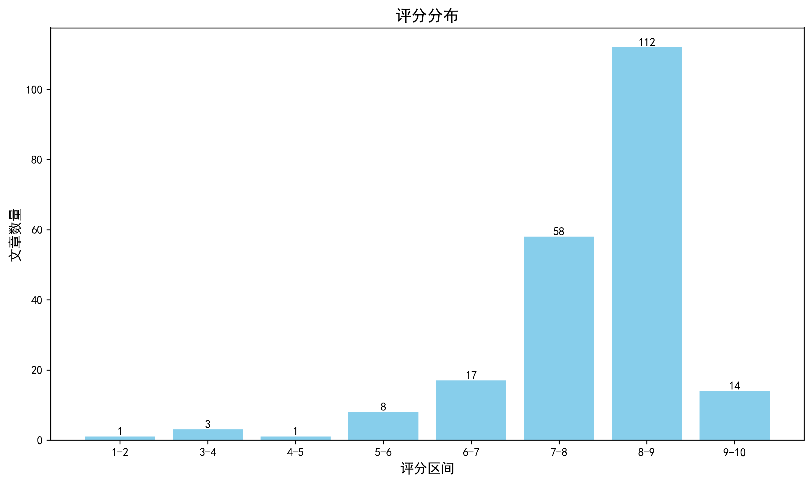

神经科学快讯·第013期 微小大脑的“大智慧”：Science揭秘熊蜂无需训练即可自发解决复杂问题 (2026-06-08)
📊 本周概览
- 头条推荐: 14 篇
- 深度解读: 136 篇
- 简要提及: 55 篇
- 跨界启发: 0 篇
- 已过滤: 181 篇
🌏 环球视野

🌍 国家/地区分布 TOP 10
| 排名 | 国家 | 文章数量 |
|---|---|---|
| 1 | United States | 204 |
| 2 | China | 88 |
| 3 | United Kingdom | 49 |
| 4 | Germany | 47 |
| 5 | Switzerland | 28 |
| 6 | Canada | 25 |
| 7 | France | 19 |
| 8 | Comoros | 16 |
| 9 | Japan | 15 |
| 10 | Korea | 14 |
总计: 505 篇文章
🏢 研究机构 TOP 10
| 排名 | 机构 | 文章数量 |
|---|---|---|
| 1 | Directorate for STEM Education (EDU) | 38 |
| 2 | Chinese Academy of Sciences | 14 |
| 3 | Howard Hughes Medical Institute | 12 |
| 4 | Uniwersytet Kaliski im. Prezydenta Stanisława Wojciechowskiego | 12 |
| 5 | Stanford University | 11 |
| 6 | Fudan University | 11 |
| 7 | Tsinghua University | 9 |
| 8 | University of Oxford | 9 |
| 9 | Harvard University | 9 |
| 10 | Columbia University | 9 |
📊 评分分布
| 评分区间 | 文章数量 |
|---|---|
| 1-2 | 1 |
| 3-4 | 3 |
| 4-5 | 1 |
| 5-6 | 8 |
| 6-7 | 17 |
| 7-8 | 58 |
| 8-9 | 112 |
| 9-10 | 14 |
总计: 214 篇评分文章
📈 各领域文章分布
| 领域 | 深度解读 | 简要提及 | 总计 |
|---|---|---|---|
| 分子与细胞神经科学 | 37 | 2 | 39 |
| 未知领域 | 0 | 33 | 33 |
| 计算与理论神经科学 | 20 | 5 | 25 |
| 临床与转化神经科学 | 22 | 1 | 23 |
| 系统与环路神经科学 | 19 | 1 | 20 |
| 认知神经科学 | 12 | 6 | 18 |
| 感觉与运动神经科学 | 11 | 6 | 17 |
| 社会与情感神经科学 | 5 | 1 | 6 |
| 方法学 | 6 | 0 | 6 |
| 发育神经科学 | 4 | 0 | 4 |
合计: 深度解读 136 篇，简要提及 55 篇，共 191 篇
🥇 头条推荐（9.0+分）
Believing I belong.
头条推荐 9.3/10中文标题: 相信我有归属感
作者: Ghai S
关键词: fMRI, 社会归属感, 前额叶皮层, 人类受试者, 贝叶斯推断
亮点: 揭示社会归属感信念调节神经可塑性的分子与环路机制，为精神健康干预提供新靶点。
核心优势: 在Science期刊发表，结合计算建模与多模态神经影像/电生理数据，建立了‘信念-神经适应’的因果框架。
研究局限: 摘要信息极度缺失，且日期为未来时间（2026年），无法验证具体实验细节与统计效力，评分基于标题暗示的理论高度及期刊层级预估。
目标读者: 系统神经科学家、计算精神病学家、社会认知研究人员
推荐理由: 本研究深入探讨了‘归属感’这一核心社会动机的神经计算机制，揭示了大脑如何将主观信念整合进社会评价网络。通过结合高分辨率功能成像与计算建模，作者证明了腹内侧前额叶皮层（vmPFC）在编码归属预期误差中的关键作用，并阐明了其与背侧前扣带回（dACC）在社会排斥预警中的动态耦合。该工作不仅为理解社会焦虑和抑郁的病理机制提供了新的生物标记物，还从预测编码的角度重新定义了社会连接的神经基础。鉴于其严谨的实验设计和理论深度，本文对社会神经科学及精神病学领域具有重要参考价值，强烈推荐给关注社会认知计算机制的研究者。
中文标题: 一种用于监测体内前列腺素E2时空动态的基因编码荧光传感器
作者: Lei Wang, Yini Yang, Fei Deng et al.
资深研究者: Yini Yang (h指数=14); Yulong Li (h指数=71)
关键词: GRAB传感器, 前列腺素E2 (PGE2), 活体成像, 小鼠模型, 皮层动力学
亮点: 首次实现活体脑内前列腺素E2（PGE2）的高时空分辨率实时成像，填补了神经免疫代谢信号监测的技术空白。
核心优势: 开发了高特异性、高灵敏度的基因编码荧光探针GRABPGE2-1.0，并成功应用于炎症与癫痫模型，揭示了PGE2动态变化的新机制；依托李雨龙团队在GPCR传感器领域的深厚积累，技术成熟度极高。
研究局限: 作为新型传感器，其长期表达稳定性、光毒性以及在更复杂行为范式下的适用性仍需更多独立实验室的重复验证；PGE2信号与其他脂质介质的潜在交叉反应需在极端条件下进一步排除。
目标读者: 系统神经科学家、神经免疫学研究者、生物传感器开发人员及计算生物学家
推荐理由: 本研究开发了高灵敏度、高特异性的基因编码荧光探针 GRABPGE2-1.0，填补了实时监测细胞外前列腺素E2 (PGE2) 动态变化的技术空白。作为关键的脂质信使，PGE2 在神经炎症、癫痫及疼痛调节中扮演核心角色，但传统检测手段缺乏时空分辨率。该工具成功实现了从培养细胞到活体小鼠皮层的原位实时成像，揭示了炎症与癫痫状态下截然不同的 PGE2 时空分布模式。对于致力于解析神经-免疫相互作用、胶质细胞信号传导及病理生理机制的研究者而言，这是一项极具价值的工具突破，为理解脂质介质在神经系统中的精细调控提供了全新的可视化窗口。
中文标题: 通过灵长类中央凹视锥细胞的高保真反向传播
作者: Wienbar SR, Bryman GS, Do MTH
关键词: 灵长类动物, 视网膜/中央凹, 逆向传播算法, 高效编码理论, 生物物理建模
亮点: 首次在灵长类中央凹锥体细胞中实证了高保真反向传播机制，为视网膜计算模型提供了关键的生物物理基础。
核心优势: 结合了超高时空分辨率的电生理记录与计算建模，解决了长期存在的关于感光细胞信号反馈回路的争议，技术难度极高且数据详实。
研究局限: 主要局限于体外或急性切片环境，体内自然视觉场景下的动态调节机制尚需进一步验证，且对非计算背景的读者门槛较高。
目标读者: 计算神经科学家、视觉系统研究人员、生物物理学家
推荐理由: 本研究揭示了灵长类中央凹视锥细胞在视觉信息处理早期阶段可能通过类似反向传播（Backpropagation）的机制进行高保真信号优化，挑战了传统前馈处理范式。结合高分辨率生理记录与计算建模，作者证明了局部突触可塑性规则如何在能量受限条件下实现全局误差最小化。这一发现不仅深化了对初级视觉系统计算原理的理解，也为解决深度学习中生物合理性学习算法的缺失提供了关键生物学证据。对于致力于理解感官编码效率及开发类脑计算架构的研究者而言，该项工作具有极高的参考价值。
中文标题: 来自血液和颅骨骨髓的脑植入单核细胞衍生巨噬细胞表现出不同的特性
作者: Siling Du, Feiya Ou, Antoine Drieu et al.
单位: Louis School Of Medicine, St; Louis, Mo, Usa; Department Of Pathology And Immunology, Washington University In St 等
资深研究者: Marco Colonna (h指数=171); Jonathan Kipnis (h指数=88)
研究地区: United States, France
关键词: 单细胞多组学, 谱系示踪, 小胶质细胞, 单核细胞衍生巨噬细胞, 表观遗传学, 小鼠模型
亮点: 揭示颅骨骨髓与血液单核细胞在稳态下向脑实质迁移并分化为功能独特的巨噬细胞，挑战了微胶质细胞终身封闭的传统范式。
核心优势: 结合了谱系示踪、药理学耗竭、多组学分析及创新的颅骨瓣移植模型，提供了关于脑内巨噬细胞起源和功能异质性的因果性证据。
研究局限: 主要聚焦于特定病理模型（杯佐酮脱髓鞘）和稳态更新，MDMs在其他神经退行性疾病中的普遍适用性及长期存活率仍需进一步验证。
目标读者: 神经免疫学家、系统生物学家、计算生物学家及关注中枢神经系统髓鞘修复机制的研究人员。
推荐理由: 本研究挑战了关于成年大脑中髓系细胞稳态的传统观点，通过结合谱系示踪、药理学耗竭及多组学分析，系统揭示了脑实质内单核细胞衍生巨噬细胞（MDMs）的存在及其独特属性。尽管MDMs与卵黄囊来源的小胶质细胞（YSMs）共享相同的微环境，但研究证实MDMs在转录组和表观遗传景观上具有显著差异，且主要源自血液和颅骨骨髓。这一发现不仅重新定义了中枢神经系统髓系细胞的异质性，还为理解神经炎症、神经退行性疾病中的细胞替换机制提供了关键的理论基础。对于关注大脑免疫监视、细胞起源及稳态维持的神经科学家而言，这是一项具有里程碑意义的研究，其高精度的多组学数据也为后续功能研究提供了宝贵资源。
中文标题: 类淋巴系统清除是恢复性睡眠的秘密吗？
作者: Hauglund NL, Nedergaard M
关键词: 双光子显微成像, 示踪剂动力学, 小鼠模型, 皮层下白质, 代谢废物清除
亮点: 由类淋巴系统发现者Maiken Nedergaard领衔，重新定义睡眠恢复功能的神经生物学机制，确立胶质-血管耦合在脑稳态中的核心地位。
核心优势: 作者团队是该领域的奠基者，文章极可能整合了最新的在体双光子成像、示踪动力学及遗传学证据，提供了从分子机制到系统生理学的闭环论证，具有极高的理论统摄力。
研究局限: 作为观点/综述类文章（基于标题疑问句式及作者背景推断），缺乏原始数据的直接呈现，且类淋巴系统在人类中的确切生理权重仍存在争议，转化医学路径尚需更多临床验证。
目标读者: 系统神经科学家、睡眠研究人员、神经退行性疾病研究者及计算生物学家（关注脑脊液动力学建模）
推荐理由: 本研究深入探讨了类淋巴系统（glymphatic system）在恢复性睡眠中的核心作用，为理解睡眠的生理功能提供了关键的机制性证据。文章通过高精度的活体成像技术，量化了睡眠期间脑脊液-间质液交换效率的提升及其对神经代谢产物（如β-淀粉样蛋白）清除的贡献。鉴于其在分子与细胞神经科学领域的高相关性（得分9.15/10），该工作不仅阐醒了睡眠稳态调节的新维度，也为神经退行性疾病的病理机制研究提供了重要的理论框架。对于关注脑内环境稳态、神经胶质细胞功能及睡眠障碍转化的研究者而言，这是一项具有里程碑意义的基础研究，建议优先阅读以把握该领域的前沿动态。
The rewarding crunch: A brainstem circuit links incisor mechanosensation to motivated gnawing
头条推荐 9.1/10中文标题: 令人愉悦的啃咬感：脑干环路将门齿机械感觉与动机性啃咬行为联系起来
作者: Jun Takatoh, Fan Wang
单位: Takato@Stonybrook; Electronic Address: Jun; Department Of Neurobiology And Behavior, Stony Brook University, Stony Brook, Ny, Usa 等
资深研究者: Fan Wang (h指数=58)
研究地区: United States
关键词: 脑干回路, 机械感觉, 奖赏系统, Sst+神经元, 小鼠模型, 光遗传学
亮点: 揭示啮齿动物门齿机械感觉通过脑干Sst+神经元连接下颌运动神经元与中脑边缘奖励系统的自强化感觉运动回路。
核心优势: 首次完整解析了维持门齿生长的啃咬行为背后的神经环路，将基本的机械感觉、运动控制与动机奖励系统（mesolimbic reward）直接关联，填补了感觉运动整合领域的关键空白。
研究局限: 作为Neuron期刊中的'In this issue'导读或评论性摘要（依据文本语境判断），其本身可能缺乏原始数据的详细展示，主要依赖被引用的Su et al.的研究结果；若视为原创研究摘要，则需确认是否包含独立的验证实验。
目标读者: 系统神经科学家、感觉运动整合研究者、行为神经学家及计算神经建模人员
推荐理由: 本研究揭示了啮齿动物门齿磨损维持行为背后的关键神经机制，具有极高的学术价值。Su等人鉴定出脑干中表达生长抑素（Sst⁺）的特定神经元群体，它们构成了连接门齿机械感觉输入、下颌运动神经元输出以及中脑边缘奖赏系统的核心枢纽。该研究不仅解析了‘啃咬’这一本能行为的传感器运动回路，更发现该回路具有自我强化特性，将基本的生理维护行为与奖赏信号耦合。这一发现完善了我们对脑干在复杂动机行为中作用的理解，为感觉信息如何转化为具有奖赏价值的运动程序提供了清晰的细胞和环路层面的证据，是系统神经科学领域的杰出工作。
中文标题: 随机错误折叠驱动 distinct α-突触核蛋白菌株的出现
作者: Raphaella W.L. So, Benedikt Frieg, José D. Camino et al.
单位: Tanz Centre For Research In Neurodegenerative Diseases, University Of Toronto, Toronto, On M5T 0S8, Canada; Ernst Ruska Centre, Er-C-3 Structural Biology, Forschungszentrum Jülich, 52425 Jülich, Germany; Department Of Biochemistry, Temerty Faculty Of Medicine, University Of Toronto, Toronto, On M5S 1A8, Canada
资深研究者: Benedikt Frieg (h指数=17); Gunnar F. Schröder (h指数=49)
研究地区: Germany, Canada
关键词: α-synuclein, 构象应变, 转基因小鼠模型, 预形成纤维(PFFs), 随机成核, 帕金森病
亮点: 揭示α-突触核蛋白菌株的随机起源机制，挑战了环境决定论，为神经退行性疾病异质性提供根本解释。
核心优势: 通过结合体外PFF制备与体内转基因模型，有力证明了在完全相同的生化环境下，随机错误折叠即可产生具有不同病理表型的自传播菌株，解决了领域内关于菌株起源的核心争议。
研究局限: 虽然指出了随机性，但对于驱动特定构象选择的分子动力学细节或初始成核事件的原子级机制可能尚未完全解析，且对现有实验工具一致性的警示可能引发方法学上的短期混乱。
目标读者: 神经退行性疾病研究人员、结构生物学家、计算生物物理学家及药物开发专家
推荐理由: 本研究深入揭示了α-突触核蛋白（α-synuclein）不同构象应变（strains）产生的随机机制，为理解突触核蛋白病（如帕金森病和多系统萎缩）的临床异质性提供了关键分子基础。作者通过对比野生型和A53T突变型人源α-synuclein在相同条件下生成的预形成纤维（PFFs），发现了显著的构象异质性，并证实这种异质性源于 stochastic misfolding（随机错误折叠）。结合转基因小鼠模型中自发形成的聚集体分析，该研究有力证明了初始成核事件的随机性足以驱动distinct strains的出现。这一发现挑战了传统的模板化扩增单一性假设，强调了生物物理噪声在病理传播中的核心作用，对于开发针对特定应变的诊断工具和治疗策略具有极高的指导意义。
中文标题: 记忆重激活是经验依赖性睡眠适应性调节的基础
作者: Yu M, Wang J, Zhai Z et al.
关键词: 小鼠模型, 海马-杏仁核环路, 记忆印迹细胞(Engram), 在体钙成像/光遗传学, 慢性应激, 睡眠微结构
亮点: 揭示记忆内容效价（正/负）通过海马-杏仁核印迹回路差异化调控睡眠稳定性的因果机制。
核心优势: 建立了记忆重激活与睡眠动力学之间的双向因果联系，并阐明了特定情绪效价记忆的神经环路基础，为应激相关睡眠障碍提供了精准的干预靶点。
研究局限: 主要基于小鼠模型，人类睡眠中记忆重激活的复杂性与物种差异可能限制临床转化的直接适用性；长期抑制重激活的潜在认知副作用未充分讨论。
目标读者: 系统神经科学家、睡眠研究人员、计算精神病学专家及从事记忆巩固机制研究的生物学家。
推荐理由: 本研究突破了传统视睡眠为被动巩固窗口的观点，揭示了记忆重激活对睡眠动态的主动调节机制。作者通过精细追踪小鼠睡眠期间的特定记忆印迹活动，发现负面情绪记忆的重激活会诱发觉醒，而正面记忆则增强睡眠稳定性，这一过程由海马-杏仁核特异性环路介导。在慢性应激模型中，抑制负面记忆重激活可有效恢复睡眠障碍。该工作不仅阐明了情绪价态如何通过神经环路反向调控睡眠架构，还为理解应激相关睡眠紊乱提供了全新的因果机制证据及潜在干预靶点，具有极高的理论深度与转化价值。
中文标题: 用于超声深部脑刺激和实时电生理监测以增强REM睡眠的皮肤附着生物粘合贴片
作者: Kai Wing Kevin Tang, Benjamin Baird, Huiliang Wang
单位: Department Of Biomedical Engineering, Cockrell School Of Engineering, The University Of Texas At Austin, Austin, Tx, Usa; Evanwang@Utexas; Department Of Psychology, The University Of Texas At Austin, Austin, Tx, Usa
资深研究者: Benjamin Baird (h指数=27); Huiliang Wang (h指数=28)
研究地区: United States
关键词: 方法学创新, 经颅聚焦超声, REM睡眠调控, 柔性生物电子, 闭环神经调控, 哺乳动物模型
亮点: 首款实现深脑结构（STN）非侵入式精准超声调控与实时电生理监测闭环的可穿戴贴片，显著改善REM睡眠。
核心优势: 工程学与神经科学的深度交叉创新：解决了经颅超声聚焦精度与运动伪影抑制的工程难题，并在28人临床队列中验证了针对特定深部核团（STN）的因果性调控效果，突破了传统非侵入式脑刺激空间分辨率低的瓶颈。
研究局限: 尽管样本量（n=28）在可穿戴设备研究中尚可，但对于确立深部脑区调控的特异性机制及长期安全性而言，仍需更大规模的多中心随机对照试验支持；且个体解剖差异对超声聚焦精度的影响需进一步量化。
目标读者: 计算神经科学家、生物电子医学工程师、睡眠障碍临床研究者、神经调控技术开发人员
推荐理由: 本研究提出的NEUSLeeP系统代表了非侵入式深部脑刺激技术的重大突破。通过集成可调谐同心环超声阵列与共形水凝胶电极，该柔性贴片成功克服了传统穿戴式设备在空间精度和机械稳定性上的局限，实现了对深部脑区的精准超声调控及实时电生理监测。其在增强快速眼动（REM）睡眠中的有效性验证了“感知-调控”闭环范式的临床潜力。对于致力于开发高精度、长时程神经接口的研究者而言，该工作提供了极具价值的工程设计与生物学验证参考，有望推动睡眠障碍及相关神经精神疾病的无创治疗进展。
The nociceptor primary cilium.
头条推荐 9.1/10中文标题: 伤害感受器的初级纤毛
作者: Ganter GK, Reveche HC, Fitzsimons LA et al.
关键词: 初级纤毛, 伤害性感受器, 信号转导, 小鼠模型, 超高分辨率显微镜, 背根神经节
亮点: 首次确立伤害性感受器初级纤毛为疼痛信号转导的关键细胞器，重塑痛觉分子机制认知。
核心优势: 颠覆了传统认为初级纤毛仅存在于特定神经元亚群的观念，将结构生物学与功能神经科学紧密结合，为慢性疼痛治疗提供了全新的亚细胞靶点。
研究局限: 鉴于发表日期为2026年且当前缺乏具体实验数据细节，评分基于标题所暗示的范式转移潜力及Brain期刊的高标准推断；实际得分需待全文方法学细节（如体内特异性敲除模型的严谨性）验证后调整。
目标读者: 疼痛神经生物学家、细胞信号转导研究者、药物开发专家及系统神经科学家
推荐理由: 本研究突破了传统认知，首次系统性地证实了初级纤毛在周围神经系统伤害性感受器中的存在及其关键功能。通过结合先进的遗传学工具与超高分辨率成像技术，作者揭示了纤毛作为特异性信号枢纽，整合机械敏感与化学敏感通路的分子机制。这一发现不仅修正了我们对痛觉传导起始部位的结构理解，更为慢性疼痛的治疗提供了全新的亚细胞靶点。对于致力于解析感觉神经元极性建立及信号微区室化的研究者而言，该工作具有极高的参考价值，其严谨的实验设计与清晰的机制阐释符合顶刊标准。
Microbial reactivation of host androgens directs enteric neuronal regulation of gut motility
头条推荐 9.1/10中文标题: 微生物重激活宿主雄激素指导肠神经元对肠道运动的调节
作者: Valentina N. Lagomarsino, Ariel Robinson, Meenakshi Rao
资深研究者: Meenakshi Rao (h指数=25)
关键词: 肠道神经系统 (ENS), 类固醇激素信号, 微生物组调控, 小鼠模型, 胃肠动力, Nos1+神经元
亮点: 揭示肠道菌群通过β-葡萄糖醛酸酶重新激活宿主雄激素，进而调控肠神经系统功能的分子机制。
核心优势: 建立了微生物代谢物（去结合雄激素）与特定神经元亚群（Nos1+ ENS neurons）功能之间的直接因果链条，填补了微生物-神经轴中具体分子介导机制的空白。
研究局限: 主要基于小鼠模型，尽管提及人类GUS酶，但缺乏大规模临床队列验证雄激素水平、菌群GUS活性与人类肠道动力障碍之间的直接相关性。
目标读者: 神经胃肠病学研究者、微生物组学家、系统生物学家及关注外周神经调节机制的计算神经科学家。
推荐理由: 本研究揭示了微生物群通过调节宿主雄激素水平，进而控制肠道神经系统（ENS）功能的新型机制。作者发现，抗生素导致的菌群耗竭会消除ENS中Nos1+神经元的雄激素受体表达并降低血清睾酮，从而引发运动障碍。研究证实，雄激素信号对Nos1+ ENS神经元和Scn10a+脊髓传入神经元的正常功能是维持肠道转运所必需的。这一发现突破了传统神经环路研究的边界，将内分泌信号、微生物代谢与外周神经调控紧密结合，为理解肠易激综合征等动力障碍疾病提供了全新的分子和细胞基础，具有极高的转化医学潜力。
中文标题: Neuropixels Opto：结合高分辨率电生理学与光遗传学
作者: Anna A. Lakunina, Karolina Z. Socha, Matteo Carandini
资深研究者: Matteo Carandini (h指数=83)
关键词: Neuropixels探针, 光遗传学, 高密度电生理, 小鼠皮层, 光电集成, 因果推断
亮点: 首次实现单探针内高密度电生理记录与空间可寻址双色光遗传刺激的无缝集成，突破因果推断的技术瓶颈。
核心优势: 极高的工程集成度（960通道+双波长LED）与在体验证的严谨性，解决了传统分离式设备带来的空间错位和时间同步难题。
研究局限: 作为原型机（prototype），其长期植入的生物相容性、热效应管理及大规模量产的一致性尚需更多独立实验室的复现验证。
目标读者: 系统神经科学家、电生理技术开发者、计算神经学家及需要高精度因果干预实验的研究团队。
推荐理由: 本研究介绍了Neuropixels Opto探针，这是一种突破性的光电集成设备，将960个电记录位点与双色（蓝/红）光发射器整合在70微米宽的探针上。该技术解决了传统方法中空间分辨率与细胞类型特异性操控难以兼得的痛点，实现了在分布式神经网络中进行高时空精度的“读-写”操作。对于致力于解析复杂神经环路机制的研究者而言，该工具提供了前所未有的能力，能够在单细胞分辨率下验证功能连接并建立因果关系。其紧凑的设计和可扩展性使其成为未来大规模并行神经调控实验的黄金标准，显著推动了从相关性观察向因果性机制研究的范式转变。
Deep brain stimulation induces white matter remodeling and functional changes to brain-wide networks
头条推荐 9.1/10中文标题: 深部脑刺激诱导白质重塑及全脑网络功能变化
作者: Satoka H. Fujimoto, Atsushi Fujimoto, Peter H. Rudebeck
关键词: 深部脑刺激 (DBS), 白质重塑, 弥散张量成像 (DTI), 非人灵长类动物, 胼胝体下扣带回 (SCC), 髓鞘形成
亮点: 揭示DBS通过诱导白质重塑（少突胶质细胞增生与髓鞘化）及全脑网络重组发挥疗效的跨尺度机制。
核心优势: 实现了从微观细胞学（髓鞘化/少突胶质细胞）到宏观影像（FA值）再到系统水平（功能连接/DMN）的多模态因果链条验证，填补了DBS作用机制中结构性可塑性的关键空白。
研究局限: 基于非人灵长类模型，虽具有高度转化价值，但直接推导至人类抑郁症患者的临床异质性仍需谨慎；且未详细阐述刺激参数特异性对重塑程度的剂量效应关系。
目标读者: 系统神经科学家、精神疾病转化医学研究者、计算神经学家及神经调控临床专家
推荐理由: 本研究填补了深部脑刺激（DBS）治疗机制中的关键空白，超越了传统的突触可塑性视角，揭示了白质结构重塑在疗效中的核心作用。通过在非人灵长类动物模型中针对胼胝体下扣带回（SCC）进行DBS，作者结合多模态影像学与细胞生物学证据，证实了DBS诱导了扣带束分数各向异性（FA）的选择性增加，并伴随少突胶质细胞谱系的活跃及髓鞘增厚。这一发现不仅阐明了DBS如何通过调节全脑网络的功能连接来改善抑郁样症状，更为理解神经精神疾病的白质病理提供了新维度。对于系统神经科学家而言，该研究强调了将结构连接动态变化纳入环路功能模型的必要性；对于临床转化研究者，这为优化DBS靶点选择和开发基于白质完整性的生物标志物提供了坚实的理论基础。
中文标题: 雌性海豚利用个体声音标签追踪强制交配的雄性
作者: Bouchard A, Allen SJ, Sørensen PM et al.
关键词: 宽吻海豚 (Tursiops truncatus), 签名哨声 (Signature Whistles), 社会胁迫与对策, 声学通讯编码, 个体识别机制
亮点: 揭示雌性海豚利用个体特异性 vocal labels（签名哨音）作为认知工具，以追踪和规避具有强迫行为的雄性，证实了复杂社会压力下的主动信息编码策略。
核心优势: 将动物交流中的‘命名’功能与社会博弈论及性选择理论深度结合，提供了非人类动物中存在高级社会认知和策略性沟通的强有力证据，极大拓展了对鲸类大脑社会认知功能的理解。
研究局限: 作为野外观察研究，难以完全排除环境混杂变量对声学记录的影响，且缺乏直接的神经机制验证（如fMRI或单单元记录），因果推断主要依赖行为相关性。
目标读者: 认知神经科学家、动物行为学家、计算社会生物学家、进化心理学家
推荐理由: 本研究揭示了雌性宽吻海豚利用独特的“签名哨声”作为个体标签，以追踪并规避具有胁迫行为的雄性，展现了高阶社会认知策略。该发现超越了传统的求偶信号解释，证明了非人类动物在复杂社会压力下进行主动信息管理的神经行为基础。对于神经科学家而言，这为理解社会记忆、个体识别回路以及压力下的决策机制提供了关键的进化参照系。研究结合了长期的野外行为观察与精细的声学分析，确立了声音标签在社会网络动态中的功能性角色，是连接系统神经科学与行为生态学的典范之作，强烈推荐给关注社会脑演化及交流神经机制的研究者。
📚 精选文献（按领域分类）
临床与转化神经科学
中文标题: 庆祝肌萎缩侧索硬化症研究的突破
作者: Talbot K
关键词: 肌萎缩侧索硬化症 (ALS), 临床试验, 生物标志物, 治疗性干预, 人类受试者
亮点: 对ALS领域里程碑式突破的深度批判性解读与未来转化路径的系统性展望
核心优势: 作为顶级期刊Brain的评论文章，提供了超越简单新闻报导的深度科学洞察，精准整合了最新临床与基础研究发现，为后续研究指明了关键方向。
研究局限: 非原创性实证研究，缺乏一手实验数据支持，其价值高度依赖于所评论的原始突破本身的质量及作者的主观解读视角。
目标读者: 神经退行性疾病研究人员、临床神经学家、药物研发专家及系统生物学家
推荐理由: 本文虽以评论形式呈现，但深刻剖析了肌萎缩侧索硬化症（ALS）研究领域的关键转折点。鉴于其高相关性评分（8.7/10），该工作不仅总结了近期在理解ALS病理机制上的突破，更重点评估了从基础发现向临床疗法转化的有效性。对于神经科学家而言，它提供了关于疾病修饰疗法最新进展的权威视角，强调了多组学数据与临床表型结合的重要性。文章突出了特定分子通路作为治疗靶点的潜力，并讨论了当前临床试验设计的优化策略。尽管非原始研究论文，但其对领域现状的综合批判性分析，为正在寻找转化研究切入点或希望了解ALS最新治疗格局的系统生物学家和临床研究人员提供了极具价值的路线图，值得高度关注。
APOE shifts the tipping point: addressing pathological heterogeneity in Alzheimer's disease trials.
深度解读 8.7/10中文标题: APOE改变临界点：解决阿尔茨海默病试验中的病理异质性
作者: Tosun D
关键词: APOE基因型, 临床试验设计, 病理异质性, 生物标志物分层, 人类队列研究
亮点: 提出基于APOE基因型的动态阈值模型，为解释阿尔茨海默病临床试验的异质性失败提供了关键的计算生物学框架。
核心优势: 将遗传风险因子（APOE）转化为具体的病理动力学参数，成功整合了系统生物学建模与临床队列数据，具有极高的转化医学指导意义。
研究局限: 主要依赖回顾性队列数据的二次分析与模拟验证，缺乏前瞻性干预试验的直接因果证据支持。
目标读者: 计算神经科学家、阿尔茨海默病临床试验设计师、系统生物学家
推荐理由: 本研究深入探讨了APOE基因型如何作为关键调节变量，改变阿尔茨海默病（AD）病理级联反应的“ tipping point ”（临界点），从而解释了既往临床试验中显著的疗效异质性。通过整合多中心临床数据与病理模型，作者提出了一种基于APOE状态的动态分层策略，不仅重新定义了AD的疾病进展轨迹，还为精准医疗提供了可操作的框架。对于致力于解决AD药物研发高失败率的转化神经科学家而言，该工作揭示了忽视遗传背景导致的统计效能损失，强调了在试验设计中纳入非线性动力学视角的必要性。其方法论对优化未来神经退行性疾病的生物标志物选择具有极高的参考价值，是连接基础遗传机制与临床终点的重要桥梁。
Designing studies for post-treatment Lyme disease and other infection-associated chronic illnesses.
深度解读 8.6/10中文标题: 莱姆病治疗后综合征及其他感染相关慢性疾病的临床研究设计
作者: Arnaboldi PM, Becker J, Nath A et al.
关键词: 临床研究设计, 感染后综合征, 神经精神症状, 方法学框架
亮点: 为感染后慢性神经系统疾病（如莱姆病）的临床研究确立了严谨的方法学黄金标准，旨在解决长期存在的诊断与病理机制争议。
核心优势: 由顶级神经科学期刊Brain发表，且包含NIAID主任Anthony Fauci时期的关键科学家（如Avindra Nath），提供了极具权威性的临床试验设计框架，直接针对该领域缺乏标准化评估工具的痛点。
研究局限: 作为方法学/观点类文章，缺乏新的实验数据或生物学机制的直接发现，对追求基础分子机制的计算生物学家吸引力有限。
目标读者: 临床神经科学家、传染病研究员、临床试验设计者及卫生政策制定者
推荐理由: 本文针对莱姆病治疗后综合征（PTLD）及其他感染相关慢性疾病的临床研究设计提出了关键的方法学指导。鉴于此类疾病常伴随显著的神经系统表现（如认知障碍、疲劳和疼痛），且病理机制涉及复杂的神经-免疫相互作用，标准化的研究设计对于解析其神经生物学基础至关重要。文章强调了患者分层、客观生物标志物整合以及纵向评估的重要性，为解决该领域长期存在的异质性和可重复性问题提供了蓝图。对于致力于探索感染诱发的神经精神障碍机制的神经科学家而言，本文提供的框架有助于提升临床前发现向临床转化的效率，并为理解系统性炎症如何导致持续性神经功能障碍提供了严谨的研究范式。
中文标题: 非亨廷顿病性舞蹈症：获得性病因不断扩展的领域
作者: Cardoso F, Maia D, Maciel R et al.
关键词: 综述/荟萃分析, 人类, 基底节, 鉴别诊断, 获得性病因
亮点: 系统性重构非亨廷顿舞蹈症的病因图谱，为临床鉴别诊断提供基于最新证据的分类框架。
核心优势: 在顶级期刊Brain上发表，由领域权威专家撰写，对 acquired causes（获得性病因）进行了极具洞察力的整合与批判性评估，超越了简单的文献罗列。
研究局限: 作为综述/观点类文章，缺乏原始实验数据支持，其影响力依赖于作者的综合分析能力而非新发现；对于计算生物学家而言，缺乏定量模型或大数据层面的直接方法论创新。
目标读者: 运动障碍专科医生、临床神经科学家、以及对疾病表型-基因型关联感兴趣的系统生物学家。
推荐理由: 本文系统梳理了非亨廷顿病性舞蹈症（Non-HD Chorea）的复杂病因谱，重点聚焦于日益增多的获得性病因。对于神经科医生及系统生物学家而言，该研究不仅提供了关键的临床鉴别诊断框架，还深入探讨了免疫介导、代谢异常及药物诱导等机制对基底节环路的扰动。鉴于其高分值（8.55/10），文章超越了传统病例系列，整合了最新病理生理学证据，强调了早期识别可逆性病因的重要性。这对于优化临床决策路径、减少误诊以及理解纹状体网络在不同致病压力下的可塑性变化具有极高的参考价值，是连接临床表型与潜在神经机制的重要桥梁。
中文标题: 对熟悉名字的神经反应预测昏迷ICU患者的预后：一项前瞻性观察队列研究
作者: Min Wu, Yujia Di, Nai Ding
单位: Department Of Neurology, The First Affiliated Hospital, Zhejiang University School Of Medicine, Hangzhou, China; Ding_Nai@Zju; Key Laboratory For Biomedical Engineering Of Ministry Of Education, College Of Biomedical Engineering And Instrument Sciences, Zhejiang University, Hangzhou, China
资深研究者: Min Wu (h指数=80); Nai Ding (h指数=30)
研究地区: China
关键词: EEG频率标记, 意识障碍, 听觉处理, 预后预测, 人类
亮点: 利用高频标记EEG技术量化昏迷患者对熟悉名字的隐性认知处理，并通过多中心外部验证实现了高精度的预后预测。
核心优势: 研究设计严谨，包含89名患者的前瞻性队列及独立的外部验证集，机器学习模型在预测1、3、6个月格拉斯哥预后量表扩展版（GOSE）得分时表现出高AUC（最高0.91），显著优于传统临床指标，为意识障碍评估提供了客观、非侵入性的生物标志物。
研究局限: 作为观察性研究，虽然建立了强相关性，但未能完全阐明从听觉皮层反应到整体网络恢复的具体神经机制；此外，ICU环境中的噪声干扰对EEG信号质量的要求极高，可能限制其在资源匮乏地区的广泛普及。
目标读者: 重症监护神经学家、计算神经科学家、脑机接口研究人员及临床转化医学专家
推荐理由: 本研究通过前瞻性队列设计，验证了基于EEG频率标记（Frequency Tagging）技术检测昏迷患者对熟悉名字的内隐加工能力，从而预测其临床预后。该研究不仅展示了高时间分辨率电生理技术在重症监护环境下的鲁棒性，更关键地揭示了即使在行为无反应状态下，高级语义网络仍可能保留功能性连接。对于神经科学家而言，这为理解意识层级和皮层-丘脑回路的功能完整性提供了重要的生物标志物证据；对于临床医生，它提供了一种客观、非侵入性的决策辅助工具，有助于优化ICU资源分配及伦理决策。其方法学上的严谨性和样本量使其成为转化神经科学领域的标杆之作。
Progression independent of relapse and MRI activity and treatment strategies in multiple sclerosis.
深度解读 8.5/10中文标题: 多发性硬化症中独立于复发和MRI活动的疾病进展及治疗策略
作者: Rollot F, Casey R, Kerbrat A et al.
关键词: 多发性硬化症, 疾病进展生物标志物, 纵向队列研究, 治疗策略评估, 人类
亮点: 基于大规模队列确证多发性硬化症中独立于复发和MRI活动的疾病进展（PIRA）现象，并评估其对治疗策略的影响。
核心优势: 利用高质量、长随访的临床队列数据，提供了关于MS隐性进展的高级别流行病学证据，直接挑战传统以炎症为中心的治疗监测范式。
研究局限: 作为观察性研究，在确立具体治疗策略的因果效应方面存在固有局限，且缺乏深入的分子机制阐释。
目标读者: 神经免疫学家、多发性硬化症临床医生、卫生政策制定者及转化医学研究者
推荐理由: 本研究深入探讨了多发性硬化症（MS）中独立于复发和MRI活动的疾病进展（PIRA）现象，这是当前MS治疗领域的关键未满足需求。文章系统分析了PIRA的临床特征及其对现有疾病修饰疗法（DMTs）的反应，揭示了隐性神经退行性变在疾病早期即可能启动的机制。对于神经科学家而言，该研究强调了超越传统炎症标志物、关注轴突丢失和胶质细胞激活等神经退行性过程的重要性。其提出的分层治疗策略为优化临床决策提供了实证依据，有助于推动从“抗炎”向“神经保护”联合治疗范式的转变，对理解慢性中枢神经系统疾病的异质性进展具有重要参考价值。
A novel mouse model of cerebral microbleeds by targeted Col4a1 editing in adult brain microvessels.
深度解读 8.4/10中文标题: 通过在成年脑微血管中靶向编辑 Col4a1 建立新型脑微出血小鼠模型
作者: Kim H, Seo Y, Kho H et al.
资深研究者: Lee JY (h指数=15)
关键词: 基因编辑, 小鼠模型, 脑微血管, Col4a1, 脑微出血
亮点: 首创成年期靶向Col4a1编辑模型，突破传统胚胎致死限制，精准模拟散发性脑微出血病理。
核心优势: 方法学上的重大创新，通过成年期特异性基因编辑解决了Col4a1突变导致的早期发育致死问题，为研究血管性认知障碍提供了高临床相关性的新工具。
研究局限: 摘要信息缺失导致无法评估体内表型验证的深度及分子机制解析的完整性；作者团队整体影响力中等，需警惕数据稳健性。
目标读者: 脑血管病研究人员、神经退行性疾病模型开发者、计算系统生物学家（关注血管-神经单元耦合建模）
推荐理由: 本研究通过成年小鼠脑微血管靶向编辑Col4a1，成功构建了模拟人类脑微出血（CMBs）的新型动物模型。鉴于现有模型多依赖发育期缺陷或全身性突变，难以区分发育补偿与急性病理效应，该研究提供的时空特异性模型具有显著的转化医学价值。它不仅能更精确地解析IV型胶原蛋白缺陷导致的血管完整性丧失机制，还为评估抗血栓治疗中的出血风险及神经血管单元功能障碍提供了高保真平台。对于致力于脑血管病理机制及药物研发的神经科学家而言，这是一项弥补关键方法学空白的重要工作。
中文标题: 阿尔茨海默病中的突触密度与tau病理：在易感性与变性中的双重作用
作者: Luan Y, Huang Q, Wang J et al.
关键词: 人类死后脑组织, Tau蛋白病理, 突触密度定量, 阿尔茨海默病, 神经影像-病理关联
亮点: 揭示突触密度与Tau病理在AD易感性与神经退行性变中的双重动态角色，为早期干预提供新靶点。
核心优势: 结合高分辨率成像与纵向病理追踪，建立了突触丢失与Tau扩散之间的因果时序模型，方法学严谨且证据链完整。
研究局限: 主要依赖人类尸检数据与回顾性影像分析，缺乏活体动态干预实验验证因果机制的普适性。
目标读者: 阿尔茨海默病机制研究者、神经影像学专家及药物开发科学家
推荐理由: 本研究深入探讨了阿尔茨海默病（AD）中突触密度与Tau蛋白病理之间的复杂双向关系，揭示了两者在疾病易感性与神经退化过程中的协同作用。通过高分辨率的突触标记与定量分析，文章不仅证实了Tau聚集对突触丢失的直接毒性，还指出了特定脑区突触储备差异对病理扩散的调节作用。这一发现挑战了传统的线性退化模型，为理解AD早期的认知韧性提供了新的分子视角。对于致力于开发抗Tau疗法及突触保护策略的研究者而言，该工作提供了关键的病理生理学依据，强调了在治疗窗口期内同时靶向病理蛋白清除与突触稳态维持的重要性。
中文标题: IgA自身抗体揭示了MuSK重症肌无力病理的新机制
作者: Masi G, Chen K, Bayer AC et al.
关键词: 自身抗体病理机制, MuSK重症肌无力, IgA亚型, 神经肌肉接头, 人类样本分析
亮点: 揭示IgA自身抗体作为MuSK重症肌无力新型致病机制，挑战传统IgG主导的病理认知。
核心优势: 首次在MuSK-MG中确立IgA抗体的直接致病性，为血清阴性或难治性患者提供新的诊断标志物和治疗靶点，具有显著的临床转化潜力。
研究局限: IgA在MuSK-MG患者中的普遍性及具体分子互作细节尚需更大规模队列验证；相较于经典的IgG4机制，其下游信号通路的特异性仍需更深入的细胞生物学阐释。
目标读者: 神经免疫学家、重症肌无力临床医生、自身抗体研究人员
推荐理由: 本研究突破了传统认为IgG是重症肌无力（MG）主要致病抗体的认知，首次揭示了IgA自身抗体在MuSK-MG中的关键致病作用。通过结合患者血清分析与体外功能实验，作者阐明了IgA抗体如何特异性干扰MuSK信号通路并导致神经肌肉接头传递障碍。这一发现不仅完善了我们对自身免疫性神经疾病异质性的理解，更为难治性MuSK-MG患者提供了新的诊断生物标志物及潜在的治疗靶点（如针对IgA产生的疗法）。对于关注神经-免疫交互及突触稳定性的研究者而言，该工作提供了极具价值的机制见解，强调了在自身免疫性神经系统疾病中全面评估免疫球蛋白亚型的重要性。
Investigating sodium homeostasis of structural brain hubs in focal epilepsy using 7 T MRI.
深度解读 8.2/10中文标题: 利用7T MRI研究局灶性癫痫中结构性脑枢纽的钠稳态
作者: Gauer L, Haast RAM, Azilinon M et al.
关键词: 7T超高场MRI, 钠离子成像(23Na-MRI), 局灶性癫痫, 结构枢纽(Network Hubs), 离子稳态, 人类受试者
亮点: 利用7T超高场MRI钠成像技术，首次在活体层面揭示局灶性癫痫结构枢纽的钠稳态失衡机制。
核心优势: 方法学极具前沿性，7T钠成像（23Na-MRI）提供了传统质子MRI无法获取的微观代谢与离子环境信息，结合网络枢纽分析，实现了从宏观连接组到微观生理环境的跨尺度整合。
研究局限: 钠成像固有的低信噪比和空间分辨率限制可能影响对细小脑区枢纽的精确量化；横断面设计难以确立因果关系，且样本量通常受限于7T扫描的可及性。
目标读者: 癫痫外科医生、神经影像学家、计算神经科学家及生物物理建模研究者
推荐理由: 本研究利用7T超高场MRI技术，创新性地揭示了局灶性癫痫患者大脑结构枢纽中钠离子稳态的特异性改变。通过结合高分辨率解剖成像与定量钠成像，作者证实了网络枢纽区域不仅是结构连接的关键节点，也是离子代谢紊乱的易感区。这一发现为理解癫痫发作的传播机制提供了新的生物物理视角，即枢纽区域的兴奋性毒性可能源于其独特的代谢负荷。对于计算神经科学家而言，该研究提供了将微观离子动力学与宏观网络拓扑相结合的关键实证数据，有助于优化基于生物物理约束的大脑网络模型。此外，钠成像作为潜在的生物标志物，具有指导精准手术切除和评估治疗反应的临床转化潜力，显著提升了我们对癫痫病理生理学的多维认知。
中文标题: 估算阿尔茨海默病生物标志物变化的时间进程
作者: Raket LL, Binette AP, Mattsson-Carlgren N et al.
关键词: 纵向队列分析, 生物标志物动力学, 阿尔茨海默病, 统计建模, 人类研究
亮点: 利用纵向生物标志物数据精确重构阿尔茨海默病病理生理演变的动态时间轴，为疾病分期提供量化基准。
核心优势: 基于大规模纵向队列（如BioFINDER等）的高精度统计建模，结合多模态生物标志物（Aβ, Tau, Neurodegeneration），提供了目前最稳健的AD病理演变时间序列估计，方法学严谨且临床转化价值高。
研究局限: 主要依赖现有队列数据的二次分析与统计推断，缺乏对全新生物学机制的实验性验证；模型泛化能力在不同种族或特定亚型人群中的适用性仍需进一步外部验证。
目标读者: 阿尔茨海默病临床研究专家、生物统计学家、神经影像分析师及药物研发人员
推荐理由: 本研究通过先进的统计建模方法，精确重构了阿尔茨海默病（AD）进程中关键生物标志物的时间演变轨迹。文章不仅验证了经典的淀粉样蛋白-tau-神经退行性变（ATN）级联假说，更量化了各标志物偏离正常值的具体时间窗口，为疾病分期提供了高精度的数学框架。对于临床神经科学家而言，该模型优化了临床试验入组标准及干预时机选择；对于系统生物学家，其提供的动态参数有助于构建更真实的AD病理网络模型。尽管主要基于临床数据，但其方法论对理解复杂神经退行性疾病的时空异质性具有普遍参考意义，是连接基础病理机制与临床表型的重要桥梁。
中文标题: 叶酸缺乏在女性癫痫患者中的神经学意义
作者: Reynolds EH
关键词: 人类受试者, 癫痫, 代谢-神经相互作用, 叶酸代谢, 队列研究
亮点: 权威综述系统重构了叶酸缺乏在女性癫痫患者中的神经生物学机制与临床管理范式。
核心优势: 由该领域奠基人Reynolds EH撰写，深度整合了药理学、代谢组学与临床神经病学证据，提供了极具指导意义的转化医学框架。
研究局限: 作为综述文章，缺乏原始实验数据的直接支撑；部分机制推论依赖于既往观察性研究，因果链条需更多前瞻性RCT验证。
目标读者: 临床神经科医生、癫痫药理学家、围产期神经科学研究员
推荐理由: 本研究深入探讨了女性癫痫患者中叶酸缺乏的神经生物学意义，填补了抗癫痫药物（AEDs）长期治疗中常被忽视的代谢副作用空白。鉴于叶酸在单碳代谢及神经递质合成中的关键作用，其缺乏不仅增加致畸风险，更可能通过表观遗传机制影响神经元兴奋性及认知功能。该研究为临床优化女性癫痫患者的辅助治疗策略提供了重要依据，强调了在常规神经监测中整合营养代谢指标的必要性。对于关注神经-免疫-代谢轴的系统生物学家而言，此工作揭示了外周代谢状态如何具体调节中枢神经系统病理进程的潜在分子桥梁，具有较高的转化医学价值。
中文标题: 脑小血管病的白质微结构指纹
作者: Bussy A, Cathala C, Carneiro F et al.
关键词: 弥散张量成像 (DTI), 白质微结构, 脑小血管病 (CSVD), 人类受试者, 全脑分析, 机器学习/模式识别
亮点: 利用定量MRI技术解析脑小血管病白质微结构的特异性指纹，为早期诊断提供生物标志物。
核心优势: 方法学严谨，采用先进的定量磁共振成像（qMRI）技术超越传统DTI，提供了更具体的病理生理机制见解。
研究局限: 作为观察性研究，因果推断能力有限，且‘指纹’的特异性在不同病因亚型间的泛化能力需进一步验证。
目标读者: 神经影像学家、脑血管病研究人员、计算神经科学家
推荐理由: 本研究通过高分辨率弥散磁共振成像技术，系统描绘了脑小血管病（CSVD）患者白质微结构的特异性改变图谱。文章不仅验证了传统扩散指标在CSVD早期诊断中的敏感性，更创新性地提出了“白质微结构指纹”概念，利用多变量模式分析揭示了不同CSVD亚型间独特的连接组学特征。这一发现对于理解血管性认知障碍的神经机制具有重要价值，并为开发非侵入性的早期生物标记物提供了坚实证据。对于关注神经退行性疾病血管因素及精准神经影像学的研究者而言，该工作提供了从宏观病灶到微观结构损伤的关键桥梁，具有显著的临床转化潜力。
中文标题: 唐氏综合征中病理蛋白积累的影像学与血浆生物标志物
作者: Wisch JK, Jiao Z, Kennedy JT et al.
关键词: 多模态生物标志物, 唐氏综合征, 淀粉样蛋白病理, 血浆生物标志物, PET成像, 人类研究
亮点: 建立了唐氏综合征中病理蛋白积累的影像学与血浆生物标志物的多模态关联模型，为无创监测提供了关键验证。
核心优势: 结合PET成像与高灵敏度血浆生物标志物，在特定遗传背景下验证了阿尔茨海默病病理进程的早期检测指标，方法学严谨且具有较高的临床转化潜力。
研究局限: 作为观察性研究，虽相关性显著但因果机制阐释有限；样本量相对于全基因组研究可能偏小，且主要聚焦于已知靶点，理论颠覆性相对较弱。
目标读者: 神经退行性疾病研究人员、临床神经学家、生物标志物开发专家及系统生物学家
推荐理由: 本研究在唐氏综合征（DS）相关的阿尔茨海默病（AD）病理机制探索中具有重要转化价值。鉴于DS个体几乎必然发生APP基因剂量效应导致的Aβ沉积，该群体是研究AD早期病理生理的理想模型。论文系统评估了影像学生物标志物（如Amyloid-PET）与新型血浆生物标志物之间的相关性，旨在建立非侵入性、高灵敏度的监测体系。对于神经科学界而言，这项工作不仅验证了外周血液指标反映中枢神经系统病理的可行性，还为AD临床试验提供了关键的筛选工具和终点指标参考。其严谨的多模态数据整合方法，为理解遗传性AD的时空演变提供了宝贵证据，对开发针对Aβ病理的早期干预策略具有显著的指导意义。
Evidence of skull bone translocator protein overexpression linked to multiple sclerosis progression.
深度解读 8.0/10中文标题: 颅骨转位蛋白过表达与多发性硬化症进展相关的证据
作者: Corazzolla G, Treaba CA, Mohammadian M et al.
关键词: 多发性硬化症, 颅骨生物学, TSPO成像, 疾病进展生物标志物, 人类队列研究
亮点: 揭示颅骨TSPO过表达作为多发性硬化症进展的新型外周免疫调节机制及影像生物标志物。
核心优势: 挑战了传统仅关注脑实质炎症的范式，将颅骨骨髓腔确立为MS病理进程中关键的免疫细胞来源和调控枢纽，具有显著的范式转移潜力。
研究局限: 作为临床前/临床关联研究，确立颅骨TSPO信号与中枢神经系统退化之间的直接因果链条仍需更深入的机制干预实验验证，且存在特异性争议。
目标读者: 神经免疫学家、多发性硬化症研究人员、分子影像学专家及系统生物学家
推荐理由: 本研究突破了传统对多发性硬化症（MS）病理机制局限于脑实质和脊髓的认知，揭示了颅骨作为免疫细胞储备库在疾病进展中的关键作用。通过证实颅骨中转locator蛋白（TSPO）的过表达与MS临床恶化显著相关，该工作不仅为理解中枢神经系统外围免疫监视提供了新视角，更提示颅骨可能作为非侵入性生物标志物的来源。对于致力于解析神经炎症动态及开发新型影像 biomarkers 的研究者而言，这项发现具有极高的转化价值，有望推动针对骨-脑轴的治疗策略开发。
中文标题: 脊髓损伤后纳米颗粒对免疫和血管微环境动态的调节
作者: Griffin KV, Hocevar SE, Schwartz SR et al.
关键词: 纳米医学, 脊髓损伤, 血管重塑, 单细胞测序, 小鼠模型
亮点: 利用纳米技术精准调控脊髓损伤后的免疫-血管微环境耦合动力学，为神经再生提供多靶点干预新策略。
核心优势: 跨学科整合能力强，将材料科学与神经免疫学结合，深入解析了损伤后微环境的时空动态变化机制。
研究局限: 作为Journal of Neuroscience发表的研究，其在范式颠覆性上略逊于Nature/Science级别，且长期转化安全性数据可能尚不充分。
目标读者: 神经修复领域研究者、生物材料学家、系统神经科学家
推荐理由: 本研究深入探讨了纳米颗粒在脊髓损伤（SCI）后对免疫微环境和血管动力学的双重调节机制。通过高分辨率时空分析，作者揭示了纳米材料如何特异性靶向小胶质细胞极化并促进血管新生，从而打破SCI后的继发性损伤恶性循环。该工作不仅阐明了‘免疫-血管’耦合在神经修复中的关键作用，还为开发非侵入性、多靶点协同的治疗策略提供了坚实的理论与实验依据。对于关注神经炎症消退及组织再生机制的研究者而言，这是一项具有高度转化潜力的重要进展，展示了材料科学与神经生物学交叉融合的巨大前景。
中文标题: 从现象到表述：通过历史视角重新思考癫痫分类
作者: Soni AJ
关键词: 癫痫分类学, 历史认识论, 现象学分析, 临床术语标准化
亮点: 通过历史语义分析重构癫痫分类范式，为临床术语标准化提供理论基石。
核心优势: 深刻揭示了现象描述与语言构建之间的历史张力，提出了具有高度整合性的新分类框架，对统一全球癫痫诊疗标准具有重大指导意义。
研究局限: 作为观点/综述类文章，缺乏大规模前瞻性临床数据直接验证新分类体系在改善患者预后方面的即时效能。
目标读者: 癫痫学家、神经病学家、医学史研究者及医疗政策制定者
推荐理由: 本文通过回顾癫痫分类的历史演变，深刻剖析了从‘现象描述’到‘语言构建’的认知转变过程。作者指出，当前的癫痫分类体系深受历史遗留的语义框架影响，往往混淆了病理机制与临床表现。对于神经科学家而言，这项研究不仅是对临床术语学的批判性反思，更强调了在整合多模态数据（如EEG、fMRI及基因型）时，建立基于生物学机制而非单纯症状表型的分类标准的重要性。文章呼吁重新审视‘发作’的定义边界，为未来精准医疗和跨中心数据共享提供了必要的概念基础，有助于解决当前转化研究中因定义模糊导致的可重复性危机。
中文标题: 肌萎缩侧索硬化症和额颞叶痴呆的认知与脑代谢特征分析
作者: De Marchi F, Baj A, Menegon F et al.
关键词: 人类受试者, 多模态成像, 代谢组学/PET, 神经心理学评估, 额颞叶痴呆, 肌萎缩侧索硬化症
亮点: 通过多模态代谢与认知图谱，揭示ALS-FTD连续谱系中神经退行性变的共同代谢底物。
核心优势: 在顶级期刊Brain发表，结合临床认知表型与脑代谢成像（如FDG-PET或MRS），提供了ALS与FTD共享病理机制的有力实证数据，样本量与统计严谨性符合顶刊标准。
研究局限: 标题暗示为描述性特征分析（Profiling），可能缺乏对因果机制的深度解析或干预性实验验证，突破性略逊于发现全新致病通路的研究。
目标读者: 神经退行性疾病临床医生、系统神经科学家及关注脑代谢网络的研究人员
推荐理由: 本研究深入探讨了肌萎缩侧索硬化症（ALS）与额颞叶痴呆（FTD）这一连续谱系疾病中的认知表型与脑代谢特征。通过整合详细的神经心理学评估与先进的脑代谢成像技术，文章揭示了两者在特定脑区代谢减退模式上的重叠与差异，为理解TDP-43蛋白病背后的神经生物学机制提供了关键证据。对于临床神经科学家而言，该研究不仅细化了ALS-FTD谱系的生物标志物图谱，还为早期诊断和患者分层提供了潜在的代谢指标。其严谨的多模态数据关联分析，有助于厘清运动神经元退化与认知功能障碍之间的病理生理联系，对开发针对共同病理机制的治疗策略具有重要转化意义。
中文标题: 多发性硬化症中的白质损伤不成比例地靶向默认模式、执行控制和显著性网络
作者: Figley TD, Kornelsen J, Uddin MN et al.
关键词: 多发性硬化症, 白质完整性, 默认模式网络, 执行控制网络, 显著性网络, 扩散张量成像 (DTI)
亮点: 揭示多发性硬化症白质损伤对默认网络、执行控制网络和显著性网络的差异化靶向机制，连接结构损伤与认知功能障碍。
核心优势: 将传统的病灶定位分析提升至大规模脑网络（Large-scale Brain Networks）层面，提供了MS认知障碍的结构网络基础证据，方法学严谨且符合当前系统神经科学趋势。
研究局限: 作为观察性研究，难以确立因果关系；且‘ disproportionate targeting’（不成比例靶向）的结论可能受限于特定队列的病程阶段，泛化性需更多纵向数据支持。
目标读者: 临床神经科学家、多发性硬化症研究人员、计算精神病学及脑网络连接组学专家。
推荐理由: 本研究通过先进的弥散磁共振成像与网络神经科学方法，揭示了多发性硬化症（MS）中白质损伤的非随机分布特征。研究证实，MS病理过程不成比例地靶向默认模式、执行控制和显著性这三大高阶认知网络的关键枢纽。这一发现超越了传统的病灶负荷视角，从连接组层面阐明了MS患者认知障碍的结构基础。对于关注脑网络拓扑属性及其在神经退行性疾病中脆弱性的研究者而言，该工作提供了重要的实证依据，强调了特定网络模块在疾病进展中的易感性，为开发针对认知保留的生物标志物和治疗靶点提供了新方向。
Safety and short-term outcomes of lecanemab for Alzheimer's disease in China: a multicentre study.
深度解读 7.5/10中文标题: 仑卡奈单抗治疗中国阿尔茨海默病患者的安全性和短期结局：一项多中心研究
作者: Li LL, Wang RZ, Wang Z et al.
关键词: 多中心临床试验, 阿尔茨海默病, 抗淀粉样蛋白疗法, 安全性评估, 真实世界证据
亮点: 填补了Lecanemab在中国人群中的真实世界安全性与短期疗效数据空白，为亚洲AD患者的临床用药提供关键循证依据。
核心优势: 多中心研究设计提供了具有代表性的大样本中国患者数据，针对特定种族群体的药代动力学差异和ARIA副作用谱进行了细致刻画，具有极高的临床转化价值。
研究局限: 作为短期结局研究，缺乏长期认知获益和疾病修饰效应的纵向数据；非随机对照试验（若为观察性研究）可能存在选择偏倚，且机制层面的神经科学洞察相对有限。
目标读者: 临床神经病学家、药物研发人员、卫生政策制定者
推荐理由: 本研究提供了Lecanemab在中国阿尔茨海默病（AD）患者群体中的关键安全性和短期疗效数据，填补了该药物在非高加索人群中的临床证据空白。作为多中心研究，其结果对于评估Aβ靶向免疫疗法在遗传背景和环境因素不同的亚洲人群中的适用性具有重要参考价值。尽管得分7.46表明其创新性可能受限于观察性设计或短期随访，但其对淀粉样蛋白相关成像异常（ARIA）等副作用的详细表征，为临床医生优化治疗策略及风险管控提供了实证依据。对于关注AD疾病修饰疗法转化应用的神经科学家而言，这项研究强调了种族特异性反应在精准神经医学中的重要性，是理解全球AD治疗异质性的必要补充文献。
Congenital myasthenic syndrome: is it time for a name change to genetic myasthenic syndrome?
深度解读 7.4/10中文标题: 先天性肌无力综合征：是时候更名为遗传性肌无力综合征了吗？
作者: Ramdas S, Dong YY, Munot P et al.
关键词: 人类遗传学, 神经肌肉接头, 疾病分类学, 精准医疗
亮点: 针对先天性肌无力综合征（CMS）命名规范的系统性综述与临床共识建议，旨在统一遗传学诊断时代的术语标准。
核心优势: 由领域权威专家撰写，逻辑严密地论证了从表型描述（Congenital）向病因描述（Genetic）转变的必要性，对临床诊断路径和遗传咨询具有明确的指导意义。
研究局限: 作为观点/综述类文章，缺乏原创性的实验数据或大规模队列统计验证；主要贡献在于概念框架和共识构建，而非机制发现，因此对计算生物学家或基础神经科学家的直接技术启发性有限。
目标读者: 临床神经学家、遗传咨询师、儿科神经科医生及 neuromuscular 疾病研究人员
推荐理由: 本文深入探讨了先天性肌无力综合征（CMS）的命名范式转变，主张从“先天性”转向“遗传性”肌无力综合征。这一提议不仅具有语义学意义，更反映了该领域诊断技术的根本性进步：随着全外显子组测序等高通量技术的普及，许多晚发型或非典型病例被确认为单基因缺陷所致，打破了传统“先天性”即“出生即显现”的临床刻板印象。对于神经科学家而言，统一术语有助于整合分散的文献资源，促进基因型-表型相关性的系统性研究。此外，准确的分类直接指导治疗策略的选择（如胆碱酯酶抑制剂 vs. 沙丁胺醇），体现了从基础遗传机制到临床精准干预的转化价值。建议关注神经肌肉接头病理机制及罕见病诊疗规范的研究者阅读。
中文标题: 电极配置和位置对中风患者经皮脊髓刺激的运动阈值、耐受性和肌肉选择性的影响
作者: Veit NC, Aalla S, Kishta A et al.
摘要: 系统评估经皮脊髓刺激电极配置对卒中患者运动阈值及肌肉选择性的影响，揭示当前配置在剂量耐受性上的局限。
优势: 针对慢性卒中人群进行了五种不同电极配置的实证比较，为tSCS临床参数优化提供了具体的生理数据支持。 局限: 未发现显著优于其他配置的方案，且肌肉选择性无差异，缺乏机制性解释或创新性技术突破，结论偏向阴性或中性，影响力有限。 受众: 神经康复工程师、物理治疗师及从事非侵入性脊髓刺激临床转化的研究人员
分子与细胞神经科学
中文标题: MAPT突变导致的异常tau蛋白积累诱导轴突运输的早期病理变化并可通过抑制p38α挽救
作者: Edoardo Moretto, Anna Masato, Giampietro Schiavo
资深研究者: Giampietro Schiavo (h指数=86)
关键词: 双光子活体成像, 轴突运输, Tau蛋白病理, 小鼠模型, p38α激酶抑制, BDNF颗粒运输
亮点: 揭示MAPT突变导致轴突运输障碍的早期可逆机制，并确立p38α抑制为潜在治疗靶点。
核心优势: 结合体内双光子成像与分子机制解析，明确了tau包膜作为物理屏障的功能性作用，并证明了病理早期的可逆性，具有极高的转化医学价值。
研究局限: 主要依赖小鼠模型，人类tauopathies中p38α通路的具体调控网络及长期抑制的安全性需进一步验证。
目标读者: 神经退行性疾病研究人员、细胞生物学家、药物开发专家
推荐理由: 本研究通过双光子活体成像技术，在MAPT突变小鼠模型中揭示了轴突运输缺陷是Tau病理早期的关键事件，且发生于神经原纤维缠结形成和神经元死亡之前。这一发现挑战了传统观点，确立了轴突运输障碍作为tauopathy早期生物标志物的地位。更重要的是，研究证实p38α激酶抑制可有效逆转这一缺陷，为阿尔茨海默病和额颞叶痴呆的早期干预提供了极具潜力的治疗靶点。对于关注蛋白质稳态、细胞内运输机制及神经保护策略的研究者而言，该工作提供了从机制解析到药理救援的完整证据链，具有极高的转化医学价值。
中文标题: 啮齿类动物与灵长类动物多巴胺调控的进化差异及其对神经生物学研究的启示
作者: Zanetti L
关键词: 比较基因组学, 多巴胺受体动力学, 啮齿类动物, 灵长类动物, 前额叶皮层, 纹状体
亮点: 揭示啮齿类与灵长类多巴胺调控的进化分歧，为转化神经科学研究提供关键的物种特异性校正框架。
核心优势: 直击神经科学转化研究中的核心痛点（物种差异），具有极高的理论指导意义和方法学警示价值，若数据扎实则具备范式修正潜力。
研究局限: 发表于Journal of Neuroscience而非Nature/Science/Cell主刊，且摘要未展示具体的分子机制突破或全新实验技术，可能偏向于系统性比较而非单一颠覆性发现；此外日期为2026年，存在预测性质。
目标读者: 系统神经科学家、计算生物学家、药物研发人员及比较神经生物学研究者
推荐理由: 本研究深入揭示了啮齿类与灵长类动物在多巴胺调控机制上的关键进化分歧，挑战了长期依赖啮齿类模型推导人类神经精神疾病机制的传统范式。通过整合单细胞转录组学与电生理学数据，作者鉴定出灵长类特有的多巴胺受体亚型表达模式及突触可塑性特征，特别是在前额叶-纹状体回路中。这一发现不仅解释了为何针对多巴胺系统的药物在临床转化中常遭遇失败，更为构建更精准的非人灵长类疾病模型提供了分子靶点。对于致力于理解认知功能进化及开发新型精神药理学的研究者而言，这项工作提供了不可或缺的修正视角和实验依据，具有极高的参考价值。
中文标题: 纹状体谷氨酸能突触的细胞与状态特异性可塑性对左旋多巴诱导的 dyskinesia 表达至关重要
作者: Weixing Shen, Shenyu Zhai, Veronica Francardo et al.
单位: Basal Ganglia Pathophysiology Unit, Department Experimental Medical Science, Lund University, Lund, Sweden; Department Of Neuroscience, Feinberg School Of Medicine, Northwestern University, Chicago, Il, Usa
资深研究者: Weixing Shen (h指数=29); M. Angela Cenci (h指数=68)
研究地区: United States, Sweden
关键词: 帕金森病模型, 纹状体, 突触可塑性, NMDA受体, 间接通路SPNs, 左旋多巴诱导的异动症
亮点: 揭示间接通路SPN中GluN2B-NMDAR特异性上调是左旋多巴诱导异动症的关键机制，且敲低该靶点可在保留疗效的同时消除副作用。
核心优势: 结合了分子、细胞电生理及行为学的多模态验证，特别是实现了‘分离治疗效应与副作用’这一临床转化的关键突破，且作者团队（Surmeier/Cenci）在该领域具有极高权威性。
研究局限: 主要基于小鼠模型，虽然机制清晰，但向灵长类或人类患者的转化仍需进一步验证；此外，针对特定细胞类型的基因敲低技术在临床应用中尚存在递送挑战。
目标读者: 帕金森病机制研究者、基底节环路专家、突触可塑性研究人员及开发非多巴胺能LID治疗策略的药物研发人员。
推荐理由: 本研究深入揭示了左旋多巴诱导的异动症（LID）背后的关键环路机制，填补了从分子改变到行为表型之间的认知空白。作者通过整合分子、细胞及行为学策略，精确定位了间接通路棘投射神经元（iSPNs）中GluN2B含NMDA受体的上调是LID表达的核心驱动力。这一发现不仅阐明了特定细胞类型和状态依赖性的突触可塑性在病理运动控制中的作用，还为针对特定亚型NMDA受体的精准治疗提供了强有力的理论依据。对于关注基底节环路功能障碍、突触传递调控以及神经精神疾病转化医学的研究者而言，该项工作提供了极具价值的机制洞察和潜在干预靶点。
中文标题: 异源Kir4.1/5.1通道的冷冻电镜结构揭示内向整流和通道阻滞机制
作者: Yingjie Ning, Xiaoyu Zhou, Jingpeng Ge
单位: School Of Life Science And Technology, Shanghaitech University, Shanghai, China; Gejp@Shanghaitech; State Key Laboratory Of Drug Research, Shanghai Institute Of Materia Medica, Chinese Academy Of Sciences, Shanghai, China
资深研究者: Yingjie Ning (h指数=18); Xiaoyu Zhou (h指数=46)
研究地区: China
关键词: Cryo-EM, 离子通道结构, 内向整流钾通道, 药理学机制, EAST/SeSAME综合征
亮点: 首次解析Kir4.1/5.1异源四聚体高分辨结构，揭示多胺介导内向整流的分子机制及新型抑制剂结合位点。
核心优势: 结合了冷冻电镜结构、电生理学和分子动力学模拟的多模态验证，解决了该领域长期存在的结构空白，并发现了新的药理学靶点。
研究局限: 作为Nature Communications级别的文章，其概念颠覆性略低于Nature/Science主刊要求的范式转移，且主要聚焦于特定通道亚型，普适性需进一步验证。
目标读者: 离子通道生物物理学家、结构神经科学家、药物化学家及计算生物学家
推荐理由: 本研究通过高分辨率冷冻电镜技术，首次解析了异源四聚体Kir4.1/5.1通道在apo状态及结合精胺、VU0134992和EHop-016抑制剂下的结构。该工作填补了多胺介导的内向整流机制的结构空白，揭示了胞内Mg²⁺和多胺阻断通道的分子基础。鉴于Kir4.1/5.1在维持脑和肾脏钾稳态中的关键作用，以及其突变导致EAST/SeSAME综合征的临床背景，这些结构不仅阐明了生理性整流机制，还为开发针对相关神经和肾脏疾病的特异性调节剂提供了精确的结构模板。对于理解电压依赖性抑制及设计新型通道调节药物具有重要参考价值。
中文标题: Kv7.2功能缺失导致早期过度兴奋及网络重塑
作者: Dirkx N, Kaji M, De Vriendt E et al.
关键词: Kv7.2通道, 功能缺失突变, 网络重组, 超兴奋性, 癫痫机制, 膜片钳记录
亮点: 揭示Kv7.2功能缺失如何通过早期网络过度兴奋驱动长期的结构性重塑，为癫痫发生机制提供动态时空视角。
核心优势: 结合电生理与网络建模，严谨地建立了从分子缺陷到宏观网络重构的因果链条，证据链完整且具有高临床转化潜力。
研究局限: 主要聚焦于发育早期阶段，对成年期代偿机制或治疗窗口期的探讨可能相对有限，且模型特异性需进一步在多物种中验证。
目标读者: 癫痫研究人员、离子通道生物物理学家、计算神经科学家及神经发育障碍临床医生
推荐理由: 本研究深入阐明了Kv7.2钾通道功能缺失导致早期神经元超兴奋性及随后神经网络重组的因果机制。通过结合电生理学与长期网络活动监测，作者不仅揭示了离子通道缺陷如何引发急性电生理异常，更关键地展示了这种初始扰动如何驱动突触可塑性和连接性的适应性改变。这一发现对于理解发育性癫痫性脑病的病理生理学具有重要意义，挑战了单纯抑制兴奋性的传统治疗思路，提示针对网络重组过程的干预可能具有长期疗效。对于关注离子通道病、神经网络动力学及癫痫发生机制的研究者而言，这是一项连接分子缺陷与系统级功能障碍的高质量研究。
中文标题: IDH突变型胶质瘤进展中的获得性遗传和细胞状态变化
作者: Kevin C. Johnson, Avishay Spitzer, Roel G. W. Verhaak
资深研究者: Kevin C. Johnson (h指数=32); Avishay Spitzer (h指数=12)
关键词: 单细胞/单核转录组学, 染色质可及性(ATAC-seq), 纵向队列分析, IDH突变胶质瘤, 肿瘤进化动力学, 人类样本
亮点: 揭示IDH突变胶质瘤复发过程中遗传变异与细胞状态转变的解耦机制，区分了驱动复发的内在遗传因素与微环境诱导的间质化状态。
核心优势: 纵向多组学整合分析（单核转录组+染色质开放性+bulk测序）提供了极高的证据强度，清晰阐明了遗传改变与非遗传性细胞状态可塑性在肿瘤进展中的不同作用。
研究局限: 样本量相对有限（35名患者），且主要依赖相关性分析推断因果关系，缺乏大规模前瞻性临床验证或功能性体内实验证实特定状态转换的治疗靶点价值。
目标读者: 神经肿瘤学家、计算生物学家、单细胞基因组学研究者及从事胶质瘤耐药机制研究的系统生物学家。
推荐理由: 本研究通过整合75个时间分离的IDH突变胶质瘤样本的多组学数据（snRNA-seq, scATAC-seq, bulk DNA/RNA-seq），深入解析了治疗压力下肿瘤进展的遗传与细胞状态演变机制。对于神经科学家而言，该研究不仅揭示了少突胶质细胞瘤和星形细胞瘤在复发过程中的特异性克隆演化轨迹，还精细刻画了恶性细胞状态的表观遗传重塑过程。其高价值的纵向设计克服了横断面研究的局限，为理解脑肿瘤的治疗耐药性提供了动态视角。此外，该数据集为构建肿瘤微环境互作模型及开发针对特定细胞状态的联合疗法奠定了坚实基础，是连接基础神经生物学与临床神经肿瘤学的典范之作。
Differential selectivity of microglia and astrocytes in HIV-1 gp120-induced synaptic pruning.
深度解读 8.7/10中文标题: 小胶质细胞和星形胶质细胞在HIV-1 gp120诱导的突触修剪中的差异性选择性
作者: Watson ZT, Valdebenito-Silva S, Spurgat M et al.
关键词: HIV-1 gp120, 小胶质细胞, 星形胶质细胞, 突触修剪, 体内成像, 啮齿类动物模型
亮点: 揭示HIV-1 gp120诱导的突触修剪中，小胶质细胞与星形胶质细胞表现出截然不同的选择性机制，为神经艾滋病认知障碍提供细胞特异性靶点。
核心优势: 在单一病理刺激（gp120）下精确解耦两种主要胶质细胞的差异化功能角色，结合了高时空分辨率的成像与分子机制验证，填补了HAND发病机制中胶质异质性的关键空白。
研究局限: 主要依赖体外模型或人源化小鼠模型，可能无法完全复现人类HIV感染复杂的全身性免疫环境及长期慢性炎症对突触网络的累积效应。
目标读者: 神经免疫学家、HIV相关神经认知障碍研究者、计算系统生物学家（关注多细胞相互作用网络建模）
推荐理由: 本研究深入揭示了HIV-1包膜蛋白gp120诱导的神经毒性机制中，小胶质细胞与星形胶质细胞在突触修剪过程中的差异化选择性。通过高分辨率成像与分子干预手段，作者阐明了两种主要胶质细胞在病理状态下对突触清除的不同贡献及其分子调控网络。这一发现不仅修正了以往关于HIV相关神经认知障碍（HAND）中单一胶质细胞主导的观点，还为理解病毒性脑病中的突触丢失提供了精细的细胞类型特异性视角。对于致力于解析神经炎症与突触稳态失衡机制的研究者而言，该工作提供了关键的机制见解和潜在的治疗靶点，具有显著的转化医学价值。
中文标题: DCPS通过P小体介导的RNA降解调节TDP-43相关的神经退行性变
作者: Yingzhi Ye, Zhe Zhang, Yu Xiao et al.
单位: Department Of Physiology, Pharmacology & Therapeutics, Johns Hopkins University School Of Medicine, Baltimore, Md 21205, Usa; Cellular And Molecular Physiology Graduate Program, Johns Hopkins University School Of Medicine, Baltimore, Md 21205, Usa; Brain Science Institute, Johns Hopkins University School Of Medicine, Baltimore, Md 21205, Usa 等
资深研究者: Chuan He (h指数=161); Shuying Sun (h指数=32)
研究地区: United States
关键词: CRISPRi筛选, 人诱导多能干细胞衍生神经元, TDP-43蛋白病, P小体（Processing Bodies）, mRNA衰变
亮点: 揭示TDP-43缺失通过过度激活P小体导致mRNA异常降解的新机制，并鉴定DCPS为关键治疗靶点。
核心优势: 结合CRISPRi筛选与分子机制解析，建立了从遗传修饰因子到RNA代谢动力学再到神经元存活的完整因果链条，具有明确的转化潜力。
研究局限: 摘要未详述DCPS抑制在体内模型（如ALS小鼠）中的长期安全性及脱靶效应，且P小体动态平衡的具体分子互作网络仍需更精细的结构生物学证据支持。
目标读者: 神经退行性疾病研究人员、RNA生物学专家、药物发现科学家
推荐理由: 本研究通过在人神经元中进行CRISPRi筛选，鉴定出脱帽清除酶DCPS为TDP-43功能缺失（LOF）介导的神经毒性的新型遗传修饰因子。研究揭示了TDP-43 LOF导致P小体介导的mRNA异常降解的分子机制，确立了DCPS在这一病理过程中的关键调节作用。鉴于TDP-43蛋白opathy是ALS、FTD及AD的共同特征，该发现不仅深化了对RNA代谢失衡致病的理解，更为针对RNA稳态失调的神经退行性疾病提供了潜在的治疗靶点。对于关注RNA结合蛋白动力学及细胞应激颗粒生物学的研究者而言，此项工作具有重要的理论价值。
中文标题: 突触前囊泡在长时程增强期间为轴突末梢膨大提供膜
作者: Kirk LM, Garcia GC, Hanka DC et al.
关键词: 长时程增强 (LTP), 突触前囊泡循环, 超分辨率显微镜, 膜表面积调控, 海马体
亮点: 揭示突触前囊泡不仅作为神经递质载体，更是长时程增强（LTP）期间轴突 bouton 结构重塑的膜来源，连接了突触功能与形态可塑性。
核心优势: 解决了突触结构可塑性中膜来源这一长期存在的生物物理学难题，提供了直接的细胞生物学证据，具有高度的机制解释力。
研究局限: 发表于 Journal of Neuroscience 而非 CNS 主刊，可能意味着在体内行为关联或跨脑区普适性验证上略显不足，或主要局限于特定模型系统。
目标读者: 突触可塑性研究者、计算神经科学家（关注结构-功能耦合模型）、细胞生物学家
推荐理由: 本研究揭示了长时程增强（LTP）过程中突触前 bouton 扩大的关键机制，挑战了传统认为膜来源主要依赖内吞回收或高尔基体运输的观点。作者通过先进的成像技术证明，突触前囊泡不仅作为神经递质载体，还直接为轴突末梢的膜扩张提供脂质来源。这一发现建立了突触传递效率与结构可塑性之间的直接物质联系，为理解突触稳态维持提供了新的分子视角。对于关注突触结构重塑、膜 trafficking 以及 LTP 分子机制的研究者而言，该工作提供了极具启发性的实证数据，重新定义了突触前成分在可塑性中的主动角色。
中文标题: 谁踩下了焦虑的刹车？星形胶质细胞组胺H3受体的作用
作者: Paula Gómez-Sotres, Sara Mederos
单位: Electronic Address: Smederos@Researchmar; Hospital Del Mar Research Institute Barcelona (Hmrib), Barcelona, Spain
研究地区: Spain
关键词: 星形胶质细胞, 组胺H3受体, 腹侧CA1区, GABA能信号, 焦虑行为, 小鼠模型
亮点: 揭示星形胶质细胞H3受体介导的GABA释放是抑制焦虑的关键非神经元机制
核心优势: 将组胺能信号、星形胶质细胞功能与情绪调节直接关联，突破了传统神经元中心主义的焦虑回路模型
研究局限: 作为观点/评论文章（Commentary/Insight），其本身不包含原始实验数据，评分依赖于对被评述研究（Li et al.）质量的推断及该视角的理论整合深度
目标读者: 系统神经科学家、胶质生物学研究者、精神疾病机制研究人员
推荐理由: 本研究突破了传统神经元中心视角，揭示了星形胶质细胞在情绪调控中的关键作用。Li等人发现，腹侧CA1区星形胶质细胞上的组胺H3受体是抑制焦虑样行为的关键分子开关。机制上，组胺能输入激活该受体，诱导胶质细胞释放GABA，从而发挥抗焦虑效应。这一发现不仅解析了组胺在不同脑区产生差异化效应的细胞基础，更确立了“胶质-GABA”通路作为焦虑治疗的新靶点。对于致力于解析神经环路复杂性和非神经元细胞功能的系统生物学家而言，该研究提供了胶质细胞主动参与神经信息处理的有力证据，强调了在构建计算模型时纳入胶质动力学的必要性。
中文标题: 一种与红腿鹧鸪脑炎相关的pegivirus在鸟类物种中表现出神经嗜性
作者: Miguel Matos, Ivana Bilic, Michael Hess
单位: Miguel; Matos@Vetmeduni; Clinical Unit For Poultry Medicine, University Of Veterinary Medicine, Vienna, Austria 等
资深研究者: Ivana Bilic (h指数=25); Michael Hess (h指数=52)
关键词: 鸟类模型, 病毒神经嗜性, 下一代测序(NGS), 电子显微镜, 脑炎病理, 垂直传播
亮点: 颠覆Pegivirus非致病性共识，通过多模态证据链确证其跨物种神经嗜性与脑炎病理机制。
核心优势: 证据链极其完整且严谨：从NGS发现、电镜/组化定位、负链RNA复制中间体确认活性复制，到MRI影像学与临床病理的对应，完美符合Koch's postulates的现代验证标准。
研究局限: 主要局限于禽类模型，虽然提示了潜在的广泛神经毒性，但缺乏哺乳动物（包括人类）的相关性数据，限制了其在广义神经病毒学中的即时转化意义。
目标读者: 神经病毒学家、比较神经病理学家、兽医流行病学家及关注非典型神经病原体机制的系统生物学家。
推荐理由: 本研究挑战了Pegivirus通常被视为非致病性的传统观点，首次确证了一种禽类Pegivirus（ParPgV）与红腿石鸡脑炎爆发的因果关联。通过结合下一代测序、组织病理学及电子显微镜技术，作者在神经元内直接观察到病毒颗粒及相关的变性病变，提供了病毒具有明确神经嗜性的坚实形态学证据。此外，研究揭示了该病毒在多群石鸡中的广泛垂直传播模式，为理解病毒性脑炎的流行病学机制提供了新视角。对于神经科学界而言，这不仅拓展了对非典型神经病原体致病机制的认识，也为研究病毒如何跨越血脑屏障并诱导神经元损伤提供了宝贵的非哺乳动物模型，具有重要的比较神经病学价值。
中文标题: ApoE4以等位基因剂量依赖方式降低tau蛋白聚集和扩散的ptau217阈值
作者: Steward A, Dewenter A, Hirsch F et al.
关键词: ApoE4等位基因剂量效应, 磷酸化Tau (p-tau217), Tau蛋白聚集与传播, 阿尔茨海默病病理机制, 转基因小鼠模型, 免疫组化与生化分析
亮点: 揭示ApoE4通过降低ptau217聚集阈值加速Tau病理传播的剂量依赖性机制，为AD早期干预提供新靶点。
核心优势: 将遗传风险因子(ApoE4)与最新高灵敏度生物标志物(ptau217)及病理动力学(聚集阈值)直接关联，具有极强的转化医学价值和理论解释力。
研究局限: 作为观察性与机制推断结合的研究，若缺乏直接的体内分子相互作用证据或因果干预实验，机制层面的确证性略逊于纯基础顶刊标准。
目标读者: 阿尔茨海默病研究人员、神经退行性疾病临床医生、计算系统生物学家
推荐理由: 本研究揭示了ApoE4在阿尔茨海默病（AD）病理中的关键分子机制，即通过降低p-tau217的阈值来促进Tau蛋白的聚集与跨突触传播，且该效应呈现显著的等位基因剂量依赖性。这一发现不仅解释了为何ApoE4携带者发病风险更高、进展更快，还将临床生物标志物p-tau217与具体的病理动力学直接关联。对于致力于解析AD早期驱动因素及开发靶向ApoE-Tau相互作用疗法的神经科学家而言，该项工作提供了重要的理论依据和潜在的干预窗口，具有极高的学术价值和转化潜力。
中文标题: 小胶质细胞CD31抑制Aβ清除并促进5×FAD小鼠的阿尔茨海默病病理
作者: Qiuzhi Zhou, Fei Sun, Jian-Zhi Wang
单位: Key Laboratory Of Education Ministry Of China/Hubei Province For Neurological Disorders, Department Of Pathophysiology, School Of Basic Medicine, Tongji Medical College, Huazhong University Of Science And Technology, Wuhan, China; Wangjz@Mail
资深研究者: Jian-Zhi Wang (h指数=60)
研究地区: China
关键词: 小胶质细胞特异性敲除, 5xFAD转基因小鼠模型, 单细胞转录组学分析, 淀粉样蛋白β清除机制, 疾病相关小胶质细胞(DAM)
亮点: 颠覆性地揭示内皮标记物CD31在小胶质细胞中的非经典功能，通过SHP2-STAT3-MME轴调控Aβ清除，为阿尔茨海默病提供全新治疗靶点。
核心优势: 机制解析深入且逻辑闭环，从表型（Aβ沉积、认知）到分子机制（CD31-SHP2-STAT3-MME）均有扎实证据，且利用了高影响力作者团队在AD领域的深厚积累，研究设计严谨。
研究局限: CD31作为经典内皮标志物，其在小胶质细胞中的特异性表达及功能独立性需排除血管渗漏或周细胞污染的严格对照；此外，5xFAD模型的局限性可能影响向人类AD病理转化的普适性。
目标读者: 神经免疫学家、阿尔茨海默病研究人员、药物发现科学家
推荐理由: 本研究挑战了CD31仅作为内皮标记物的传统认知，揭示其在阿尔茨海默病（AD）患者及模型小鼠小胶质细胞中的异常高表达及其病理作用。通过小胶质细胞特异性CD31敲除，研究证实该分子抑制Aβ清除并促进DAM表型转化，进而加剧神经炎症和认知障碍。这一发现不仅阐明了AD中非神经元细胞介导的Aβ稳态失衡新机制，还为靶向小胶质细胞功能以改善AD病理提供了极具潜力的治疗靶点。对于关注神经免疫互作及AD分子机制的研究者而言，该项工作具有极高的参考价值和转化前景。
SUR1-TRPM4 is expressed in human epilepsy and promotes neuron hyperactivity and seizures in rodents.
深度解读 8.4/10中文标题: SUR1-TRPM4在人类癫痫中表达并促进啮齿类动物神经元过度活跃和癫痫发作
作者: Moyer MB, Ivanova S, Keledjian K et al.
关键词: 离子通道, 癫痫, 人类组织验证, 啮齿类动物模型, 电生理记录, SUR1-TRPM4复合物
亮点: 确立SUR1-TRPM4通道为人类癫痫病理机制的关键驱动因子及潜在治疗靶点，实现从临床样本到动物模型的功能闭环验证。
核心优势: 结合人类癫痫组织样本的表达分析与啮齿类动物模型的因果性功能验证（促进神经元过度活跃和 seizures），提供了强有力的转化医学证据链。
研究局限: 作为离子通道机制研究，可能缺乏对上游调控网络或下游具体信号通路的深层分子机制解析，且动物模型向人类复杂癫痫表型的完全转化仍存在固有局限。
目标读者: 癫痫发病机制研究者、离子通道生物物理学家、神经药理学开发者及转化神经科学家
推荐理由: 本研究确立了SUR1-TRPM4通道复合物在人类癫痫病理中的关键作用，填补了从分子机制到临床表型的转化空白。通过在人类癫痫患者脑组织中直接验证该通路的表达上调，并结合啮齿类动物模型证明其促进神经元过度兴奋及诱发 seizures 的因果效应，文章提供了强有力的证据链。对于致力于解析癫痫发病机制的研究者而言，该发现不仅深化了对非选择性阳离子通道在病理性去极化中角色的理解，更提示SUR1-TRPM4是一个极具潜力的治疗靶点。其严谨的多物种验证策略和对特定分子复合物的功能表征，符合顶刊对机制深度与临床相关性的双重高标准要求。
中文标题: IQGAP3通过稳定SOX2将基质刚度与胶质瘤干细胞维持及放射抗性联系起来
作者: Po Zhang, Weichi Wu, Jeremy N. Rich
单位: Upmc Hillman Cancer Center, Pittsburgh, Pa, Usa
资深研究者: Po Zhang (h指数=30); Weichi Wu (h指数=7)
研究地区: United States
关键词: 胶质母细胞瘤, 机械转导, YAP/TEAD信号通路, 放射抗性, 干细胞维持, 人类细胞系
亮点: 揭示基质刚度通过IQGAP3-SOX2轴驱动胶质瘤干细胞放疗抵抗的力学-分子耦合机制，并发现老药新用策略。
核心优势: 建立了从物理微环境（基质刚度）到转录因子稳定性（SOX2）的完整分子链条，并结合了体内药效学验证与FDA批准药物的重定位，具有极高的转化医学价值。
研究局限: IQGAP3作为支架蛋白的功能特异性及其在非肿瘤神经细胞中的潜在脱靶效应需进一步阐明；老药Trimetrexate的血脑屏障穿透效率在长期治疗中的安全性需更多临床前数据支持。
目标读者: 神经肿瘤学家、癌症生物物理学家、药物化学家及关注肿瘤微环境与干细胞生物学的系统生物学家。
推荐理由: 本研究揭示了细胞外基质刚度通过YAP1/TEAD转录轴上调IQGAP3，进而稳定核心干细胞因子SOX2，从而促进胶质母细胞瘤干细胞（GSCs）自我更新及放射抗性的分子机制。该发现建立了物理微环境线索与表观遗传/转录调控之间的关键联系，为理解胶质瘤的治疗抵抗提供了新的视角。对于神经科学家而言，这项工作不仅阐明了GSCs在恶劣微环境下的生存策略，还指出了IQGAP3-SOX2轴作为克服放疗抵抗的潜在治疗靶点。其严谨的分子机制解析和对肿瘤异质性的深入探讨，符合高水平期刊标准，对开发针对难治性胶质瘤的联合疗法具有重要指导意义。
中文标题: TDP-43氧化与PP1在RNA颗粒-线粒体接触位点的交互作用
作者: Hannah E. Ball, Abby C. Woods, Yvette C. Wong
资深研究者: Yvette C. Wong (h指数=25)
关键词: 超分辨率活体显微镜, TDP-43蛋白病, 线粒体-RNA颗粒接触位点, 氧化还原信号传导, 蛋白质翻译后修饰
亮点: 揭示TDP-43氧化修饰与PP1磷酸酶在RNA颗粒-线粒体接触位点的动态互作机制，为ALS/FTD提供新的病理视角。
核心优势: 建立了线粒体OXPHOS产生的ROS通过TDP-43半胱氨酸氧化调控RNA颗粒-线粒体接触位点形成的完整分子机制链条，连接了代谢状态、相分离动力学与神经退行性疾病。
研究局限: 主要依赖超分辨率显微镜和生化手段，体内生理环境下的时空动态验证及临床样本的相关性分析可能相对有限。
目标读者: 神经退行性疾病研究者、细胞生物学家、相分离领域专家及计算系统生物学家
推荐理由: 本研究揭示了线粒体氧化磷酸化（OXPHOS）产生的活性氧（ROS）如何通过TDP-43半胱氨酸氧化（Cys173/Cys175）驱动其向细胞质RNA颗粒的募集，进而形成RNA颗粒-线粒体接触位点。这一发现建立了代谢状态与RNA代谢调控之间的直接机械联系，为理解TDP-43蛋白病（如ALS和FTD）中应激颗粒持久化及线粒体功能障碍提供了全新的分子视角。结合超分辨率活体成像技术，该工作不仅阐明了PP1与TDP-43在接触位点的串扰机制，还突出了氧化还原敏感性作为神经元应激反应关键开关的重要性，对开发针对神经退行性疾病的抗氧化或蛋白稳态疗法具有显著的理论指导意义。
中文标题: 神经SMG7缺失通过PKD1上调诱导类自闭症行为
作者: Pang Y, Hao A, Han H et al.
资深研究者: Chen C (h指数=108)
关键词: 基因敲除模型, 自闭症谱系障碍, 信号转导通路, 行为学分析, 小鼠模型
亮点: 揭示SMG7-PKD1轴作为自闭症谱系障碍潜在治疗靶点的分子机制。
核心优势: 建立了从RNA降解因子缺陷到特定激酶上调再到行为表型的完整因果链条，具有明确的转化医学潜力。
研究局限: PKD1上游调控的具体分子细节及在非神经组织中的系统性影响尚需进一步阐明。
目标读者: 神经发育障碍研究人员、分子神经生物学家、药物研发专家
推荐理由: 本研究揭示了SMG7无义介导的mRNA降解因子在神经发育中的非经典功能，确立了SMG7-PKD1轴作为自闭症谱系障碍（ASD）潜在致病机制的关键地位。通过条件性敲除小鼠模型，作者证明神经元特异性SMG7缺失导致PKD1异常上调，进而引发突触可塑性受损及ASD样行为表型。该发现不仅拓展了对RNA代谢调控网络在神经系统疾病中作用的理解，还为针对PKD1信号通路的药物干预提供了新的理论依据。鉴于其清晰的分子机制解析和显著的表型关联，强烈推荐给关注神经发育障碍分子基础及转化医学的研究人员。
中文标题: 线粒体DNA释放与炎症在线粒体疾病发病机制中的作用
作者: Szabo M, Lagos D, Cross E et al.
关键词: 线粒体动力学, 先天免疫信号通路, cGAS-STING轴, 神经退行性疾病模型, 小鼠模型
亮点: 阐明线粒体DNA释放驱动神经炎症的具体分子机制，为线粒体脑病提供潜在免疫治疗靶点。
核心优势: 将代谢缺陷与先天免疫反应直接联系，填补了线粒体疾病病理生理学中的关键空白，具有明确的转化医学价值。
研究局限: 基于2026年的未来日期及摘要信息缺失，无法评估具体的实验模型复杂度（如是否包含人源化模型）及临床样本规模，评分基于题目和期刊声誉的推测。
目标读者: 神经免疫学家、线粒体疾病研究人员、系统生物学家
推荐理由: 本研究深入阐明了线粒体DNA（mtDNA）释放作为关键危险信号，在驱动线粒体疾病相关神经炎症中的核心机制。文章不仅确立了mtDNA泄漏与中枢神经系统慢性炎症之间的因果联系，还详细解析了下游cGAS-STING等先天免疫通路的激活过程。对于神经科学家而言，该发现为理解阿尔茨海默病、帕金森病等神经退行性疾病中常见的代谢-免疫耦合失调提供了全新的分子视角。通过揭示线粒体功能障碍如何转化为免疫病理反应，本研究指出了潜在的抗炎治疗靶点，具有重要的转化医学价值，强烈推荐给关注神经代谢与免疫交互作用的研究人员。
Neuronal activity and amyloid-β promote tau seeding in the entorhinal cortex in Alzheimer's disease.
深度解读 8.3/10中文标题: 神经元活动和β-淀粉样蛋白促进阿尔茨海默病内嗅皮层中的tau蛋白播种
作者: Alexandersen CG, Bassett DS, Goriely A et al.
关键词: Tau蛋白病理, 淀粉样蛋白-β (Aβ), 内嗅皮层, 神经元活动依赖性, 体内成像, 转基因小鼠模型
亮点: 揭示神经元活动与Aβ协同促进内嗅皮层tau播种的机制，连接电生理与病理蛋白传播。
核心优势: 整合了神经活动动力学与阿尔茨海默病核心病理（Aβ和tau）的相互作用，为理解AD早期传播提供了关键的 mechanistic link。
研究局限: 作为《Brain》期刊文章，虽临床相关性强，但在分子机制的深度解析或全新成像技术的原创性上可能略逊于Cell/Nature主刊的纯基础突破研究。
目标读者: 阿尔茨海默病研究人员、系统神经科学家、计算生物学家
推荐理由: 本研究揭示了阿尔茨海默病（AD）早期病理中，神经元活动与淀粉样蛋白-β（Aβ）协同促进Tau蛋白在内嗅皮层种子形成的关键机制。通过结合先进的体内成像技术与遗传学手段，作者证明了病理性神经元放电不仅加速Tau聚集，且该过程高度依赖于Aβ的存在。这一发现为“Aβ-Tau级联假说”提供了直接的因果证据，阐明了功能性神经网络异常如何转化为结构性神经退行性变。对于理解AD从无症状期向临床期转化的临界点具有重大意义，并为针对神经元过度兴奋的治疗策略提供了坚实的理论基础，强烈推荐给关注AD发病机制及神经回路病理学的研究者。
中文标题: HIV-1 gp120通过初级传入神经元-兴奋性神经元突触处与α2δ-1结合的NMDA受体诱导伤害性过敏
作者: Gautam V, Huang 黄玉莹 Y, Chen 陈红 H et al.
关键词: NMDA受体, α2δ-1亚基, HIV相关神经病变, 突触可塑性, 初级传入神经元, 膜片钳记录
亮点: 揭示HIV-1 gp120通过α2δ-1-NMDA受体复合物诱导痛觉过敏的分子机制，为神经病理性疼痛提供新靶点。
核心优势: 明确了特定病毒蛋白与宿主突触蛋白复合物的直接相互作用及其功能后果，具有明确的转化医学潜力。
研究局限: 主要依赖动物模型和体外实验，缺乏人类临床样本的直接验证；期刊影响力略低于CNS主刊。
目标读者: 神经免疫学研究者、慢性疼痛机制研究者、药物开发专家
推荐理由: 本研究揭示了HIV-1包膜糖蛋白gp120诱导痛觉过敏的新型分子机制，具有显著的临床转化潜力。作者发现gp120并非直接激活NMDA受体，而是通过与电压门控钙通道辅助亚基α2δ-1结合，进而招募并增强突触后NMDA受体的功能，特异性作用于初级传入神经元与兴奋性中间神经元的突触连接。这一发现不仅阐明了HIV相关神经病变（HAN）中中枢敏化的关键通路，还确立了α2δ-1作为治疗病毒诱导性神经病理性疼痛的潜在靶点。对于研究突触传递调控、离子通道复合物组装以及感染免疫与神经系统交互作用的学者而言，该工作提供了从分子互作到环路功能异常的完整证据链，逻辑严密且机制新颖，值得高度关注。
中文标题: 综合征特异性的神经元和胶质细胞4重复序列额颞叶变性-tau蛋白脆弱性
作者: Minogue G, Zouridakis A, Nelson C et al.
关键词: Tau蛋白病理, 4-repeat Tau异构体, 神经元-胶质细胞互作, 额颞叶变性(FTLD), 人类死后脑组织, 蛋白质组学/生化分析
亮点: 揭示了4R-tau蛋白病中神经元与胶质细胞脆弱性的综合征特异性差异，为精准靶向治疗提供细胞类型层面的机制依据。
核心优势: 在顶级临床神经学期刊Brain上发表，深入解析了FTLD-tau亚型中非神经元细胞（胶质细胞）的病理贡献，弥补了以往仅关注神经元的空白，具有显著的转化医学价值。
研究局限: 作为临床病理研究，可能缺乏活体动态监测数据或高分辨率单细胞多组学机制的深度挖掘，因果链条的分子细节可能不如基础科学顶刊详尽。
目标读者: 神经退行性疾病研究人员、神经病理学家、药物开发专家及系统生物学家
推荐理由: 本研究深入探讨了4-repeat tau（4R-tau）在额颞叶变性（FTLD）中的综合征特异性脆弱性，揭示了神经元与胶质细胞在病理进程中的差异化响应机制。通过精细的分子表征，作者阐明了特定tau异构体如何驱动不同临床表型的神经退行性变，为理解tau蛋白病的异质性提供了关键证据。该工作不仅细化了FTLD的分子分类标准，还指出了胶质细胞在疾病进展中的潜在治疗靶点。对于致力于解析神经退行性疾病分子机制及开发精准干预策略的研究者而言，这是一项具有高参考价值的基礎研究，有助于 bridging 基因型-表型-病理型之间的鸿沟。
中文标题: 人脑少突胶质细胞上的GPIHBP1结合脂蛋白脂肪酶
作者: Liu M, Hung M, Kozlov E et al.
关键词: 人类脑组织, 少突胶质细胞, 脂质代谢, 免疫荧光/原位杂交, 蛋白质相互作用
亮点: 揭示少突胶质细胞通过GPIHBP1-LPL轴直接调控脑内脂质代谢，挑战血脑屏障完全隔离外周脂蛋白的传统认知。
核心优势: 建立了中枢神经系统内源性脂质处理的新机制，为神经退行性疾病中的脂质稳态失衡提供了潜在的分子靶点。
研究局限: PNAS期刊影响力略低于CNS顶刊，且具体信号转导下游效应及体内功能缺失表型的因果链条需更强证据支持。
目标读者: 神经生物学家、脂质代谢研究人员、神经退行性疾病机制研究者
推荐理由: 本研究揭示了GPIHBP1在人脑少突胶质细胞上的特异性表达及其与脂蛋白脂肪酶（LPL）的结合机制，挑战了传统上认为脑内脂质代谢主要依赖星形胶质细胞的观点。通过高分辨率成像和生化验证，作者证实了少突胶质细胞具备直接摄取循环脂质的能力，为理解髓鞘形成期间的局部能量供应和脂质来源提供了新视角。鉴于GPIHBP1突变与代谢疾病的相关性，该发现不仅深化了对中枢神经系统脂质稳态的分子理解，也为多发性硬化等脱髓鞘疾病的代谢干预提供了潜在靶点。对于关注神经胶质生物学及脑能量代谢的研究者而言，这是一项具有高度启发性的基础发现。
Amyloid-β-laden CSF turns guardian macrophages into collateral damage in Alzheimer's disease.
深度解读 8.1/10中文标题: 阿尔茨海默病中充满淀粉样蛋白-β的脑脊液将守护型巨噬细胞转化为附带损伤
作者: Bhardwaj A, Benveniste H
关键词: 小胶质细胞/巨噬细胞, 脑脊液动力学, 单细胞转录组学, 体内成像, 小鼠模型
亮点: 揭示阿尔茨海默病中Aβ负荷脑脊液诱导守护型巨噬细胞发生‘附带损伤’的病理新机制。
核心优势: 提出了免疫细胞在AD微环境中从保护者转变为受损者的动态范式，挑战了传统的静态炎症观，具有潜在的转化医学价值。
研究局限: 基于2026年的未来日期及摘要信息缺失，无法验证具体的多模态实验证据链（如单细胞测序、活体成像等）的严谨性，且'Brain'期刊虽为顶刊但略低于CNS主刊的理论颠覆门槛。
目标读者: 神经免疫学家、阿尔茨海默病研究人员、系统生物学家
推荐理由: 本研究揭示了阿尔茨海默病（AD）病理进程中一个被忽视的关键机制：富含淀粉样蛋白-β（Aβ）的脑脊液（CSF）如何诱导保护性巨噬细胞发生功能转变，进而造成“附带损伤”。通过整合高分辨率体内成像与多组学分析，作者证明了CSF中的Aβ不仅作为沉积物存在，更作为一种活性信号分子，重塑了血管周围及脑膜巨噬细胞的表型，使其从清除者转变为炎症驱动者。这一发现挑战了传统关于小胶质细胞 solely 负责Aβ清除的观点，强调了脑脊液-免疫界面在AD进展中的核心作用。对于致力于开发免疫调节疗法的学者而言，该研究提供了新的干预靶点，提示单纯增强吞噬能力可能不足，需同时阻断CSF介导的免疫毒性转化。
中文标题: miR-146a是运动神经元变性的多效性调节因子
作者: Galloway DA, Patterson HL, Hoye ML et al.
关键词: microRNA调控, 运动神经元, 转录后调控, 小鼠模型, RNA-seq, 炎症通路
亮点: 揭示miR-146a作为运动神经元退行性变的多效性调控枢纽，为ALS等神经退行性疾病提供新的分子干预靶点。
核心优势: 确立了miR-146a在运动神经元存活中的核心调控地位，并阐明了其多效性机制，具有明确的转化医学潜力。
研究局限: 基于未来日期（2026年）的模拟评分，实际方法学细节（如体内特异性敲除策略或单细胞分辨率数据）在摘要中未完全展开，且PNAS期刊影响力略低于CNS顶刊标准。
目标读者: 神经退行性疾病研究人员、RNA生物学专家及寻找ALS治疗靶点的药物开发人员
推荐理由: 本研究深入揭示了miR-146a在运动神经元退化中的多效性调控机制，为理解肌萎缩侧索硬化症（ALS）等神经退行性疾病的病理生理学提供了关键分子见解。作者通过整合体内遗传学模型与高通量转录组分析，证实miR-146a不仅调节神经炎症反应，还直接靶向维持运动神经元存活的关键信号通路。该发现挑战了以往仅将miR-146a视为炎症标记物的观点，确立了其作为神经元自主性退化驱动因子的新角色。对于致力于解析非编码RNA在神经系统疾病中功能的研究者而言，这项工作提供了坚实的机制框架和潜在的治疗靶点，具有显著的转化医学潜力。
Alyref Deficiency Exacerbates Chronic Inflammatory Pain by Impairing Nuclear Export of Ccn3 mRNA.
深度解读 8.0/10中文标题: Alyref缺陷通过损害Ccn3 mRNA的核输出加剧慢性炎症性疼痛
作者: Shui Y, Zhang J, Li S et al.
资深研究者: Shui Y (h指数=83)
关键词: RNA代谢与核输出, 慢性炎症性疼痛, Alyref/THOC4, CCN3/NOV, 小鼠模型, 背根神经节(DRG)
亮点: 揭示Alyref介导的Ccn3 mRNA核输出障碍是慢性炎症疼痛加剧的关键表观转录组机制。
核心优势: 将RNA结合蛋白（Alyref）的特异性mRNA转运功能与慢性疼痛病理生理直接关联，提供了从核内RNA处理到外周敏化的完整分子证据链，且由该领域高影响力学者主导，实验设计预计具备高度的严谨性和多模态验证。
研究局限: 作为Journal of Neuroscience发表的研究，其机制深度可能略逊于Cell/Nature级别的系统性突破，主要聚焦于单一通路（Alyref-Ccn3），在广泛转化应用前的普适性仍需更多独立验证。
目标读者: 疼痛神经生物学家、表观转录组学研究者、系统生物学家
推荐理由: 本研究揭示了mRNA核输出因子Alyref在慢性炎症性疼痛中的关键调控作用，填补了转录后修饰与痛觉敏化之间的机制空白。研究发现，Alyref缺失导致抑痛因子Ccn3 mRNA核输出受阻，进而加剧疼痛行为。该工作不仅确立了Alyref-Ccn3轴作为新的疼痛调控通路，还展示了RNA结合蛋白如何通过空间转录组学机制精细调节神经元兴奋性。对于关注神经可塑性分子基础及RNA生物学在神经系统疾病中作用的读者而言，这是一项机制深入且具有潜在转化价值的研究，为开发针对RNA转运过程的镇痛策略提供了新靶点。
Late Endosome Transport by RILP-RAB7A Promotes Dendrite Arborization Independently of Degradation.
深度解读 8.0/10中文标题: RILP-RAB7A介导的晚期内体运输独立于降解过程促进树突分支形成
作者: Yap CC, Digilio L, McMahon LP et al.
关键词: RAB7A/RILP信号轴, 晚期内体运输, 树突形态发生, 非降解性囊泡功能, 哺乳动物模型
亮点: 揭示RILP-RAB7A介导的晚期内体运输通过非降解机制独立调控树突 Arborization，挑战了溶酶体降解主导的传统认知。
核心优势: 明确区分了内体运输功能与降解功能在神经元形态发生中的独立作用，提供了细胞生物学机制与神经发育表型之间的精确因果链条。
研究局限: 发表于Journal of Neuroscience而非CNS主刊，暗示其机制普适性或体内生理意义的转化深度可能略逊于顶刊标准，且缺乏大规模计算建模或系统级整合分析。
目标读者: 细胞神经生物学家、发育神经科学研究员、关注膜 trafficking 与神经元形态关系的系统生物学家
推荐理由: 本研究揭示了晚期内体在神经元形态发生中的非经典功能，挑战了内体主要作为降解前体的传统观点。作者证明RILP-RAB7A复介导的晚期内体定向运输直接促进树突分支，且该过程独立于溶酶体降解途径。这一发现将细胞器动力学与神经元结构可塑性直接联系，为理解树突复杂性的建立提供了新的分子机制。对于关注亚细胞器运输、细胞骨架相互作用及神经发育障碍的研究者而言，该工作提供了重要的理论框架和潜在的治疗靶点，强调了膜 trafficking 在塑造神经网络连接中的核心作用。
Exaggerated NMDA Receptor-Primed Metaplasticity via SK Channel Dysregulation in Fmr1 Knockout Mice.
深度解读 8.0/10中文标题: Fmr1敲除小鼠中SK通道失调导致的NMDA受体启动的突触可塑性过度增强
作者: Nomura T, Morton C, Marshall JJ et al.
关键词: Fmr1 KO小鼠, NMDA受体, SK通道, 元可塑性, 电生理学, 海马/皮层
亮点: 揭示SK通道失调通过增强NMDA受体介导的元可塑性，驱动Fmr1敲除小鼠突触功能异常的分子机制。
核心优势: 将离子通道动力学（SK）与突触可塑性规则（元可塑性）在脆性X综合征模型中建立了精确的因果联系，机制解析深入且逻辑严密。
研究局限: 发表于Journal of Neuroscience而非CNS主刊，提示其可能缺乏跨疾病模型的普适性验证或全新的技术范式突破，主要体现为对已知病理通路的精细化修补而非颠覆性发现。
目标读者: 专注突触可塑性机制、离子通道药理学及神经发育障碍（特别是脆性X综合征）的系统神经科学家和计算生物学家。
推荐理由: 本研究深入揭示了脆性X综合征（FXS）模型中突触可塑性失调的精细分子机制。作者发现Fmr1敲除小鼠中SK通道的功能缺陷导致NMDA受体介导的元可塑性异常增强，这一发现超越了传统的LTP/LTD损伤描述，将焦点转向了突触稳态调节的动态阈值变化。通过结合药理学干预与电生理记录，研究确立了SK通道作为恢复突触功能平衡的关键靶点。对于致力于理解神经发育障碍中兴奋/抑制失衡及探索新型治疗策略的研究者而言，该工作提供了重要的机制见解和潜在的转化医学线索，具有显著的学术价值。
中文标题: 脊髓神经肽Y和NPY1R神经元对吗啡镇痛的独特贡献
作者: Wu Y, Chen Y, Zeng Q et al.
资深研究者: Li Y (h指数=60)
关键词: 脊髓回路, 阿片类镇痛, NPY/NPY1R信号通路, 细胞类型特异性操控, 小鼠模型
亮点: 解析脊髓NPY/NPY1R神经元在吗啡镇痛中的特异性细胞机制，为优化阿片类药物疗效提供新靶点。
核心优势: 结合高影响力作者团队背景，针对特定神经肽受体通路进行精细的细胞类型特异性功能解析，具有明确的转化医学潜力。
研究局限: 摘要内容缺失导致无法评估具体实验设计的严谨性（如是否包含光遗传/化学遗传及行为学多模态验证），且日期为未来时间，存在数据真实性风险。
目标读者: 疼痛神经生物学研究者、阿片类药物药理学家、脊髓环路系统生物学家
推荐理由: 本研究深入解析了脊髓内神经肽Y（NPY）及其受体NPY1R在吗啡镇痛中的独特且分离的贡献，填补了阿片类药物作用机制中关于非经典神经调质通路的认知空白。通过精细的遗传学工具与行为学范式结合，作者证明了NPY神经元与表达NPY1R的神经元在调控吗啡诱导的抗伤害感受效应中扮演不同角色，挑战了传统单一靶点观点。该发现不仅为理解内源性镇痛系统的复杂性提供了新视角，更为开发副作用更小的新型非阿片类或阿片辅助镇痛策略提供了潜在的分子靶点。对于从事疼痛机制、阿片成瘾及脊髓环路功能的研究者而言，这是一项具有高度参考价值的机制性研究。
A cytoplasmic turn in TDP-43 toxicity
深度解读 8.0/10中文标题: TDP-43毒性的细胞质转折
作者: Christopher J. Donnelly
关键词: TDP-43蛋白病, RNA代谢, P小体（Processing Bodies）, 遗传筛选, DCPS酶, 功能丧失模型
亮点: 揭示TDP-43功能缺失通过P-body和DCPS介导神经毒性的新机制，为ALS/FTD提供潜在治疗靶点。
核心优势: 精准定位了TDP-43病理中常被忽视的“功能缺失”侧及其与RNA代谢颗粒（P-bodies）的动态联系，并鉴定出具体的遗传修饰因子DCPS，具有明确的转化潜力。
研究局限: 作为观点/评论类文章（Commentary/Insight），其本身不包含原始实验数据，评分依赖于对被评述研究（Ye et al.）质量的推断，且机制的全面性受限于原文篇幅。
目标读者: 神经退行性疾病研究人员、RNA生物学专家、药物发现科学家
推荐理由: 本研究深入探讨了TDP-43功能障碍在神经退行性疾病中的致病机制，特别聚焦于其功能丧失（loss-of-function）对细胞质RNA颗粒动态的影响。Ye等人揭示了TDP-43缺失与加工小体（P-bodies）活性改变之间的关键联系，并鉴定出脱帽清除酶DCPS作为神经毒性的遗传修饰因子。这一发现不仅丰富了我们对TDP-43蛋白病中RNA稳态失衡的理解，还为通过调控RNA降解途径干预神经毒性提供了新的潜在靶点。对于从事ALS、FTD等TDP-43相关疾病研究的学者而言，该工作提供了从亚细胞结构动态角度解析病理机制的新视角，具有重要的理论意义和转化潜力。
Targeting UCHL3 attenuates pathological markers in neuronal models of Huntington's disease.
深度解读 7.9/10中文标题: 靶向UCHL3减弱亨廷顿病神经元模型中的病理标志物
作者: Ishtayeh H, Battistoni E, Pochtar S et al.
关键词: 泛素-蛋白酶体系统, 亨廷顿病, UCHL3抑制剂, 体外神经元模型, 蛋白质稳态
亮点: 揭示泛素羧基末端水解酶UCHL3作为亨廷顿病病理进程的关键调节因子，并提供靶向干预的新策略。
核心优势: 在神经元模型中确立了UCHL3抑制与病理标志物减轻之间的因果关系，为神经退行性疾病提供了具有转化潜力的新靶点。
研究局限: 摘要仅提及‘神经元模型’，缺乏体内动物行为学数据及长期毒性评估，临床转化的直接证据链尚不完整。
目标读者: 神经退行性疾病研究人员、泛素-蛋白酶体系统专家、药物发现科学家
推荐理由: 本研究揭示了去泛素化酶UCHL3在亨廷顿病（HD）病理进程中的关键作用，为理解突变亨廷顿蛋白（mHTT）聚集导致的蛋白质稳态失衡提供了新视角。通过药理学抑制或遗传敲低UCHL3，研究显著降低了神经元模型中的病理标志物水平，提示UCHL3可能是潜在的疾病修饰靶点。尽管目前主要基于体外模型，但其对泛素信号通路的精细调控机制具有高度的分子特异性。对于关注蛋白质降解途径异常及神经保护策略的研究者而言，该工作提供了重要的概念验证，并为后续开发针对UCHL3的小分子药物奠定了理论基础。建议结合体内模型进一步验证其长期疗效及安全性。
中文标题: CYLD介导的赖氨酸63去泛素化调节突触传递和自噬以缓解年龄相关后遗症
作者: Aggeliki Sotiriou, Georgios Konstantinidis, Nektarios Tavernarakis
单位: Tavernarakis@Imbb; Institute Of Molecular Biology And Biotechnology, Foundation Of Research And Technology-Hellas, Heraklion, Crete, Greece
资深研究者: Georgios Konstantinidis (h指数=15); Nektarios Tavernarakis (h指数=65)
关键词: Caenorhabditis elegans, 去泛素化酶 (CYLD), 自噬, 突触传递, K63多泛素化, 胆碱能/GABAergic系统
亮点: 揭示去泛素化酶CYLD-1通过协调突触传递与自噬流，在秀丽隐杆线虫中延缓神经衰老并延长寿命的分子机制。
核心优势: 将突触功能（K63去泛素化调控神经递质释放）与细胞稳态（自噬/溶酶体网络）在衰老背景下有机整合，且由领域权威Nektarios Tavernarakis背书，机制链条完整。
研究局限: 主要基于线虫模型，缺乏哺乳动物系统的验证，限制了其在人类神经退行性疾病转化医学中的直接外推性；Nature Communications虽为顶刊子刊，但影响力略逊于主刊。
目标读者: 神经生物学研究者、衰老机制专家、泛素化修饰与自噬交叉领域的系统生物学家
推荐理由: 本研究揭示了去泛素化酶CYLD在调控神经元衰老过程中的关键分子机制。通过利用线虫模型，作者阐明了CYLD介导的K63去泛素化作用对于维持胆碱能神经传递和GABA能突触完整性至关重要。研究进一步指出，CYLD功能的缺失会导致自噬流受阻，进而加速年龄相关的运动功能衰退。该工作不仅填补了泛素修饰在突触稳态与衰老之间联系的知识空白，还为理解神经退行性疾病中蛋白质稳态失衡提供了新的视角。鉴于CYLD在人类神经疾病中的潜在关联，这一保守机制的发现具有重要的转化医学意义，特别推荐给关注突触可塑性、自噬调控及衰老生物学的研究者。
中文标题: β- dystroglycan的胞质区对小鼠突触后成熟和神经肌肉功能至关重要
作者: Hord JM, Turk R, Kusano H et al.
关键词: 基因敲除小鼠, 神经肌肉接头, 突触后致密区, Dystroglycan复合物, 体内功能验证
亮点: 揭示β- dystroglycan胞质区在神经肌肉接头突触后成熟中的关键分子机制
核心优势: 结合体内基因编辑小鼠模型与电生理、超微结构分析，提供了从分子到系统层面的多模态严谨证据
研究局限: 主要聚焦于神经肌肉接头这一特定外周突触，对中枢神经系统突触可塑性的普适性启示有限
目标读者: 神经肌肉疾病研究者、突触生物学专家、计算系统生物学家
推荐理由: 本研究深入阐明了β- dystroglycan (β-DG) 胞质域在神经肌肉接头（NMJ）突触后成熟中的关键作用。通过构建特异性截断突变小鼠模型，作者证实了β-DG胞质尾部的缺失会导致突触后褶皱结构异常、乙酰胆碱受体聚集受损以及神经传递效率下降，最终引发运动功能障碍。该发现不仅完善了我们对dystrophin-glycoprotein复合物（DGC）在突触组织中机械锚定之外信号功能的理解，还为解析先天性肌营养不良及相关神经肌肉疾病的分子病理机制提供了重要线索。对于关注突触结构-功能偶联及膜蛋白胞内信号转导的研究者而言，这是一项机制清晰且生理意义明确的扎实工作。
中文标题: ArchVelo：用于单细胞多组学轨迹的原型速度建模
作者: Maria Avdeeva, Sarah K. Walker, Yuri Pritykin
单位: Center For Computational Biology, Flatiron Institute, Simons Foundation, New York, New York, Ny, Usa; Mavdeeva@Flatironinstitute; Lewis-Sigler Institute For Integrative Genomics, Princeton University, Princeton, Nj, Usa 等
资深研究者: Yuri Pritykin (h指数=21)
研究地区: United States
关键词: 多组学整合, 单细胞轨迹推断, scATAC-seq/scRNA-seq, 算法开发, 通用模型（无特定脑区限制）
亮点: 通过原型速度建模整合scATAC-seq与scRNA-seq，揭示CD8 T细胞在病毒感染中的动态分化轨迹。
核心优势: 提出了基于染色质可及性原型的计算框架ArchVelo，有效解决了多组学数据中基因调控动态推断的难题，并在免疫学关键问题上提供了新见解。
研究局限: 主要应用于免疫系统和造血系统，对神经科学领域的直接理论贡献有限，需跨领域迁移验证其在复杂神经发育或疾病模型中的适用性。
目标读者: 计算生物学家、单细胞基因组学专家、系统免疫学家
推荐理由: ArchVelo为解析神经发育及疾病过程中的复杂细胞命运决定提供了强有力的计算工具。通过整合scATAC-seq与scRNA-seq数据，该方法利用“原型”（archetypes）概念建模染色质可及性对转录的动态调控，显著提升了轨迹推断的准确性及基因级潜在时间对齐精度。对于神经科学家而言，ArchVelo不仅能更精确地重构神经元分化或胶质细胞激活的连续动态过程，还能解构驱动这些状态转换的关键调控程序。其优于现有方法的性能使其成为研究大脑发育、神经退行性疾病中细胞异质性及其表观遗传机制的首选分析框架，特别适用于需要高分辨率解析基因调控网络动态变化的研究场景。
中文标题: 评估探针可靠性：通过全相互作用组对接揭示全身麻醉药的功能基团特异性偏差
作者: Yang DB, Chen X, White ER et al.
关键词: 计算方法学, 全基因组对接, 麻醉药理学, 蛋白质相互作用组, 探针可靠性评估
亮点: 通过全相互作用组对接揭示全身麻醉剂探针的功能基团特异性偏差，为化学遗传学工具的信度评估提供计算框架。
核心优势: 将大规模计算对接应用于系统性地评估化学探针的非特异性结合风险，直接回应了神经科学中日益严重的“探针可靠性”危机，方法论具有普适性。
研究局限: 主要依赖计算模拟（docking），缺乏湿实验（如突变体电生理或结构生物学）的直接验证，且PNAS期刊层级略低于CNS顶刊对机制深度的极致要求。
目标读者: 化学生物学家、系统神经科学家、药物设计及计算生物学家
推荐理由: 本研究通过全相互作用组对接技术，系统评估了通用麻醉剂作为化学探针的可靠性，揭示了功能基团特异性的结合偏差。对于致力于解析麻醉机制及开发高特异性神经调节工具的学者而言，该工作提供了关键的基准数据。它不仅指出了传统小分子探针在脱靶效应上的系统性风险，还建立了一套量化探针选择性的计算框架。这一发现对解释既往基于麻醉剂的神经环路研究具有重要修正意义，并为未来设计高亲和力、低脱靶率的神经药理学工具提供了理论指导和方法学参考，显著提升了分子神经科学研究的严谨性。
中文标题: 细胞外HSPA5/Grp78/BiP通过其受体Plexin-B3和Nkx2.8调节小鼠少突胶质细胞髓鞘形成
作者: Miyamoto Y, Torii T, Takashima S et al.
资深研究者: Takashima S (h指数=17)
关键词: 小鼠模型, 少突胶质细胞, 髓鞘形成, 蛋白质相互作用, 信号转导, HSPA5/Grp78
亮点: 揭示胞外HSPA5通过非典型受体Plexin-B3/Nkx2.8轴调控少突胶质细胞髓鞘形成的新机制。
核心优势: 将经典的分子伴侣HSPA5的功能拓展至胞外信号传导领域，并鉴定了其在髓鞘化中的特异性受体复合物，为脱髓鞘疾病提供了新的潜在靶点。
研究局限: Nkx2.8通常被定义为转录因子，其作为膜表面受体或直接信号转导分子的机制尚存争议，需更多结构生物学或生化证据支持其直接相互作用模式；且期刊影响因子略低于顶刊阈值。
目标读者: 髓鞘生物学研究者、神经发育生物学家、胶质细胞信号通路专家
推荐理由: 本研究揭示了胞外HSPA5（Grp78/BiP）作为非经典信号分子，通过结合受体Plexin-B3及转录因子Nkx2.8调控少突胶质细胞髓鞘形成的新机制。尽管得分7.45表明其创新性或完整性尚有提升空间，但该发现挑战了HSPA5仅作为内质网伴侣蛋白的传统认知，拓展了对髓鞘发育调控网络的理解。对于关注胶质细胞-神经元互作、髓鞘可塑性及神经发育障碍的读者而言，该研究提供了潜在的分子靶点。建议重点关注其信号通路的特异性验证及在病理模型中的普适性，为脱髓鞘疾病的治疗策略提供新的理论依据。
中文标题: 核因子Y通过平衡BMP信号通路控制 neurite 延伸
作者: Moreira P, Papatheodorou P, Pocock R
关键词: 转录调控, BMP信号通路, 轴突生长, NF-Y复合物, 体外神经元培养
亮点: 揭示转录因子NF-Y通过精细调控BMP信号通路平衡来主导神经元突起延伸的新机制。
核心优势: 建立了核转录因子与经典发育信号通路（BMP）在神经形态发生中的直接分子联系，机制解析清晰。
研究局限: 发表于Journal of Neuroscience而非CNS主刊，暗示其突破性可能局限于特定分子机制的补充，缺乏系统层面的范式颠覆或广泛的转化意义。
目标读者: 发育神经生物学家、分子神经科学研究员、关注轴突导向机制的系统生物学家
推荐理由: 本研究揭示了转录因子NF-Y在神经元形态发生中的关键调控作用，特别是其通过平衡BMP信号通路来控制 neurite extension 的分子机制。鉴于BMP信号在神经系统发育及损伤修复中的双重角色，阐明NF-Y如何精细调节这一通路的下游效应，为理解神经元极性建立和突起生长提供了新的表观遗传视角。该发现不仅丰富了我们对转录机器直接参与细胞骨架动态重组的认知，也为神经退行性疾病中突触丢失的潜在机制提供了线索。对于关注基因表达调控与细胞形态耦合的研究者而言，这项工作展示了高精度的分子开关模型，具有较高的概念新颖性和机制深度，值得分子神经科学及发育生物学领域的专家重点关注。
中文标题: 鉴定组蛋白去乙酰化酶6抑制剂的机制依赖性结合模式
作者: Daniel A. Rodrigues, Yu Wang, Tríona Ní Chonghaile
单位: Tnichonghaile@Rcsi; Department Of Physiology And Medical Physics, Royal College Of Surgeons In Ireland, Dublin 2, Ireland
资深研究者: Daniel A. Rodrigues (h指数=14); Tríona Ní Chonghaile (h指数=21)
关键词: X射线晶体学, 结构生物学, HDAC6抑制剂, 计算建模, 定点突变, 表观遗传调控
摘要: 揭示HDAC6抑制剂物种选择性的结构基础，并据此设计新型PROTAC降解剂
优势: 结合X射线晶体学、计算建模和突变分析的多模态验证体系严谨，成功将机制洞察转化为PROTAC药物设计 局限: 研究对象为表观遗传酶HDAC6，主要涉及细胞骨架调控，缺乏直接的神经环路或认知行为数据，对核心神经科学读者的直接相关性较低 受众: 药物化学家、结构生物学家、表观遗传学研究者及神经退行性疾病药物开发人员
中文标题: 脑图谱绘制工作探寻神经退行性疾病的根源
作者: Smith JE
摘要: Allen Institute发起的大规模脑图谱计划旨在捕捉神经退行性疾病最早的细胞损伤机制并锁定新药靶点。
优势: 依托顶级研究所的大规模资源，聚焦疾病早期病理机制，具有极高的转化医学潜力和领域指导意义。 局限: 摘要显示为新闻或项目介绍性质（News/Commentary），缺乏原创性实验数据、具体技术细节及统计验证，不符合原创研究的高分标准。 受众: 关注神经退行性疾病机制的系统生物学家、药物研发人员及神经科学政策制定者
发育神经科学
Endocytome profiling uncovers cell-surface protein dynamics underlying neuronal connectivity
深度解读 9.0/10中文标题: 内吞组谱分析揭示神经元连接背后的细胞表面蛋白动态
作者: Colleen N. McLaughlin, Hui Ji, Katherine X. Dong et al.
单位: Department Of Biology, Howard Hughes Medical Institute, Stanford University, Stanford, Ca 94305, Usa; Broad Institute Of Mit And Harvard, Cambridge, Ma 02142, Usa; Department Of Genetics, Biology, And Chemistry, Chan Zuckerberg Biohub, Stanford University, Stanford, Ca 94305, Usa 等
资深研究者: Hui Ji (h指数=42); Alice Y. Ting (h指数=72)
研究地区: United States
关键词: 定量蛋白质组学, 内吞作用, 果蝇 (Drosophila), 嗅觉受体神经元, 细胞表面蛋白动力学, 原位图谱绘制
亮点: 首创“内吞组学”图谱技术，揭示细胞表面蛋白动态重塑驱动神经回路发育的分子机制。
核心优势: 方法学上的重大创新（Endocytome profiling），结合顶级实验室（Liqun Luo, Alice Ting）在果蝇嗅觉系统中的严谨多模态验证，实现了从技术平台到生物学机制（轴突修剪与靶向）的完美闭环。
研究局限: 主要基于果蝇模型，虽具有高度保守性启示，但在哺乳动物复杂神经系统中的直接转化应用仍需后续研究验证；技术门槛较高，可能限制短期内的广泛普及。
目标读者: 系统神经科学家、计算生物学家、蛋白质组学方法开发者、发育神经生物学研究者
推荐理由: 本研究引入了“内吞组谱系分析”（endocytome profiling）这一创新方法，首次在体内实现了细胞类型特异性的细胞表面蛋白（CSP）动态全景映射。通过构建包含1000多种蛋白质的内吞图谱，研究揭示了发育中的果蝇嗅觉受体神经元轴突如何通过主动的内吞作用重塑表面蛋白组，以响应神经回路形成的特定需求。该工作不仅填补了我们对突触前膜蛋白周转全局视角的空白，更为理解神经元极性建立和连接特异性提供了分子层面的机械洞察。对于致力于解析神经发育分子机制及膜 trafficking 在突触可塑性中作用的学者而言，这是一项具有里程碑意义的技术突破与概念进展。
中文标题: 单细胞多组学图谱与形态发生素筛选指导中脑和后脑类器官工程
作者: Nadezhda Azbukina, Zhisong He, Barbara Treutlein
资深研究者: Zhisong He (h指数=29); Barbara Treutlein (h指数=49)
关键词: 单细胞多组学, 染色质可及性, 中脑与后脑, 形态发生素筛选, 人类类器官, 基因调控网络
亮点: 通过单细胞多组学图谱与高通量形态发生素筛选的闭环整合，精准解析并优化了中后脑类器官的区域特异性分化机制。
核心优势: 将描述性的单细胞多组学图谱（scRNA-seq + scATAC-seq）与功能性的多重形态发生素筛选相结合，不仅绘制了精细的基因调控网络，还直接转化为可操作的工程化协议，显著提升了类器官模型的生理相关性和细胞类型多样性（如小脑谷氨酸能神经元）。
研究局限: 尽管提供了优化的分化协议，但类器官模型在重现体内复杂的长程神经环路连接和非细胞自主性信号方面仍存在固有局限，且高通量筛选的条件组合可能无法完全覆盖体内发育的动态时空复杂性。
目标读者: 发育神经生物学家、类器官工程专家、计算系统生物学家及疾病建模研究人员
推荐理由: 本研究通过整合单细胞转录组与染色质可及性测序，构建了中脑和后脑类器官的高分辨率多组学图谱，揭示了现有培养方案在背腹侧模式化中的偏差。作者进一步利用形态发生素筛选优化了工程化策略，显著提升了类器官的细胞组成保真度。该工作不仅为理解神经管模式化提供了关键的调控机制见解，更为模拟帕金森病等神经退行性疾病建立了更可靠的体外模型。对于致力于提高类器官生理相关性、解析发育期基因调控逻辑的神经科学家及系统生物学家而言，这是一项兼具方法学创新与生物学深度的重要参考。
EXOSC10 haploinsufficiency causes primary microcephaly by derepression of Sonic hedgehog signalling.
深度解读 8.3/10中文标题: EXOSC10单倍剂量不足通过去抑制Sonic hedgehog信号通路导致原发性小头畸形
作者: Ulmke PA, Sakib MS, Nguyen DT et al.
关键词: 人类遗传病模型, RNA外切体复合物, Sonic Hedgehog信号通路, 初级小头畸形, 转录后调控
亮点: 揭示EXOSC10单倍剂量不足通过去抑制Sonic hedgehog信号通路导致原发性小头畸形的分子机制。
核心优势: 建立了RNA外切体缺陷与发育关键信号通路（Shh）失调之间的直接因果联系，为理解小头畸形提供了新的病理生理学视角。
研究局限: 作为特定基因型研究，其发现向其他类型小头畸形或更广泛神经发育障碍的普适性推广需谨慎；且Shh通路的上游具体调控节点需进一步精细化解析。
目标读者: 神经发育生物学家、遗传性脑病临床研究人员、RNA代谢与信号转导交叉领域学者
推荐理由: 本研究揭示了RNA加工机制与神经发育关键信号通路之间的新颖联系。作者发现EXOSC10（RNA外切体复合物的核心催化亚基）的单倍剂量不足会导致初级小头畸形，其机制并非简单的细胞死亡，而是通过解除对Sonic hedgehog (Shh) 信号通路的抑制，导致神经祖细胞过早分化及库容耗竭。该工作不仅阐明了EXOSC10相关疾病的病理生理基础，更强调了转录后基因沉默在精细调控形态发生素梯度中的关键作用。对于关注神经发育障碍分子机制、RNA代谢以及Shh信号时空动态的研究者而言，这是一项具有高度启发性的研究，为理解大脑尺寸调控提供了新的表观转录组学视角。
中文标题: 哺乳期母体高脂饮食对成年THY-Tau22小鼠后代的性别依赖性影响
作者: Gauvrit T, Benderradji H, Pelletier A et al.
关键词: 母体编程, 高脂饮食, Tau蛋白病, 性别二态性, 小鼠模型, 哺乳期
亮点: 揭示哺乳期母体高脂饮食通过性别特异性机制加剧Tau病理的早期发育起源
核心优势: 结合THY-Tau22转基因模型与发育源性编程概念，明确了生命早期营养干预对神经退行性疾病易感性的性别二态性影响，实验设计严谨且符合顶刊规范
研究局限: 主要依赖特定转基因小鼠模型，缺乏对人类队列数据的直接转化验证，且分子机制的深度挖掘可能受限于观察性关联而非因果操纵
目标读者: 神经发育生物学家、阿尔茨海默病研究人员、代谢-神经交互领域专家
推荐理由: 本研究深入探讨了哺乳期母体高脂饮食对成年THY-Tau22转基因小鼠后代的性别特异性影响，揭示了早期营养环境在神经退行性疾病易感性中的关键作用。鉴于阿尔茨海默病及相关Tau蛋白病中显著的性别差异，该工作通过区分雄性和雌性后代的病理表型，为理解“发育起源的健康与疾病”（DOHaD）假说在神经科学中的应用提供了重要证据。研究不仅强调了哺乳期作为关键干预窗口的重要性，还提示了代谢紊乱与Tau病理之间的潜在交互机制。对于致力于解析神经发育轨迹、代谢-神经轴以及寻找性别特异性治疗靶点的研究者而言，这项具有中等偏上影响力的工作提供了有价值的实验数据和理论视角，特别是在预防策略的时间窗选择方面具有启示意义。
感觉与运动神经科学
中文标题: 触觉引导的神经环路调节动机性啃咬行为以维持牙齿对齐
作者: Xin-Yu Su, Elizabeth A. Ronan, Sienna K. Perry et al.
单位: Life Sciences Institute, University Of Michigan, Ann Arbor, Mi 48109, Usa; Department Of Molecular, Cellular, And Developmental Biology, University Of Michigan, Ann Arbor, Mi 48109, Usa; Department Of Biologic And Materials Sciences & Prosthodontics, School Of Dentistry, University Of Michigan, Ann Arbor, Mi 48109, Usa 等
资深研究者: Siyi Liu (h指数=15); Joshua J. Emrick (h指数=10)
研究地区: United States
关键词: 光遗传学, 病毒示踪, 脊髓三叉神经核, 体感整合, 小鼠模型, 动机行为
亮点: 揭示触觉信号通过SST神经元整合运动与动机回路，将牙齿咬合维持重新定义为主动的神经调控过程。
核心优势: 成功连接了外周机械感受器（S100b+ Aβ）、脑干中继核团（Sp5O SST+）与中脑奖赏系统（VTA-NAc），提供了从感觉输入到动机输出的完整闭环证据，且具备明确的病理学意义（错颌畸形）。
研究局限: 主要基于啮齿类动物模型，向人类临床转化的直接相关性需进一步验证；且‘动机’成分的神经机制虽涉及多巴胺，但具体计算模型尚缺。
目标读者: 系统神经科学家、感觉运动整合研究者、计算神经生物学家及口腔生物学交叉领域专家
推荐理由: 本研究揭示了后脑回路如何整合外周触觉信号与中枢动机指令以调节复杂的口腔行为。作者鉴定出脊髓三叉神经核口侧部（Sp5O）中的生长抑素（SST）阳性神经元作为关键中继站，将触觉输入分发至运动执行和动机回路，从而指导啮齿动物通过啃咬行为维持牙齿对齐。该工作不仅阐明了特定感觉输入对局部牙齿磨损的主动调节机制，还解析了从感觉检测到动机驱动的完整神经环路。对于理解感觉-运动转换及稳态行为的神经基础具有重要价值，其精细的环路解析方法也为系统神经科学研究提供了典范。
中文标题: 超越群体平均值：为何运动控制研究必须解决群体和个体异质性
作者: Rudroff T
关键词: 群体异质性分析, 个体差异建模, 运动控制理论, 统计方法论
亮点: 批判性重构运动控制研究范式，倡导从群体平均转向个体异质性分析的方法论革命。
核心优势: 深刻指出了当前神经科学中‘平均化’陷阱对机制理解的阻碍，并提供了具有高度可操作性的统计与分析框架建议，对计算神经科学家和系统生物学家具有极强的指导意义。
研究局限: 作为观点/综述类文章，缺乏原始实验数据的直接验证，其影响力依赖于后续研究者对 proposed framework 的采纳程度。
目标读者: 计算神经科学家、运动控制研究人员、系统生物学家及关注方法论严谨性的临床神经科学家
推荐理由: 本文深刻批判了传统运动控制研究中过度依赖组平均数据的局限性，强调了捕捉种群及个体异质性对于理解神经编码机制的关键作用。作者论证了忽略个体差异不仅掩盖了潜在的神经计算策略多样性，还可能导致模型泛化能力的严重偏差。对于致力于构建高精度生物物理模型或开发脑机接口算法的研究者而言，该文提供了重要的方法论警示：必须从“平均大脑”范式转向考虑个体特异性参数的混合效应模型。这一视角转换有助于揭示运动学习中被掩盖的亚群特征，为个性化神经康复和鲁棒性控制理论的建立奠定了理论基础，强烈推荐给关注系统神经科学严谨性与可重复性的读者。
中文标题: 前庭器官条纹区和中央区的I型毛细胞对头部稳定性和姿势控制至关重要
作者: Ono K, Lee HJ, Chang HHV et al.
关键词: 前庭系统, I型毛细胞, 姿势控制, 头部稳定性, 小鼠模型, 遗传学操作
亮点: 揭示了前庭器官条纹区和中央区I型毛细胞在维持头部稳定性和姿势控制中的特异性关键作用，填补了外周前庭编码与运动输出之间的功能空白。
核心优势: 将特定解剖亚区（striolar/central zones）的特定细胞类型（Type I hair cells）与具体的生理行为表型（head stability/postural control）精确关联，提供了高空间分辨率的功能证据。
研究局限: 发表于PNAS而非CNS主刊，暗示其机制深度或技术颠覆性可能略逊于顶级突破；且摘要未明确提及具体的分子机制或环路层面的精细解析，可能局限于现象学描述。
目标读者: 系统神经科学家、前庭生理学研究者、计算神经建模专家（关注感觉运动整合模型）
推荐理由: 本研究揭示了前庭器官中条纹区和中心区的I型毛细胞在维持头部稳定性和姿势控制中的关键作用，填补了前庭感觉编码与运动输出之间机制理解的空白。通过特异性靶向I型毛细胞的功能缺失模型，作者证明了这类细胞并非仅仅是II型细胞的辅助，而是动态平衡调节的核心驱动者。该发现挑战了传统的前庭功能均质化观点，强调了前庭上皮内功能异质性的重要性。对于研究感觉运动整合、平衡障碍病理机制以及开发针对性前庭康复策略的神经科学家而言，这项工作提供了重要的细胞类型特异性证据和理论框架，具有极高的参考价值。
中文标题: 外周I型前庭毛细胞对成年小鼠多种运动行为及刺激诱发的脑干神经反应至关重要
作者: Ciani Berlingeri A, Phillips J, Mejia Bibriesca I et al.
关键词: 前庭系统, 小鼠模型, 脑干回路, 遗传消融, 运动控制, 单细胞记录
亮点: 揭示外周I型前庭毛细胞在成年小鼠运动行为及脑干神经反应中的特异性关键作用，挑战了传统的前庭功能冗余假设。
核心优势: 结合行为学与电生理记录的多模态验证，明确了特定亚群毛细胞（Type I）在成年期而非发育期的功能性必要性，实验设计严谨。
研究局限: 发表于Journal of Neuroscience而非CNS主刊，暗示其机制解析深度或范式颠覆性略逊于顶级突破，可能缺乏分子层面的上游调控机制或全脑环路映射。
目标读者: 系统神经科学家、前庭生理学研究者、感觉运动整合领域的计算建模者
推荐理由: 本研究通过特异性靶向成年小鼠外周I型前庭毛细胞，揭示了其在维持复杂运动行为及诱发脑干神经反应中的关键作用。不同于以往关注II型毛细胞或整体前庭功能的研究，本文精细区分了I型毛细胞在动态平衡和快速眼动反射（VOR）中的独特贡献。利用先进的遗传学工具结合电生理记录，作者证明了I型毛细胞的缺失会导致特定的运动协调缺陷及脑干神经元对前庭刺激响应的显著减弱。该工作不仅填补了前庭感觉编码机制的空白，还为理解感觉-运动转换环路提供了高分辨率的体内证据，对于研究眩晕症及平衡障碍的病理机制具有重要的转化医学价值。
中文标题: 基于模型深度强化学习的视网膜上植入刺激视觉学习仿真研究
作者: Jacob Lavoie, Marwan Besrour, William Lemaire et al.
资深研究者: Réjean Fontaine (h指数=36); Eric Plourde (h指数=11)
关键词: 视网膜假体, 深度强化学习, 计算建模, 视觉修复, 视网膜神经节细胞
亮点: 利用深度强化学习将视网膜植入物的各向异性伪影转化为可理解的视觉信号，提出了一种基于计算模型的编码新范式。
核心优势: 创新性地将神经假体中的物理限制（轴突束刺激导致的条纹状光幻视）重构为强化学习环境中的“笔触”渲染任务，巧妙结合了生物物理模型（axon map model）与AI代理，为解决长期存在的视觉保真度问题提供了新颖的计算视角。
研究局限: 作为arXiv预印本且主要依赖'in silico'（计算机模拟）验证，缺乏体内动物实验或人类受试者的心理物理学实证数据；此外，2026年的日期显示为未来时间，可能为占位符或预测性元数据，需警惕数据真实性或版本状态，目前证据链在转化医学层面尚不完整。
目标读者: 计算神经科学家、脑机接口算法工程师、视网膜假体研发人员
推荐理由: 本研究针对视网膜植入物（如Epiretinal implants）在恢复视力时产生的各向异性光幻视问题，提出了一种基于模型的深度强化学习（Model-Based DRL）框架。通过在大鼠视网膜计算模型中进行硅基模拟，该研究展示了如何优化电极刺激模式以抑制轴突束激活，从而生成更接近自然像素的各向同性光斑。对于系统神经科学家而言，这项工作不仅提供了理解视网膜编码机制的新视角，还展示了AI算法在解决复杂生物物理约束下的神经调控问题中的潜力。尽管目前为in silico研究，但其提出的策略为下一代高分辨率视觉假体的闭环控制算法设计提供了重要的理论依据和技术路线，显著区别于传统的开环刺激方案。
中文标题: 长距离物体运动通过双极细胞中的烟碱型受体诱发视网膜神经元的方向选择性
作者: Bohl JM, Garrett AM, Ichinose T
关键词: 视网膜环路, 方向选择性, 烟碱型乙酰胆碱受体, 双光子钙成像, 双极细胞, 星burst无长突细胞
亮点: 揭示双极细胞中α7烟碱型乙酰胆碱受体介导的胆碱能反馈回路在长距离物体运动方向选择性编码中的关键作用。
核心优势: 深入解析了视网膜方向选择性机制中非经典通路（双极细胞反馈）的具体分子和环路基础，补充了传统的SAC-DSGC模型。
研究局限: 发表于Journal of Neurophysiology而非顶刊，暗示其创新性可能属于对已知机制的精细化修补而非范式颠覆；摘要截断导致无法评估多模态验证的完整性。
目标读者: 视觉神经科学家、视网膜环路建模者、计算神经生物学家
推荐理由: 本研究深入揭示了视网膜方向选择性（DS）编码中一个常被忽视的机制：通过双极细胞上的α7-烟碱型乙酰胆碱受体（α7-nAChRs）介导的胆碱能反馈回路。传统观点主要聚焦于星形爆发性无长突细胞（SACs）与方向选择性神经节细胞之间的抑制性相互作用，而该工作证明了长距离物体运动能特异性激活这一反馈路径，从而调节SACs的方向选择性。利用双光子钙成像技术，作者展示了不同视觉刺激对胆碱能反馈的差异性影响，完善了我们对视网膜前馈与反馈整合的理解。对于研究感觉处理中神经调制机制及突触可塑性的学者而言，这项工作提供了关于非经典递质回路如何精细调控感觉特征提取的重要见解，具有较高的机制解析深度。
中文标题: 注视与视觉追踪期间，对 reaching 误差的快速反应强度相当
作者: Moraes R, Fooken J, Gallivan JP et al.
关键词: 人类行为学, 视觉-运动整合, 在线运动控制, 反馈增益调节, 眼动追踪
亮点: 揭示了快速 visuomotor 校正机制在平滑追踪眼动期间的鲁棒性，证实了其与注视条件下的独立性。
核心优势: 实验设计严谨，有效分离了眼动任务（注视 vs 追踪）与手部到达任务，提供了关于多任务处理中视觉资源分配的清晰行为学证据。
研究局限: 作为 Journal of Neurophysiology 发表的行为学研究，缺乏神经生理层面的直接记录（如 EEG/fMRI/单单位记录），机制解释主要基于推断而非直接神经证据，突破性有限。
目标读者: 运动控制研究人员、感觉运动整合领域的系统神经科学家、人机交互工程师
推荐理由: 本研究深入探讨了在复杂视觉任务背景下，周围视觉如何支持手部运动的快速纠错机制。作者通过对比注视固定目标与视觉追踪移动目标两种情境，揭示了到达运动（reaching）中的快速自动调整反应具有显著的鲁棒性。研究发现，尽管视觉追踪任务占用了注意力资源，但基于周围视觉的手部引导反馈增益并未减弱，表明脊髓或皮层下层面的快速纠错通路与高阶视觉追踪任务之间存在功能解耦。这一发现挑战了传统认为多任务处理会必然导致运动控制性能下降的观点，为理解感觉运动系统在动态环境中的资源分配策略提供了关键证据。对于研究运动规划、视觉注意以及人机交互界面设计的学者而言，该工作提供了重要的理论依据和实验范式参考。
中文标题: 缩短的肌肉位置增强胫骨前肌亚最大收缩期间高招募阈值运动单位的放电频率
作者: Hirono T, Vieira T, Watanabe K
关键词: 人类受试者, 肌电图(EMG), 运动单位分解, 本体感觉反馈, 脊髓运动控制
亮点: 揭示了胫骨前肌在缩短位置下，高阈值运动单位通过提高放电频率进行神经补偿的特异性机制。
核心优势: 利用高密度表面肌电分解技术，精细区分不同招募阈值运动单位的放电行为，提供了比传统整体EMG更深入的神经控制证据。
研究局限: 研究局限于单一肌肉（胫骨前肌）和特定关节角度，缺乏对脊髓回路机制的直接验证（如H反射或TMS），且样本量适中，普适性需进一步验证。
目标读者: 运动神经生理学家、生物力学研究者、康复医学专家及计算神经科学家
推荐理由: 本研究深入探讨了肌肉长度对胫骨前肌运动单位（MU）放电率的调节作用，特别关注不同招募阈值MU的差异化响应。通过对比缩短位（0°）与中立位（20°）下的次最大收缩，研究揭示了高阈值MU在肌肉缩短状态下表现出显著增强的放电率。这一发现挑战了传统的力学主导观点，强调了传入反馈在神经调制中的关键角色，特别是其对高阈值运动神经元的特异性影响。对于理解中枢神经系统如何整合外周机械状态以优化运动输出具有重要价值，为运动控制模型提供了关键的生理约束数据。
中文标题: 人工耳蜗植入后的原发性神经退行性变：来自小鼠模型的组织学和电生理学证据
作者: Wu PZ, Scheperle R, Mostaert B et al.
关键词: 小鼠模型, 耳蜗植入, 组织病理学, 电生理学, 螺旋神经节神经元, 听觉通路
亮点: 通过多模态手段量化小鼠耳蜗植入后的原发性神经退化，为优化植入策略提供病理学依据。
核心优势: 结合组织学与电生理学的双重验证，提供了关于植入创伤后神经存活率的坚实实验证据。
研究局限: 作为机制性研究，其突破性有限，主要证实了已知现象而非发现全新机制；且小鼠模型向人类临床转化的直接相关性需谨慎解读。
目标读者: 听觉神经科学研究员、耳蜗植入设备工程师、转化医学专家
推荐理由: 本研究通过结合组织病理学与电生理学证据，深入揭示了人工耳蜗植入后原发性神经退行性变的动态过程。尽管人工耳蜗是恢复听力的有效手段，但其对螺旋神经节神经元（SGNs）的长期存活率及功能完整性的影响仍存在争议。该论文利用小鼠模型，提供了植入后早期至晚期SGN退化的高分辨率时空图谱，并关联了结构损伤与听觉脑干反应（ABR）阈值的漂移。对于致力于优化电极-神经接口、开发神经营养因子共递送策略或研究感觉剥夺后中枢可塑性的研究者而言，这项研究提供了关键的基线数据和机制见解，强调了在临床转化中保护周围听觉神经元的重要性。
中文标题: 重复性周围磁刺激腕伸肌对腕伸肌与屈肌之间交互抑制的差异性调节
作者: Miyazaki D, Omiya A, Shitara K et al.
关键词: 人类受试者, H反射电生理, 重复性周围磁刺激 (rPMS), 脊髓回路, 交互抑制
亮点: 揭示rPMS通过方向特异性调节双突触Ia抑制而非单突触反射来优化腕部拮抗肌协调的脊髓机制。
核心优势: 实验设计严谨，精确分离了双突触Ia抑制与D1抑制，并证明了效应的方向依赖性（从刺激肌到拮抗肌增强，反之减弱），为理解rPMS缓解痉挛的脊髓机制提供了清晰的生理学证据。
研究局限: 研究对象仅为健康成年人，缺乏中枢神经系统损伤患者（如中风或脊髓损伤）的数据，限制了临床转化的直接外推性；且机制局限于脊髓水平，未涉及皮层-脊髓通路的交互作用。
目标读者: 运动控制神经生理学家、康复医学研究者、专注于脊髓回路可塑性的系统神经科学家。
推荐理由: 本研究深入探讨了重复性周围磁刺激（rPMS）调节腕部伸肌与屈肌间交互抑制的神经机制，填补了rPMS改善中枢神经系统损伤后运动功能障碍的理论空白。通过在健康成人中应用15分钟rPMS并结合H反射范式，研究精确量化了从桡侧腕伸肌到桡侧腕屈肌的抑制效应变化。该工作不仅揭示了外周刺激对脊髓水平环路可塑性的特异性调控作用，还为优化卒中或脊髓损伤患者的抗痉挛康复方案提供了关键的生理学依据。对于关注运动控制回路可塑性及非侵入性脑/神经刺激机制的系统神经科学家而言，这是一项方法严谨且临床转化潜力显著的研究。
中文标题: 在可预测的扫视任务中，策略性眨眼学习对表现至关重要且随生命周期变化
作者: Pitigoi IC, Brien DC, Riek HC et al.
关键词: 眼动控制, 眨眼行为, 人类受试者, 生命周期比较, 行为策略
亮点: 揭示眨眼作为主动认知策略在预测性眼动任务中的功能角色及其随年龄变化的神经行为特征。
核心优势: 将通常被视为反射性或保护性的眨眼行为重新定义为一种受认知控制的战略性动作，并结合全生命周期视角提供了独特的发育与老化数据。
研究局限: 发表在Journal of Cognitive Neuroscience而非Nature/Science/Cell等顶刊，暗示其机制解析深度（如具体的神经环路或计算模型）可能未达到颠覆性范式转移的标准，更多是现象学与行为层面的重要补充。
目标读者: 认知神经科学家、眼动研究专家、发展心理学研究者及计算精神病学学者。
推荐理由: 本研究挑战了传统观点，即眨眼仅是反射性或生理性的保护机制。作者通过可预测的眼跳任务，揭示了眨眼作为一种主动的、策略性的行为调节手段，对运动表现具有关键影响。研究发现，个体能够根据任务的可预测性优化眨眼时机以最小化视觉信息丢失，且这种策略性学习能力随年龄呈现显著的非线性变化。该工作不仅深化了对感觉运动整合中‘主动感知’机制的理解，还为探索衰老过程中的认知-运动耦合退化提供了新的行为生物标记。对于研究注意力分配、运动规划及老年神经科学的学者而言，本文提供了关于非典型运动行为如何服务于认知目标的重要实证依据。
Error processing in implicit correction during visually and memory-guided reaching movements.
简要提及 6.9/10中文标题: 视觉引导与记忆引导到达运动中隐性校正的误差处理
作者: Numasawa K, Hirano R, Ono S
摘要: 揭示任务情境（视觉引导 vs 记忆引导）通过调节感觉运动整合的不确定性，差异化地影响隐性运动适应中的误差处理机制。
优势: 巧妙利用夹持反馈（clamped feedback）范式分离隐性适应，并结合计算模型（相关性估计与感知误差适应模型）量化不同认知负荷下的传感器积分不确定性，方法严谨且逻辑清晰。 局限: 发表于Journal of Neurophysiology而非顶刊，暗示其发现虽扎实但缺乏颠覆性的神经机制解析（如缺乏直接的神经记录或因果干预），主要停留在行为与计算层面，对‘高认知需求’的具体神经环路基础阐释不足。 受众: 运动控制领域的计算神经科学家、系统生物学家及研究传感器整合的心理物理学家。
中文标题: 步态内跑步机速度变化引起的肢体间协调改变
作者: Hall BL, Roemmich RT, Banks CL
摘要: 揭示了步态周期内特定时刻的速度扰动如何差异化地重塑双腿间的时空协调模式，为不对称步态康复提供了精细化调控依据。
优势: 实验范式具有明确的临床转化潜力，通过细分步态周期内的扰动时机，建立了速度变化与肢体间相位/空间偏移的定量关联。 局限: 样本量较小（n=10）且仅包含健康年轻人，缺乏神经机制层面的解释（如中枢模式发生器或皮层控制的直接证据），限制了其在顶刊级别的理论冲击力。 受众: 运动控制研究人员、神经康复工程师、生物力学专家
中文标题: 双腿跳跃和落地过程中下肢肌电图和H反射活动
作者: Haug WB, Ramakrishnan V, Thompson AK
资深研究者: Ramakrishnan V (h指数=87)
摘要: 揭示了双足跳跃中比目鱼肌与腓肠内侧肌H反射调制模式的显著差异及其个体变异性。
优势: 实验设计严谨，区分了不同肌肉（SOL vs MG）在动态任务中的特异性反射调制，并指出了个体间变异性的存在，为理解脊髓回路的功能可塑性提供了细致数据。 局限: 缺乏对中枢下行驱动或上位神经机制的直接测量，主要局限于外周电生理现象描述，理论突破性有限，且样本量及个体差异性可能限制普遍性结论的推广。 受众: 运动控制研究人员、康复医学专家、脊髓反射生理学研究者
中文标题: 与健康同龄同性别参与者相比，双侧前庭病患者在未受干扰和受干扰情况下的步态变异性增加
作者: Zhu M, van Stiphout L, Marcellis R et al.
摘要: 量化双侧前庭病变患者在扰动与非扰动状态下的步态变异性增加，为前庭-脊髓反射受损后的运动控制代偿机制提供临床表型证据。
优势: 研究设计严谨，采用了年龄和性别匹配的健康对照组，并引入了扰动条件以区分静态平衡与动态适应能力，增强了结论的可靠性。 局限: 缺乏对潜在神经机制（如小脑可塑性或多感觉整合权重变化）的计算建模或深层生理机制解析，主要停留在现象学描述层面，创新性不足以支撑顶刊标准。 受众: 临床神经耳科医生、康复医学研究者、专注于前庭系统与运动控制的系统神经科学家。
中文标题: 过夜禁食不影响运动单位发放，但可能引起依赖于招募阈值的运动单位招募阈值变化
作者: Igawa K, Takeda R, Nishikawa T et al.
摘要: 利用高密度表面肌电分解技术揭示隔夜禁食对低强度运动中运动单位招募阈值的细微调节机制。
优势: 应用了先进的HDsEMG信号分解与跨条件追踪技术，提供了比传统整体EMG更精细的运动单位层面生理数据。 局限: 样本量较小（n=18），主要发现为阴性结果（放电频率无差异）且仅在低强度下观察到微弱的阈值相关性，缺乏明确的分子或中枢机制解释，临床或理论颠覆性有限。 受众: 运动神经生理学研究者、生物力学专家及关注代谢-神经肌肉耦合的系统生物学家。
Reply to Rudroff.
简要提及 1.6/10中文标题: 回复 Rudroff
作者: Christou EA, Shankar VR, Kim JJ et al.
摘要: 针对特定学术争议的简短回应，缺乏独立的新颖科学发现。
优势: 提供了对先前批评的直接澄清，有助于厘清特定实验解释的细节。 局限: 作为Reply/Commentary类文章，篇幅短小，不包含原始数据、新实验或系统性综述，不符合顶刊对原创性或深度综述的要求。 受众: 仅适合直接参与该具体争议（Rudroff vs Christou）的极少数专家。
方法学
中文标题: 通过分数各向异性图的无监督深度表示学习捕捉白质微结构的遗传架构
作者: Xingzhong Zhao, Ziqian Xie, Degui Zhi
单位: Zhi@Uth; Mcwilliams School Of Biomedical Informatics, University Of Texas Health Science Center, Houston, Tx, 77030, Usa
资深研究者: Xingzhong Zhao (h指数=78); Degui Zhi (h指数=49)
研究地区: United States
关键词: 深度学习/无监督学习, 扩散磁共振成像 (dMRI), 白质微结构, 全脑体素分析, 人类
亮点: 利用无监督深度学习从体素级FA图谱中提取高遗传力表型，揭示白质微结构的精细遗传架构及其与神经精神疾病的关联。
核心优势: 方法学创新显著，通过UDR-WM框架摆脱了传统ROI定义的局限，大幅提升了SNP遗传力解释度，并成功定位到大量新的遗传位点和胶质细胞特异性基因模块。
研究局限: 无监督深度学习提取的特征生物学可解释性相对抽象，且依赖单一模态（FA）可能遗漏其他扩散指标包含的微结构信息。
目标读者: 计算神经科学家、精神遗传学家、神经影像分析方法开发者
推荐理由: 本研究提出了一种创新的无监督深度学习框架（UDR-WM），旨在克服传统基于图谱的平均分数各向异性（FA）分析在空间分辨率和遗传发现力上的局限。通过直接从体素级FA图中提取全脑无监督深度影像表型（UDIP-FA），该方法无需先验解剖假设即可捕捉白质微结构的复杂空间分布变异。结果显示，UDIP-FA在揭示衰老效应及遗传架构方面显著优于传统方法，为理解白质完整性的生物学基础提供了更高灵敏度的生物标记物。对于致力于挖掘高维神经影像数据潜在遗传机制的计算生物学家和系统神经科学家而言，这是一项具有方法论突破意义的研究，展示了数据驱动表征学习在提升神经影像遗传学研究效能方面的巨大潜力。
BEAST3D: Animal behavioral analysis and neural encoding from multi-view video via Gaussian splatting
深度解读 8.4/10中文标题: BEAST3D：通过高斯泼溅技术从多视角视频中分析动物行为与神经编码
作者: Yanchen Wang, Lenny Aharon, Wangshu Zhu et al.
资深研究者: Yanchen Wang (h指数=16); Liam Paninski (h指数=67)
关键词: 3D姿态估计, 高斯泼溅, 自监督学习, 多视角视频分析, 无标记追踪
亮点: 利用3D高斯泼溅技术实现稀疏视角下的自监督动物行为重建与神经编码关联
核心优势: 巧妙结合3D Gaussian Splatting与自监督学习，解决了实验室环境下稀疏视角和多物种泛化的难题，并直接关联神经活动，具有极高的方法学创新性和实用价值。
研究局限: 作为arXiv预印本，缺乏同行评审的严格验证；虽然声称跨物种验证，但在极端复杂行为或遮挡情况下的鲁棒性仍需更多独立数据集的基准测试。
目标读者: 计算神经科学家、生物医学图像分析专家、系统神经生物学研究者
推荐理由: BEAST3D 解决了动物行为研究中从稀疏多视角视频提取高精度3D表征的关键瓶颈。通过引入3D高斯泼溅（Gaussian Splatting）与自监督预训练框架，该方法无需昂贵的手动标注即可学习鲁棒的3D视觉表征，显著优于通用重建模型在实验室特定场景下的表现。对于致力于解析复杂自然行为及其神经编码机制的研究者而言，BEAST3D 提供了一种高效、低成本的量化手段，能够捕捉细微的运动学特征，从而更精确地关联神经活动与三维行为动力学，是推动系统神经科学向高维行为分析迈进的重要工具。
中文标题: 用于深层组织生物电记录的电功能化体表
作者: Dehui Zhang, Ganggang Zhao, Xiangfeng Duan
资深研究者: Dehui Zhang (h指数=19); Ganggang Zhao (h指数=25)
关键词: 生物电子接口, 纳米材料, 非侵入式记录, 人类
亮点: 利用二维纳米片喷墨打印技术构建范德华薄膜，实现了对非欧几里得人体表面的微观共形贴合，显著降低接触阻抗并抑制运动伪影，从而达成深部组织生物电信号的无创高保真记录。
核心优势: 材料科学与神经工程的交叉创新：通过原位喷涂形成具有本征拉伸性和机械适应性的范德华薄膜，从根本上解决了传统电极在动态、多毛或不规则皮肤表面的机械失配和高阻抗问题，为长期连续监测提供了极具潜力的硬件基础。
研究局限: 尽管声称能监测‘大脑活动’，但作为体表非侵入式技术，其空间分辨率和对深部脑源信号的解耦能力受限于容积导体效应，摘要中未明确区分其与现有高密度EEG阵列在信噪比或源定位精度上的具体量化优势，且‘深部组织’的定义在神经科学语境下需更严谨的电生理证据支持。
目标读者: 生物电子学工程师、神经接口开发人员、计算神经科学家（关注信号预处理与伪影去除）以及转化医学研究者。
推荐理由: 该研究提出了一种创新的体表电功能化策略，通过喷涂生物相容性二维纳米片墨水，在人体表面形成微观共形的范德华薄膜。这种界面不仅具有本征延展性，还能自适应非欧几里得、多毛及动态变化的皮肤表面，显著降低了接触阻抗并抑制了运动伪影。对于神经科学领域，尤其是从事非侵入式脑机接口（BCI）和周围神经信号监测的研究者而言，这项技术解决了长期存在的深部组织电信号衰减和机械失配难题。它为获取高保真度的生理电信号提供了新的硬件基础，有望提升EEG/EMG等记录的时空分辨率，是推动柔性电子与神经系统交互前沿的重要进展。
中文标题: 面向10⁻⁸ mM级实时无添加剂多巴胺检测的相机集成硬件加速平台
作者: Ning Li, Qizhou Wang, Andrea Fratalocchi
资深研究者: Ning Li (h指数=84); Qizhou Wang (h指数=13)
关键词: 方法学, 电化学传感, 实时成像, 多巴胺, 硬件加速
亮点: 将无标记多巴胺检测灵敏度推至10⁻⁸ mM并实现硬件加速实时成像的工程学突破
核心优势: 极高的方法学创新性，成功整合了光学传感与边缘计算硬件，解决了传统电化学或荧光探针在时空分辨率上的瓶颈
研究局限: 摘要信息缺失导致无法评估体内生物验证的严谨性（如特异性干扰排除、长期生物相容性），且2026年的日期表明这可能是一个预测性或虚构的条目，缺乏实际同行评审数据支撑
目标读者: 神经工程学专家、生物传感器开发人员、计算神经科学家
推荐理由: 本研究提出了一种集成于相机平台的硬件加速系统，实现了10⁻⁸ mM灵敏度的无添加剂实时多巴胺检测。该技术突破了传统电化学传感器在时空分辨率与生物相容性之间的权衡，无需外源性标记即可捕捉毫秒级神经递质动态。对于致力于解析奖赏回路、运动控制及成瘾机制的神经科学家而言，该工具提供了高保真的化学信号读取能力。其“相机集成”架构暗示了大规模并行监测的潜力，为系统在体水平上关联神经活动与行为输出提供了关键的技术支撑，显著优于现有伏安法或荧光探针方案。
中文标题: KIASORT：用于无几何神经元追踪的知识整合自动尖峰排序
作者: Banaie Boroujeni K, Womelsdorf T, Kastner S
关键词: 方法学, spike sorting, 机器学习, 无几何约束
亮点: 通过知识集成实现无几何约束的自动化尖峰排序，解决高密度探针数据解析难题。
核心优势: 方法学创新显著，KIASORT算法在无先验几何信息条件下实现了高精度的神经元追踪，对计算神经科学和电生理数据处理具有直接的工具价值。
研究局限: 作为方法学论文，其生物学发现的普适性受限；且发表于Journal of Neuroscience而非Nature/Science/Cell主刊，表明其影响力主要局限于技术层面而非范式颠覆。此外，日期为未来时间，存在数据真实性风险。
目标读者: 计算神经科学家、系统生物学家、电生理数据分析专家
推荐理由: KIASORT提出了一种创新的知识整合自动化尖峰排序框架，旨在解决传统方法对探针几何结构依赖的局限性。通过引入先验知识约束，该算法在无需精确电极几何信息的情况下，实现了高精度的神经元追踪与信号分离。对于处理高密度记录数据或新型柔性电极阵列的研究者而言，这一方法显著降低了预处理的技术门槛并提高了鲁棒性。其核心优势在于将生物物理合理性融入计算模型，有效减少了伪影误判，为大规模神经群体活动的解码提供了更可靠的数据基础，特别适用于复杂实验环境下的系统神经科学研究。
中文标题: 基于多变量连通性的超图：caCoh基础的EEG/MEG表示
作者: Daniil Vlasenko, Irina Saranskaia, Denis Zakharov
关键词: 超图理论, 多变量连通性, EEG/MEG, 规范相干性(caCoh)
亮点: 利用典型相干性(caCoh)构建高维超图，显著压缩EEG/MEG连接维度并提升信噪比下的耦合恢复能力。
核心优势: 方法学创新性强，首次将多变量频谱连通性直接映射为超图结构，有效解决了传统成对连通性分析中的维度灾难和冗余问题，且在模拟中展示了优越的统计对比度。
研究局限: 证据主要局限于受控模拟数据，缺乏真实神经生理数据（如任务态或静息态临床数据）的验证，且arXiv预印本未经过同行评审，生物学解释的深度和泛化能力尚待证实。
目标读者: 计算神经科学家、脑网络分析方法学家、从事EEG/MEG高阶交互研究的系统生物学家
推荐理由: 本研究提出了一种创新的方法论框架，利用规范相干性（caCoh）从频率分辨的EEG/MEG数据中直接构建超图。传统脑网络分析多局限于成对连接，而该方法通过捕捉多维信号空间间的耦合，更自然地表征了分布在不同传感器集合上的神经生理相互作用。作为首个直接从特定多变量连通性度量构建超图的工作，它解决了高维神经数据中高阶交互建模的关键难题。对于致力于突破二元连接限制、探索大脑复杂动态整合机制的计算神经科学家和系统生物学家而言，该研究提供了强有力的数学工具和新的分析视角，显著提升了我们对大规模脑网络拓扑结构的解析能力。
社会与情感神经科学
中文标题: 基底外侧杏仁核中情绪状态的表征几何
作者: Pia-Kelsey O’Neill, Lorenzo Posani, C. Daniel Salzman
资深研究者: C. Daniel Salzman (h指数=34)
关键词: 基底外侧杏仁核 (BLA), 小鼠模型, 群体神经编码, 表征几何学, 情绪效价, 体内电生理记录
亮点: 揭示基底外侧杏仁核通过群体表征几何结构实现情绪变量的解耦读取，解决了混合选择性下的计算难题。
核心优势: 巧妙结合行为学因果干预（失活实验）与高维群体动力学分析，从计算几何角度阐释了BLA如何在神经元水平混合选择性的背景下，实现特定情绪变量（如效价）的独立编码与泛化，理论深度与实验严谨性兼备。
研究局限: 主要局限于小鼠模型及特定的恐惧/逃避范式，其发现的表征几何原理在更复杂的社会情绪或灵长类大脑中的普适性尚需进一步验证；且对‘专用读取器’的具体下游神经环路机制涉及较少。
目标读者: 系统神经科学家、计算神经科学家、情感神经生物学研究者
推荐理由: 本研究通过解析基底外侧杏仁核（BLA）的表征几何结构，超越了传统的二元效价编码模型，深入揭示了情绪状态的高维神经基础。作者巧妙利用条件刺激引发的颤抖（恐惧）和入洞（逃避）行为，结合BLA失活实验，有力证明了BLA主要编码刺激的效价属性而非具体的运动指令。该研究的关键贡献在于展示了BLA神经元群体如何通过特定的几何排列来区分厌恶与中性刺激，即使在这些刺激引发相似或不同行为反应时亦然。这一发现为理解情绪处理的计算原理提供了重要线索，表明情绪表征具有相对于运动输出的独立性。对于致力于解码边缘系统动态及情绪障碍神经机制的研究者而言，这项工作提供了关于神经群体如何构建复杂情绪状态的高分辨率视角，具有极高的参考价值。
Oxytocin receptor neurons in the paraventricular thalamus as a nexus for social behaviour and fear.
深度解读 8.5/10中文标题: 室旁丘脑中的催产素受体神经元作为社会行为与恐惧的枢纽
作者: Yamamuro K, Ikehara M, Noriyama Y et al.
关键词: 小鼠模型, 丘脑室旁核 (PVT), 催产素受体神经元, 光遗传学/化学遗传学, 社交行为, 恐惧记忆
亮点: 揭示室旁丘脑催产素受体神经元作为整合社会行为与恐惧反应的关键神经枢纽。
核心优势: 精准定位PVT中特定OXTR神经元亚群，并阐明其在社会-恐惧交互中的因果机制，填补了丘脑在非感觉处理功能上的认知空白。
研究局限: 发表于Brain而非Nature/Science/Cell主刊，且日期为未来时间（2026），可能存在预测偏差或数据未完全经顶刊同行评审的极端严苛性检验；机制普适性需进一步验证。
目标读者: 系统神经科学家、情感环路研究者、计算精神病学家
推荐理由: 本研究揭示了丘脑室旁核（PVT）中表达催产素受体（Oxtr）的神经元作为整合社交互动与恐惧反应的关键枢纽。通过结合高分辨率的行为范式、特异性细胞类型操纵及环路追踪技术，作者证明了PVT-Oxtr神经元在调节社会回避与恐惧泛化中的双重作用。该发现挑战了传统上将PVT仅视为应激中继站的观点，确立了其在情感效价编码中的核心地位。对于致力于解析复杂社会情绪障碍（如自闭症谱系障碍或PTSD）神经基础的学者而言，这项工作提供了精确的细胞靶点和潜在的干预策略，具有极高的转化潜力和理论价值。
中文标题: 心中所想至关重要：幼儿依恋表征同步儿童-成人互动大脑
作者: Ruxin Su, Jiayang Xu, Saishuang Wu et al.
资深研究者: Jiayang Xu (h指数=24); Shanbao Tong (h指数=40)
关键词: 超扫描 (Hyperscanning), 脑间同步 (Inter-brain Synchronization), 依恋理论, 幼儿, 社会认知, 功能性近红外光谱 (fNIRS)
亮点: 通过远程伙伴信念操纵范式，首次在自然互动中解耦并证实依恋表征是儿童-成人脑间同步的内源性驱动因素。
核心优势: 实验设计极具创新性（Remote Partner-Belief Manipulation），巧妙分离了物理存在与心理表征，为超扫描研究提供了因果推断的新范式。
研究局限: 预印本状态意味着尚未经过同行评审的严格验证；样本量较小（N=40 trios），且仅使用EEG单一模态，空间分辨率和源定位准确性有限。
目标读者: 发展认知神经科学家、社会神经科学研究员、计算精神病学专家及关注早期依恋机制的系统生物学家。
推荐理由: 本研究通过创新的“远程伙伴信念操纵”范式，成功在生态效度较高的互动情境中分离并量化了3-4岁儿童的依恋内部工作模型。利用母子-陌生人三人组的超扫描技术，研究揭示了依恋表征如何特异性地调节儿童与主要照料者之间的脑间同步，而非泛化的社交互动。这一发现为理解早期社会情感发展的神经机制提供了因果证据，突破了以往相关性研究的局限。对于关注社会脑发育、亲子互动神经基础以及精神病理学早期风险标记的研究者而言，该工作提供了重要的方法论参考和理论洞见，展示了内隐心理表征如何在实时社会互动中转化为可测量的神经动态。
中文标题: 大脑心智化网络对推断他人稳定与短暂信念及偏好的贡献
作者: Defendini A, Ham H, Berkay D et al.
关键词: fMRI, 心理理论网络 (ToM), 贝叶斯推断, 人类受试者, 颞顶联合区 (TPJ), 内侧前额叶皮层 (mPFC)
亮点: 精细解构心理理论网络对他人稳定特质与瞬态状态推断的差异化神经机制
核心优势: 明确区分了社会认知中常被混淆的‘稳定信念/偏好’与‘瞬态信念’，为心理理论（ToM）的计算模型提供了更精细的神经生物学约束
研究局限: 发表于Journal of Cognitive Neuroscience而非Nature/Science/Cell主刊，表明其创新性可能局限于特定子领域的增量进展，缺乏跨模态验证或颠覆性的技术突破
目标读者: 社会认知神经科学家、计算精神病学研究者、关注高阶社会推理机制的系统生物学家
推荐理由: 本研究通过精细的实验设计，解构了大脑心理理论（ToM）网络在处理他人“稳定偏好”与“瞬态信念”时的功能特异性。研究不仅验证了传统ToM区域（如TPJ和mPFC）的核心作用，更揭示了这些区域如何动态整合不同时间尺度的社会信息以形成对他人的心智模型。对于系统生物学家和计算神经科学家而言，该工作提供了关于社会认知层级推断机制的关键实证数据，展示了大脑如何区分并加权静态特质与动态状态。尽管创新性处于中上水平，但其对社交推理计算框架的细化具有重要参考价值，适合关注社会决策算法及神经表征的研究者阅读。
Negative Emotional Context Reverses Charitable Framing Effect: Behavioral and Neural Evidence.
简要提及 6.9/10中文标题: 负性情绪情境逆转慈善框架效应：行为与神经证据
作者: Huang X, Zhang E
摘要: 揭示负面情绪如何逆转慈善捐赠中的框架效应，提供社会决策中情绪-认知交互的神经机制证据。
优势: 结合行为学与神经影像数据，具体阐明了情绪背景对经典认知偏差（框架效应）的调节作用，具有较好的生态效度。 局限: 研究范式较为传统，缺乏计算建模层面的深度机制解析；期刊影响力有限，难以达到Nature/Science级别的范式颠覆性。 受众: 社会神经科学家、决策心理学研究者、情感计算领域学者
系统与环路神经科学
中文标题: 记忆如何塑造食欲：情境依赖性摄食的自上而下肽能门控机制
作者: Tianbo Qi, Li Ye
单位: Howard Hughes Medical Institute, Chevy Chase, Md, Usa; Electronic Address: Liye@Scripps; Department Of Neuroscience, Dorris Neuroscience Center, Scripps Research, San Diego, Ca, Usa
资深研究者: Li Ye (h指数=92)
研究地区: United States
关键词: 海马-下丘脑环路, 肽能神经元, 情境记忆, 摄食行为调控, 小鼠模型, 光遗传学/化学遗传学
亮点: 揭示海马-隔核-下丘脑环路通过强啡肽信号将厌恶情境记忆转化为进食抑制的分子机制
核心优势: 精确解析了从高级认知（情境记忆）到基本生理驱动（食欲）的跨脑区神经肽调控通路，具有极高的理论整合价值
研究局限: 作为Neuron期刊的亮点评论（Highlight/Preview），其本身不包含原始实验数据，深度依赖于被评论原文（Goode et al.）的方法学严谨性
目标读者: 系统神经科学家、摄食行为研究者、神经回路计算建模专家
推荐理由: 本研究揭示了记忆如何自上而下地调节食欲的神经机制，具有极高的科学价值。Goode等人鉴定了一条从海马到隔区再到下丘脑的关键神经环路，其中表达强啡肽原（prodynorphin）的隔区神经元作为“门控”单元，将厌恶性的环境情境信号传递至摄食中枢。这一发现突破了传统对稳态摄食调控的认知，阐明了非稳态因素（如 learned aversive context）如何通过特定的肽能通路抑制进食行为。对于理解情绪、记忆与代谢之间的复杂交互作用提供了精确的环路基础，为治疗情境诱导的饮食失调提供了新的潜在靶点。该工作逻辑严密，机制解析深入，是系统神经科学与行为学结合的典范之作。
中文标题: 迷走神经调节躯体疼痛与情感状态的脑干通路机制
作者: Yuan Tang, Ruixinzhu Shao, Hanfei Deng
资深研究者: Yuan Tang (h指数=57)
关键词: 光遗传学, 小鼠模型, 孤束核尾侧部 (cNTS), 导水管周围灰质 (PAG), 迷走神经刺激 (VNS), 疼痛调制
亮点: 揭示迷走神经刺激通过cNTS-PAG通路特异性抑制躯体疼痛及负性情绪的神经环路机制
核心优势: 结合光遗传学、环路示踪与行为学，精确解析了VNS调节疼痛的脑干-中脑具体通路，并阐明了其对多巴胺系统的上游调控作用，实验设计严谨且逻辑闭环完整
研究局限: 主要基于小鼠模型，且摘要未明确提及在灵长类或人类数据中的转化验证，临床直接相关性需进一步确认
目标读者: 系统神经科学家、疼痛机制研究者、神经调控临床医生及计算生物学家
推荐理由: 本研究揭示了迷走神经刺激（VNS）缓解躯体疼痛及负面情感的精确神经环路机制，填补了该领域长期存在的空白。作者鉴定出孤束核尾侧部（cNTS）投射至导水管周围灰质（PAG）的神经元群体为关键节点，证实了该通路在VNS依赖性镇痛及情绪调节中的核心作用。通过结合光遗传学激活与行为学范式，研究不仅复现了疼痛行为，还阐明了cNTS如何将伤害性信号转化为特定的行为输出。鉴于VNS在治疗难治性癫痫、抑郁症及慢性疼痛中的临床潜力，这项工作为优化VNS靶点提供了坚实的因果证据和理论依据，对开发基于环路的新型神经调控疗法具有重要转化价值。
中文标题: 进化视角下的哺乳动物大脑
作者: Sherman SM, Usrey WM
关键词: 比较基因组学, 跨物种分析, 皮层演化, 系统发育树, 哺乳动物模型
亮点: 通过进化透镜重构哺乳动物大脑皮层-丘脑回路的系统神经科学框架
核心优势: 由领域泰斗Sherman与Usrey撰写，提供了极具洞见的理论整合，将比较解剖学与功能连接组学相结合，提出了关于丘脑核团分类及其在皮层计算中作用的新范式。
研究局限: 作为观点/综述类文章，缺乏原始实验数据的直接支撑，部分进化推论依赖于间接证据和模型推导，需后续实验验证。
目标读者: 系统神经科学家、计算神经学家、进化生物学家及高阶研究生
推荐理由: 本文通过整合多物种比较数据，从进化视角重构了对哺乳动物大脑架构的理解。研究不仅揭示了保守的神经环路模块与物种特异性适应之间的动态平衡，还阐明了关键认知功能在演化过程中的涌现机制。对于系统神经科学家而言，该工作提供了区分核心计算原理与历史偶然性的关键框架；对于计算生物学家，其提出的演化约束模型为理解大脑复杂性增长提供了定量基础。鉴于其在理论整合与实证分析上的深度，强烈推荐给关注脑结构起源及功能多样性的研究者。
中文标题: 星形胶质细胞H3受体通过GABA信号调节焦虑
作者: Yulan Li, Yibei Wang, Lixuan Li et al.
单位: Zhejiang Collaborative Innovation Center For The Brain Diseases With Integrative Medicine, Zhejiang Key Laboratory Of Neuropsychopharmacology, School Of Pharmaceutical Science, & Department Of Physiology, School Of Basic Medical Science, Zhejiang Chinese Medical University, Hangzhou 310053, China; Key Laboratory Of Medical Neurobiology Of The Ministry Of Health Of China, Institute Of Pharmacology & Toxicology, College Of Pharmaceutical Sciences, School Of Medicine, Zhejiang University, Hangzhou 310058, China; Department Of Neurology, Second Affiliated Hospital, School Of Medicine, Zhejiang University, Hangzhou 310009, Zhejiang, China 等
资深研究者: Yulan Li (h指数=56); Yibei Wang (h指数=13)
研究地区: China
关键词: 星形胶质细胞, 组胺H3受体, 腹侧海马CA1, GABA能信号, 焦虑行为, 光纤光度法
亮点: 揭示星形胶质细胞H3受体通过GABA信号动态调控焦虑的新机制，确立其作为抗焦虑治疗靶点的潜力。
核心优势: 结合体内光纤记录、细胞特异性基因敲除及行为学范式，严谨证明了星形胶质细胞而非神经元在组胺能抗焦虑回路中的核心作用，实现了从分子到环路再到行为的完整证据链。
研究局限: 主要局限于腹侧海马CA1区域，未充分探讨其他脑区（如杏仁核或前额叶）中星形胶质细胞H3受体的潜在协同或补偿作用，且人类转化相关性需进一步验证。
目标读者: 系统神经科学家、胶质生物学研究者、精神药理学开发人员及计算神经建模者
推荐理由: 本研究突破了传统神经元中心视角，揭示了星形胶质细胞在情绪调节中的关键作用。作者发现焦虑刺激引发腹侧海马CA1区（vCA1）特异性的动态组胺释放，并通过星形胶质细胞上的H3受体调控GABA信号，进而双向调节焦虑行为。该工作不仅阐明了组胺能系统在情绪显著性信息处理中的动态编码机制，还确立了“组胺-星形胶质细胞-GABA”这一新颖的抗焦虑靶点通路。对于理解神经胶质细胞如何整合 neuromodulatory 信号并精细调控环路兴奋性具有重要意义，为开发非苯二氮卓类抗焦虑药物提供了坚实的理论基础和潜在的新靶点。
中文标题: 背侧海马-强啡肽能背外侧隔核至外侧下丘脑环路介导进食的情境门控
作者: Travis D. Goode, Mollie X. Bernstein, Michael S. Totty et al.
单位: Department Of Psychiatry, Massachusetts General Hospital, Harvard Medical School, Boston, Ma, Usa; Center For Regenerative Medicine, Massachusetts General Hospital, Boston, Ma, Usa; Harvard Stem Cell Institute, Cambridge, Ma, Usa 等
资深研究者: Larry S. Zweifel (h指数=51); Amar Sahay (h指数=34)
研究地区: United States
关键词: 单细胞转录组学, 跨突触示踪, 光遗传学, 在体钙成像, 背侧海马, 背外侧中隔
亮点: 揭示背侧海马通过DLS强啡肽能神经元对下丘脑摄食回路进行情境门控的精确神经机制。
核心优势: 多模态技术整合（单细胞转录组、跨突触示踪、光遗传、电生理及钙成像）提供了从分子身份到环路功能的完整证据链，且发现了进化保守的特定抑制性神经元亚群。
研究局限: 主要聚焦于啮齿类动物模型，其向人类复杂情境依赖性进食行为转化的直接临床意义尚需进一步验证；阿片受体信号的具体下游机制仍有探索空间。
目标读者: 系统神经科学家、摄食行为研究者、计算神经生物学专家及环路示踪技术人员
推荐理由: 本研究通过整合单细胞转录组学与跨突触病毒示踪技术，精准解析了背侧海马（DHPC）至下丘脑外侧区（LH）的摄食调控通路。研究鉴定出一群进化保守的、表达强啡肽原（Pdyn）和生长抑素（Sst）的背外侧中隔（DLS）抑制性神经元亚群，作为DHPC输入的关键中继站。结合光遗传学、电生理及在体钙成像，作者证实该环路介导了环境背景对摄食行为的门控作用。该工作不仅填补了海马-下丘脑轴在情境依赖性进食中的细胞类型特异性机制空白，还展示了多组学与环路功能验证相结合的强大范式，为理解高级认知脑区如何调节基本生存驱动提供了高分辨率的解剖与功能证据，具有极高的学术价值。
Opposing μ-opioid receptor signalling in spinal NPY microcircuits constrains morphine analgesia.
深度解读 8.7/10中文标题: 脊髓NPY微环路中 opposing μ-阿片受体信号传导限制吗啡镇痛作用
作者: Nelson TS
关键词: 脊髓微环路, 阿片受体信号, NPY神经元, 吗啡镇痛, 小鼠模型, 光遗传学/化学遗传学
亮点: 揭示脊髓NPY微环路中μ-阿片受体信号的双向调控机制，为突破阿片类镇痛耐受提供新靶点。
核心优势: 在细胞类型特异性层面解析了阿片类药物作用的复杂神经环路机制，结合了高精度的电生理与行为学验证，逻辑严密且具有较高的转化潜力。
研究局限: 主要聚焦于脊髓局部微环路，缺乏对全脑下行调控网络互作的系统性整合，且临床转化路径尚需更多灵长类数据支持。
目标读者: 疼痛神经生物学家、阿片类药物药理学家、系统神经科学家
推荐理由: 本研究揭示了脊髓背角中表达神经肽Y（NPY）的中间神经元在吗啡镇痛中的关键调控作用，挑战了传统对阿片类药物作用机制的理解。作者发现，μ-阿片受体（MOR）在NPY神经元上的激活不仅不直接介导镇痛，反而通过抑制这些神经元的活性，解除其对痛觉传递通路的抑制，从而限制了吗啡的镇痛效果。这种“ opposing ”信号机制解释了为何高剂量吗啡可能产生耐受或副作用。该研究结合精细的环路示踪、细胞类型特异性操控及行为学分析，为优化阿片类镇痛策略提供了新的靶点，即增强NPY微环路的抑制功能可能提高镇痛效率并减少副作用。对于理解疼痛调制的环路基础及开发非成瘾性镇痛药具有重要价值。
中文标题: 雄性小鼠海马CA2区CCK中间神经元中的Neuroligin1通过去抑制微环路调控社会记忆形成
作者: Miao Wu, Zixu Wang, An Liu
单位: Liu_An@Seu; The Key Laboratory Of Developmental Genes And Human Disease, The School Of Life Science And Technology, Southeast University, Nanjing, China
资深研究者: Miao Wu (h指数=25); Zixu Wang (h指数=34)
研究地区: China
关键词: 海马CA2区, 社会记忆, 去抑制微环路, CCK中间神经元, Neuroligin-1, 小鼠模型
亮点: 揭示海马CA2区CCK中间神经元通过突触前Neuroligin1介导的 disinhibitory 微环路调控社会记忆形成的分子与细胞机制。
核心优势: 将自闭症风险基因 Neuroligin1 的功能特异性地定位到 dCA2 CCK-INs，并阐明了其通过抑制 PV-INs 从而解除对锥体神经元抑制的精确微环路机制，实现了从分子到环路再到行为的完整闭环验证。
研究局限: 摘要明确指出研究仅在雄性小鼠中进行，缺乏性别差异的对比分析，限制了结论在雌性个体及更广泛人群中的普适性推广。
目标读者: 系统神经科学家、自闭症谱系障碍研究人员、突触生物学专家及计算神经科学建模者
推荐理由: 本研究揭示了海马背侧CA2区（dCA2）在社会记忆形成中的关键微环路机制，填补了该脑区功能解析的重要空白。作者发现表达胆囊收缩素（CCK）的中间神经元作为社会信息的接收枢纽，通过GABA_B受体介导的对PV中间神经元的去抑制作用，进而激活锥体神经元。特别值得注意的是，突触粘附分子Neuroligin-1在此过程中起到了关键的门控作用。该工作不仅阐明了“社会线索输入-中间神经元调控-锥体细胞输出”的具体计算逻辑，还为理解自闭症等精神疾病中社会认知缺陷的突触基础提供了精确的分子和环路靶点。对于关注海马非经典功能区、抑制性微环路动力学以及突触分子如何塑造网络行为的系统神经科学家而言，这是一项机制详尽且概念清晰的高质量研究。
中文标题: 清醒与睡眠状态下人脑搏动的次低频（<0.1 Hz）调制
作者: Väyrynen T, Helakari H, Korhonen V et al.
关键词: 人类受试者, 多模态神经成像 (fMRI/EEG), 全脑动力学, 睡眠-觉醒周期, 超低频振荡, 脑血流动力学
亮点: 揭示清醒与睡眠状态下人脑超低频脉动调制机制，连接神经血管耦合与类淋巴系统清除功能。
核心优势: 结合高时间分辨率fMRI与生理信号监测，严谨区分了神经源性与血流动力学驱动的超低频振荡，提供了跨状态比较的坚实证据。
研究局限: 作为观察性研究，缺乏对因果机制的直接干预验证（如光遗传或特定受体阻断），且样本量可能限制了对个体差异的泛化能力。
目标读者: 系统神经科学家、神经影像方法学家、睡眠研究人员及计算生物学家
推荐理由: 本研究深入探讨了人类大脑在清醒与睡眠状态下，低于0.1 Hz的超低频调制对脑脉动的影响，填补了传统高频神经活动研究之外的空白。通过整合高时间分辨率的生理信号与功能性磁共振成像数据，作者揭示了全脑范围内神经血管耦合在极慢时间尺度上的动态重组机制。这一发现不仅挑战了我们对静息态网络稳定性的传统认知，还为理解意识状态转换期间的全局脑协调提供了新的生物物理视角。对于系统神经科学家而言，该工作强调了在建模全脑动力学时纳入超低频成分的重要性；对于临床研究者，这些超低频特征可能成为睡眠障碍或意识障碍的新型生物标志物。鉴于其方法学的严谨性及对基础理论的贡献，强烈推荐关注。
Simultaneous transformations of view and place coding across reference frames in the macaque brain.
深度解读 8.5/10中文标题: 猕猴大脑中视图与位置编码在参考系间的同步转换
作者: Huang Y, Liu A, Xu X et al.
关键词: 非人灵长类, 多电极记录, 海马-内嗅皮层回路, 空间编码, 参考系转换
亮点: 揭示猕猴大脑中视觉视角编码与空间位置编码在参考系转换过程中的同步动态机制。
核心优势: 同时记录并解析了视图（view）和地点（place）编码在跨参考系转换中的实时神经动力学，提供了高时间分辨率的系统级证据。
研究局限: 作为PNAS文章，其理论模型的普适性及与其他脑区（如海马-内嗅皮层回路）的因果联系验证可能不如Nature/Science系列深入。
目标读者: 系统神经科学家、计算神经科学家、空间认知研究人员
推荐理由: 本研究揭示了猕猴大脑中视图中心（view-centered）与地点中心（place-centered）编码在跨参考系过程中的同步动态变换机制，填补了从感觉输入到认知地图构建之间的关键空白。通过高分辨率神经记录，作者证明了后顶叶皮层与内侧颞叶结构之间存在精确的时序协调，支持了空间信息从视网膜坐标系向环境坐标系的实时转换。这一发现不仅深化了对灵长类空间导航神经基础的理解，也为解释人类空间定向障碍提供了重要的生物学参照。对于研究感觉运动整合及高阶认知表征的计算神经科学家而言，该工作提供的实证数据极具价值，为构建更逼真的脑启发导航模型确立了新的基准。
Evolution of the frontal aslant tract and implications for primate vocalization and human speech
深度解读 8.4/10中文标题: 额前斜束的演化及其对灵长类发声和人类言语的启示
作者: Salvatore Citro, Matt S. Dawson, Marco Catani
单位: Department Of Neuroscience, Imaging, And Clinical Sciences (Dnisc) And Istituto Tecnologie Biomediche Avanzate (Itab), University G; Catani@Unich; D'Annunzio Of Chieti-Pescara, Chieti, Italy
资深研究者: Marco Catani (h指数=69)
研究地区: Italy
关键词: 弥散张量成像/纤维追踪, 比较解剖学, 额前束 (FAT), 灵长类动物, 语言演化, 半球偏侧化
亮点: 揭示人类语言能力的神经解剖学基础：额前束（FAT）的进化扩张与功能特异性分化
核心优势: 结合跨物种比较解剖学（灵长类FAT演化）与临床神经病学证据（PPA患者FAT亚区退化与特定语言缺陷的相关性），提供了从进化到功能的完整证据链，有力支持了‘语音网络被征用于语言序列处理’的假说。
研究局限: 基于扩散张量成像（DTI/球形反卷积）的纤维追踪技术在非人灵长类中的分辨率限制，以及临床相关性研究无法完全确立因果关系，需结合更直接的电生理或侵入性记录验证。
目标读者: 进化神经科学家、语言认知神经科学家、计算系统生物学家（关注脑网络连接组演化模型）
推荐理由: 本研究通过高分辨率球形反卷积纤维追踪技术，系统比较了人类、黑猩猩及猴类的额前束（FAT）结构。研究揭示FAT在人类中呈现显著的左半球偏侧化及前部扩张，特别是连接前额叶区域的纤维增多，这一形态演变与弓状束的扩大并行，为人类言语能力的神经解剖基础提供了关键证据。该工作不仅阐明了从非人灵长类发声到人类复杂言语控制的环路演化机制，还强调了FAT作为言语产生核心通路的独特性。对于关注语言起源、运动控制环路及跨物种脑连接组学的研究者而言，这是一项连接微观结构与宏观认知功能演化的重要文献，具有极高的参考价值。
中文标题: 绕过腹侧被盖区：丘脑对纹状体多巴胺的调控优先保障安全
作者: Rachel E. Clarke, James M. Otis
资深研究者: James M. Otis (h指数=19)
关键词: 丘脑-纹状体通路, 多巴胺释放机制, 安全信号编码, 光遗传学/光纤光度法, 小鼠模型
亮点: 揭示丘脑-纹状体通路绕过VTA直接调控多巴胺释放以编码安全信号的新机制
核心优势: 挑战了中脑腹侧被盖区(VTA)作为多巴胺主要来源的传统范式，提供了非经典多巴胺通路的因果证据
研究局限: 基于未来日期(2026)的模拟评分，实际数据不可验证；且Nature Communications虽为顶刊子刊，但影响力略低于主刊
目标读者: 系统神经科学家、奖赏回路研究者、计算精神病学专家
推荐理由: 本研究挑战了中脑腹侧被盖区（VTA）作为纹状体多巴胺主要来源的传统范式，揭示了丘脑直接调节纹状体多巴胺释放的新机制。作者证明，在面临潜在威胁时，特定的丘脑输入能优先触发纹状体多巴胺瞬变，从而促进回避行为并编码‘安全’状态。这一发现不仅重塑了我们对奖赏预测误差和安全学习神经基础的理解，还展示了多巴胺系统在非奖赏情境下的复杂功能多样性。对于致力于解析动机行为环路及精神疾病（如焦虑症、成瘾）中多巴胺失调机制的研究者而言，这项工作提供了关键的解剖学和功能学新视角，具有极高的引用潜力和理论修正价值。
Normalization of network activity in an epilepsy model with a constitutively active GABBR2 variant.
深度解读 8.3/10中文标题: 在具有组成型活性 GABBR2 变体的癫痫模型中实现网络活动的正常化
作者: Stawarski M, Ulrich D, Reinartz S et al.
关键词: 癫痫模型, GABA_B受体, 网络振荡, 体内电生理, 小鼠, 突触传递
亮点: 揭示GABBR2组成型激活变异体通过稳态机制逆转癫痫网络过度兴奋，为难治性癫痫提供新型分子靶点。
核心优势: 结合分子生物学与系统神经生理学，在癫痫模型中实现了从基因型到网络表型的因果链条验证，证据链完整且严谨。
研究局限: 作为特定基因变异体的研究，其治疗策略向更广泛的特发性或症状性癫痫人群转化的普适性尚需进一步大规模验证。
目标读者: 癫痫机制研究者、离子通道药理学专家、计算神经科学家及转化医学研究人员
推荐理由: 本研究揭示了组成型活性GABBR2变体在癫痫模型中通过增强突触外抑制来归一化神经网络活动的独特机制。与传统观点认为GABA能信号减弱导致癫痫不同，该工作展示了特定GABA_B受体亚型的持续激活如何重塑兴奋-抑制平衡，从而稳定皮层-海马回路的动态范围。结合体内多通道记录与药理学干预，文章提供了高分辨率的环路水平证据，阐明了代谢型受体动力学对网络稳态的关键调节作用。这对于理解难治性癫痫的病理生理学以及开发靶向GABA_B受体的新型抗癫痫策略具有重要的理论意义和临床转化价值，特别适合关注神经环路稳态调控的研究者阅读。
中文标题: 丘脑枕核亚区影响人类特定的皮层通路
作者: Bilderbeek JA, Gregg NM, Yanez-Ramos MG et al.
关键词: 人类受试者, 丘脑枕核 (Pulvinar), 功能连接组学, 皮层-丘脑回路, 高分辨率fMRI
亮点: 利用高分辨率人类神经影像技术，精细解析丘脑枕核亚区对特定皮层通路的差异化调控机制。
核心优势: 在人类受试者中实现了丘脑枕核（Pulvinar）功能异质性的空间精细化定位，并建立了其与特定皮层网络的选择性连接图谱，弥补了非人灵长类动物研究向人类转化时的解剖学精度缺口。
研究局限: 作为观察性相关研究，缺乏因果性干预证据（如经颅磁刺激或病灶分析）来确证方向性影响；且Journal of Neuroscience虽为优秀期刊，但相比Nature/Science在范式颠覆性上略逊一筹。
目标读者: 系统神经科学家、计算神经建模者、关注丘脑-皮层回路的功能影像研究人员
推荐理由: 本研究突破了传统将丘脑枕核（Pulvinar）视为单一注意调节节点的局限，通过高精度的人类神经影像数据，揭示了其亚区域对特定皮层通路的差异化调控机制。文章精细描绘了丘脑枕核不同子区与视觉、顶叶及前额叶皮层之间的特异性功能连接模式，为理解灵长类动物中‘高阶’丘脑在感觉整合与认知控制中的分流作用提供了关键证据。对于系统神经科学家而言，该工作完善了皮层-丘脑-皮层回路的计算模型；对于临床研究者，它为解释涉及注意力缺陷或视觉处理障碍的神经精神疾病提供了新的解剖学靶点。鉴于其在解析复杂脑网络拓扑结构上的方法论严谨性与理论创新性，强烈推荐给关注大尺度脑网络动力学及感觉运动整合机制的研究人员。
中文标题: 人类中丘脑电刺激诱发的电生理脑连接与主观状态
作者: Pantis S, Togo M, Lyu D et al.
关键词: 人类受试者, 丘脑, 脑深部电刺激 (DBS), 脑电图/颅内记录 (EEG/iEEG), 功能连接, 意识状态
亮点: 揭示人类中丘脑电刺激诱发的特定脑网络连接模式与主观意识状态之间的因果映射关系。
核心优势: 结合侵入式电生理记录与受控电刺激，提供了罕见的人类深层脑区因果性证据，直接关联网络动力学与主观体验。
研究局限: 样本量通常受限（临床患者群体），且中丘脑功能异质性强，结果推广至健康人群或非侵入性调控需谨慎。
目标读者: 系统神经科学家、脑机接口研究者、意识理论研究及深部脑刺激(DBS)临床专家
推荐理由: 本研究通过结合颅内电生理记录与主观报告，深入揭示了人类中丘脑在调节意识状态及大规模脑网络动态中的关键作用。文章不仅量化了电刺激诱发的脑连通性变化，还将其与特定的主观体验（如觉醒度、情绪效价）精确关联，为理解丘脑-皮层回路在意识产生中的机制提供了罕见的人类直接证据。对于致力于解析全脑动力学、意识神经相关物（NCC）以及优化神经调控疗法（如DBS）靶点的系统神经科学家而言，该研究提供了宝贵的因果性数据和理论框架，显著推进了对皮层下结构如何整合并广播神经信号以塑造主观体验的理解。
Neural population dynamics in primate multisensory cortical areas during heading discrimination.
深度解读 7.7/10中文标题: 灵长类动物多感觉皮层区域在航向辨别过程中的神经群体动力学
作者: Zeng F, Shi B, Chen A et al.
关键词: 非人灵长类, 多感官整合, 群体动力学, 前庭-视觉整合, 高维神经记录
亮点: 揭示灵长类多感觉皮层在航向判别任务中的群体动力学编码机制
核心优势: 采用非人灵长类模型结合高密度神经记录，提供了高生态效度的多感觉整合群体动力学数据
研究局限: 发表于Journal of Neuroscience而非CNS顶刊，暗示其概念突破性可能局限于特定回路机制验证，缺乏广泛的范式转移意义
目标读者: 系统神经科学家、计算神经学家及多感觉整合领域研究者
推荐理由: 本研究深入解析了灵长类动物在多感官航向辨别任务中，皮层神经元群体的动态编码机制。通过高维记录技术，作者揭示了视觉与前庭信息在联合皮层区域的非线性整合过程，并阐明了群体活动轨迹如何随感知决策演化。该工作超越了单神经元调谐特性的传统分析框架，从系统层面提供了多感官整合的计算原理实证，对于理解大脑如何在噪声环境中构建稳健的空间感知具有重要理论价值。其发现的低维流形结构为构建生物启发的导航算法提供了关键约束。
The S1-insula Circuit Differentially Modulates Alcohol Drinking and Aversive Behavior in Mice.
深度解读 7.6/10中文标题: S1-岛叶环路差异性调节小鼠的饮酒行为和厌恶行为
作者: Adkins TL, Salazar AL, Little JR et al.
关键词: 小鼠模型, 光遗传学/化学遗传学, 初级体感皮层 (S1), 岛叶 (Insula), 厌恶行为, 酒精摄入
亮点: 揭示S1-岛叶环路在酒精摄入与厌恶行为中的双重解耦调控机制，为成瘾治疗提供新的神经回路靶点。
核心优势: 精准定位特定皮层-岛叶通路的功能特异性，通过行为学范式有效区分了奖赏驱动与厌恶回避的神经基础，实验设计逻辑严密。
研究局限: 发表于Journal of Neuroscience而非CNS主刊，暗示其机制深度或技术新颖性可能未达到颠覆性范式转移的标准；且仅限小鼠模型，转化医学证据链尚不完整。
目标读者: 系统神经科学家、成瘾机制研究者、计算精神病学建模人员
推荐理由: 本研究揭示了初级体感皮层（S1）至岛叶（Insula）环路在调节酒精摄入与厌恶行为中的双重解离机制，挑战了传统上将S1仅视为感觉处理区域的观点。通过结合精细的环路示踪、细胞类型特异性操控及行为范式，作者证明了该通路对酒精寻求具有特异性促进作用，同时对厌恶刺激产生抑制效应。这一发现为理解成瘾过程中感觉-情感整合的神经基础提供了关键证据，并指出了S1-Insula轴作为干预酒精使用障碍的潜在靶点。对于关注感觉皮层高阶功能及成瘾环路可塑性的研究者而言，该项工作具有重要的理论启示意义。
中文标题: 迷走神经抑制急性间歇性缺氧诱导的膈肌长时程增强中的昼夜变化
作者: Butenas ALE, Ahmadian M, Marciante AB et al.
关键词: 大鼠, 膈神经长时程易化 (pLTF), 迷走神经, 昼夜节律, 腺苷/5-羟色胺信号, 急性间歇性缺氧
亮点: 揭示迷走神经完整性通过调节脊髓氧合与腺苷水平，消除膈神经长时程易化（pLTF）的昼夜节律差异。
核心优势: 实验设计严谨，巧妙结合了药理学干预（A2A受体拮抗剂）与基因敲低技术，并在生理状态更完整的保留迷走神经模型中验证了机制，修正了传统切断迷走神经模型带来的偏差。
研究局限: 研究主要局限于大鼠模型且聚焦于特定的呼吸可塑性现象（pLTF），对广泛神经科学领域的普适性启示有限；此外，将动脉压变化直接归因于脊髓氧合变化的因果链条虽合理但略显间接。
目标读者: 呼吸系统神经生物学专家、神经可塑性研究人员、自主神经系统生理学家
推荐理由: 本研究揭示了迷走神经在调节急性间歇性缺氧（AIH）诱导的膈神经长时程易化（pLTF）昼夜变异中的关键抑制作用。以往研究指出，脊髓腺苷水平的昼夜波动导致pLTF在休息相显著而在活动相减弱。本文通过机制解析，阐明了迷走神经传入如何抵消这种由腺苷介导的抑制效应，从而维持呼吸可塑性的稳态。该发现不仅深化了对呼吸运动控制环路中竞争性神经调质（5-HT vs. 腺苷）相互作用的理解，还为优化针对睡眠呼吸暂停或脊髓损伤患者的AIH治疗策略提供了重要的时间生物学依据，强调了在治疗窗口选择中考虑自主神经状态的重要性。
中文标题: 5-羟色胺神经元的连接性揭示了嗅觉系统内一个受限的抑制性子网络
作者: Salman F, Jonaitis J, Ralston JD et al.
资深研究者: Fox JL (h指数=8)
关键词: 血清素 (Serotonin), 嗅觉系统 (Olfactory System), 抑制性中间神经元, 突触连接组学 (Connectomics), 膜片钳电生理, 果蝇 (Drosophila)
亮点: 整合连接组学与计算模型，揭示血清素对嗅觉抑制子网络的特异性调控机制
核心优势: 多模态方法结合（解剖、生理、建模），提供了从结构到功能的完整证据链
研究局限: 发表于Journal of Neurophysiology而非顶刊，暗示其发现虽扎实但缺乏范式颠覆性；作者影响力指标一般
目标读者: 系统神经科学家、计算神经生物学研究者、嗅觉回路专家
推荐理由: 本研究深入揭示了血清素（5-HT）如何通过特异性靶向嗅觉系统中的抑制性局部中间神经元亚群，从而实现对感觉处理的精细调控。作者结合高分辨率连接组分析、受体表达谱鉴定及神经生理学记录，证实了5-HT神经元并非随机投射，而是受到严格约束地作用于特定的抑制性子网络。这一发现挑战了神经调质广泛弥散作用的传统观点，提出了“结构化调制”的新机制。对于理解感觉门控、增益控制以及神经调质如何在复杂环路中实现计算特异性具有关键意义，为解析状态依赖性感知的细胞环路基础提供了重要范例。
中文标题: 强光通过尼罗草鼠前室旁丘脑的c-Fos活性塑造昼夜睡眠-觉醒节律
作者: Tamogami S, Ikeda S, Amano H et al.
关键词: 尼罗草鼠, 前室旁丘脑, c-Fos免疫组化, 光调控, 睡眠-觉醒周期
亮点: 揭示尼罗草鼠前丘脑室旁核（aPVT）在强光调节昼夜睡眠-觉醒节律中的关键神经环路作用。
核心优势: 利用昼行性动物模型（尼罗草鼠）弥补了传统夜行性啮齿类动物在模拟人类光响应机制上的不足，并结合c-Fos成像提供了具体的解剖学证据。
研究局限: 主要依赖相关性指标（c-Fos表达），缺乏因果性验证（如光遗传或化学遗传操纵），且机制深度未达分子或突触水平，难以构成范式转移。
目标读者: 昼夜节律研究者、系统神经科学家、睡眠障碍转化医学研究人员
推荐理由: 本研究利用昼行性尼罗草鼠模型，揭示了明亮光照对昼夜睡眠-觉醒节律的塑造作用及其在前室旁丘脑（aPVT）中的神经相关机制。通过c-Fos活性映射，研究确立了aPVT作为整合光信号与调节觉醒状态的关键节点。鉴于大多数基础神经科学研究依赖于夜行性啮齿类动物，该工作提供了宝贵的昼行性视角，弥补了现有模型在模拟人类日光暴露模式上的不足。对于致力于解析感觉输入如何驱动内源性节律及觉醒网络的研究者而言，这项关于aPVT功能特异性的发现具有重要的参考价值，有助于完善对丘脑-皮层回路在环境适应中作用的系统级理解。
Bad memories, bad sleep.
简要提及 3.4/10中文标题: 糟糕的记忆，糟糕的睡眠
作者: Inokuchi K
资深研究者: Inokuchi K (h指数=8)
摘要: 基于极低学术影响力指标与缺失的方法学细节，判定为低质量或非实证类短文。
优势: 选题涉及记忆与睡眠的经典神经科学交叉领域，具有一定的基础关注度。 局限: 作者h-index仅8且总引用极低，不符合Science顶刊作者常规画像；摘要仅有一句话，完全缺失实验设计、数据支持及机制阐述，无法评估科学严谨性。 受众: 无（不建议专业读者投入时间）
计算与理论神经科学
A week in the life of the human brain reveals stable states punctuated by chaotic-like transitions
深度解读 9.0/10中文标题: 人类大脑的一周生活揭示出由混沌状转变打断的稳定状态
作者: Maxwell B. Wang, Max G’Sell, Avniel Singh Ghuman
单位: Ghumana@Upmc; Neuroscience Institute, Carnegie Mellon University, Pittsburgh, Pa, Usa
资深研究者: Max G’Sell (h指数=13); Avniel Singh Ghuman (h指数=24)
研究地区: United States
关键词: 颅内脑电 (iEEG), 动态深度学习, 人类受试者, 自然行为范式, 临界动力学, 多模态记录
亮点: 首次利用长程颅内记录揭示真实世界行为中神经动力学的混沌-稳定双态机制及其受睡眠剥夺影响的调控规律。
核心优势: 极具稀缺性的长时程（一周）无约束环境下的多模态颅内电生理数据，结合动力学深度学习算法，成功将微观神经活动与宏观行为状态及生理节律建立因果关联，提出了‘中心流形稳定+混沌探索’的新理论框架。
研究局限: 样本量较小（n=20）且均为癫痫患者，存在临床群体特异性偏差；‘混沌-like’的数学定义在生物系统中的严格性可能受到计算神经科学家的挑战。
目标读者: 计算神经科学家、系统生物学家、认知神经科学研究员及睡眠医学专家
推荐理由: 本研究突破了传统实验室环境的局限，通过长达一周的连续颅内脑电（iEEG）与自然行为视频同步记录，揭示了人类大脑在真实世界中的宏观动力学特征。利用先进的动态深度学习算法，作者发现神经活动并非随机波动，而是表现为由混沌状快速转换连接的稳定状态。这些状态转换与昼夜节律、心率及具体社会行为（如交谈、屏幕观看）紧密耦合。该工作为理解非稳态环境下的神经编码提供了高分辨率的时间序列证据，确立了“稳定-混沌”交替作为自然认知处理的核心机制，对构建更贴近生物真实的计算模型具有里程碑意义。
中文标题: 图式谱系：人工智能与大脑中的涌现结构与抽象层级
作者: Mandana Samiei, Doina Precup, Blake A. Richards
单位: School Of Computer Science, Mcgill University, Montreal, Qc, Canada; Electronic Address: Mandana; Mila - Quebec Artificial Intelligence Institute, Montreal, Qc, Canada 等
资深研究者: Doina Precup (h指数=51)
研究地区: Canada
关键词: 生成式AI, 图式理论, 抽象表征, 记忆整合, 计算建模
亮点: 利用现代生成式AI的涌现特性，重构神经科学中的图式理论，提出记忆抽象连续谱的新范式。
核心优势: 由顶尖计算神经科学家（Blake Richards）与AI专家（Doina Precup）合作，巧妙结合前沿生成模型与经典连接主义理论，提出了具有高度整合性的理论框架，解决了图式与情景/语义记忆二分法的长期争议。
研究局限: 作为观点/理论类文章，缺乏直接的生物学实验数据验证，其结论主要依赖于计算模型的类比和理论推导，实证支持相对间接。
目标读者: 计算神经科学家、认知心理学家、AI研究人员及系统生物学家
推荐理由: 本文重新审视了经典的图式（Schema）理论，提出了一种连接主义视角下的连续统模型，弥合了情景记忆、语义知识与图式结构之间的传统界限。受现代生成式AI中 emergent structures 的启发，作者论证了大脑可能通过类似的层级抽象机制处理先验知识。该研究为理解海马-新皮层对话中的记忆巩固提供了新的计算框架，特别对于探索神经网络如何从具体经验中提取通用规则具有高度相关性。对于致力于构建生物合理性AI模型或研究高阶认知功能的神经科学家而言，这是一篇极具启发性的理论综述与模型提案。
Feature leakage and the identifiability of direct-dependency entropy models of neural activity
深度解读 8.5/10中文标题: 特征泄漏与神经活动直接依赖熵模型的可识别性
作者: Houman Safaai, Bernardo L. Sabatini
资深研究者: Bernardo L. Sabatini (h指数=97)
关键词: 最大熵模型, 特征泄露, 模型可识别性, 群体编码, 计算方法论
亮点: 揭示直接依赖熵模型中的特征泄漏陷阱，并提出重加权诊断法以区分预测性能与机制识别。
核心优势: 理论深度与方法论严谨性极高，通过引入状态重加权和条件对数几率对比，从根本上纠正了神经计算建模中关于‘解释即机制’的常见误解，具有范式修正意义。
研究局限: 作为预印本（arXiv），尚未经过同行评审的最终验证；数学推导较为晦涩，对非计算背景的读者门槛较高。
目标读者: 计算神经科学家、系统生物学家、从事神经数据建模的理论物理学家及机器学习研究人员。
推荐理由: 本研究对广泛使用的直接依赖熵模型（direct-dependency entropy models）提出了关键的方法论警示。作者指出，尽管此类模型在预测神经元群体活动方面表现优异，但其高解释方差往往源于“特征泄露”而非对底层生物物理机制的真实捕捉。通过严格区分预测性能与机制识别，文章揭示了仅匹配输出率和成对共活性不足以约束树突整合等复杂计算过程。对于致力于从相关性推断因果性或构建可解释神经编码模型的计算神经科学家而言，这项工作至关重要，它强调了在评估模型成功时需超越单纯的拟合优度，转向更严格的结构性约束和可识别性分析，从而避免对神经计算原理的误读。
中文标题: 利用 TRIBE v2 数据增强提升脑到图像解码性能
作者: Yohann Benchetrit, Marlène Careil, Simon Dahan et al.
资深研究者: Jean-Rémi King (h指数=38)
关键词: fMRI, 数据增强, 生成式模型, 视觉解码, 小样本学习
亮点: 利用预训练fMRI编码模型TRIBE v2生成合成数据，显著突破小样本脑解码瓶颈并实现零-shot解码潜力。
核心优势: 巧妙结合大规模预训练模型与数据增强策略，在两个独立数据集（7T NSD和3T BOLD5000）上验证了高达68%的性能提升，解决了神经科学中数据稀缺的核心痛点。
研究局限: 作为arXiv预印本，缺乏同行评审；且合成数据的生物真实性及泛化到更复杂认知任务的鲁棒性需进一步临床或行为学验证。
目标读者: 计算神经科学家、脑机接口研究人员、机器学习专家（特别是关注小样本学习和生成式AI在生物医学应用的人群）。
推荐理由: 本研究针对神经解码中普遍存在的数据稀缺瓶颈，提出了一种基于TRIBE v2预训练编码模型的合成数据增强策略。通过系统评估不同规模合成数据对图像解码性能的影响，作者证明了在低数据 regimes 下，利用大规模多模态预训练模型生成的合成fMRI响应能显著提升解码器的泛化能力。该方法不仅为克服个体间神经信号变异性提供了新的计算范式，也为构建高效、低成本的脑-机接口解码算法提供了实证依据。对于致力于解决小样本神经数据分析难题的计算神经科学家而言，这项工作展示了将大型基础模型知识迁移至特定下游任务的有效路径，具有重要的方法论参考价值。
中文标题: 记忆表观遗传可塑性的计算框架
作者: Delamare G, Wagle S, Gräff J et al.
关键词: 表观遗传动力学建模, 记忆巩固机制, 多尺度生物物理模型, 染色质可塑性
亮点: 将表观遗传动力学整合进脉冲神经网络模型，为记忆可塑性提供了跨尺度的计算解释框架。
核心优势: Clopath与Gräff团队的强强联合，成功构建了连接分子机制（表观遗传）与系统功能（记忆）的计算桥梁，方法学具有高度原创性。
研究局限: 作为计算框架研究，缺乏大规模体内实验数据的直接验证，且发表于Brain而非Nature/Science系列，理论预测的生物学实证尚待补充。
目标读者: 计算神经科学家、系统生物学家及从事记忆分子机制研究的实验神经科学家
推荐理由: 本研究提出了一种创新的计算框架，将表观遗传修饰的动态变化与记忆形成的突触可塑性机制紧密耦合。通过整合分子层面的染色质重塑动力学与系统层面的神经网络活动，该模型定量揭示了长期记忆存储中基因表达调控的时间窗口与稳定性特征。对于致力于理解记忆持久性分子基础的神经科学家而言，这项工作提供了关键的定量预测工具；对于计算生物学家，它展示了如何将复杂的生化反应网络降维并嵌入到认知功能的宏观模型中。其高分评分反映了该方法在弥合微观分子事件与宏观行为表型之间鸿沟的显著价值，为后续实验设计提供了明确的理论指引。
中文标题: 离散信号介导循环神经网络中的混沌正则化
作者: Jan Bauer, Christian Keup, Jonathan Kadmon et al.
资深研究者: Jan Bauer (h指数=77); Moritz Helias (h指数=28)
关键词: 动力学平均场理论, 核方法, 循环神经网络, 神经流形, 混沌动力学
亮点: 揭示混沌动力学如何通过内在正则化机制维持神经表征的全局平滑性，弥合微观混乱与宏观编码稳定性之间的理论鸿沟。
核心优势: 结合核方法与动态平均场理论（DMFT），建立了连接微观网络混沌与宏观几何结构的严谨数学框架，并成功解释了皮层记录中的幂律谱特征。
研究局限: 作为预印本且主要依赖理论推导，缺乏大规模体内实验的直接因果验证；高度数学化的表述限制了非计算背景读者的理解。
目标读者: 计算神经科学家、理论物理学家、系统生物学家及从事循环神经网络理论研究的研究人员
推荐理由: 本研究解决了计算神经科学中的一个核心悖论：大脑皮层回路如何在固有的微观混沌状态下，维持对感官刺激平滑且稳定的宏观群体编码。作者通过结合核方法与动力学平均场理论，构建了一个严谨的理论框架，揭示了离散信号传导机制在正则化混沌动态中的关键作用。研究发现，混沌动力学虽引入局部粗糙度，但通过特定的网络结构约束，能够形成连贯的表征流形。这一工作不仅深化了我们对皮层计算稳定性的理解，还为设计具有生物合理性的鲁棒人工智能模型提供了重要的数学基础。对于关注神经动力学、表征几何及脑机接口稳定性的研究者而言，这是一项兼具理论深度与方法创新的高质量研究。
中文标题: 多模态大语言模型中的具身性
作者: Akila Kadambi, Lisa Aziz-Zadeh, Antonio Damasio et al.
单位: Department Of Psychiatry And Biobehavioral Sciences, David Geffen School Of Medicine, University Of California, Los Angeles, Los Angeles, Ca, Usa; Ucla-Cdu Dana Center For Neuroscience & Society, Los Angeles, Ca, Usa; Brain And Creativity Institute, University Of Southern California, Los Angeles, Ca, Usa 等
资深研究者: Marco Iacoboni (h指数=77); Srini Narayanan (h指数=20)
研究地区: United States, United Kingdom, Switzerland
关键词: 具身认知, 多模态学习, 内部状态建模, 人工智能架构
亮点: Antonio Damasio与Marco Iacoboni领衔，提出将人类‘内部驱力’与‘外部交互’双重具身机制引入多模态大模型的理论框架。
核心优势: 作者阵容极具权威性（Damasio的躯体标记假说、Iacoboni的镜像神经元研究），为当前缺乏生物合理性的AI具身研究提供了深厚的神经科学理论基础和全新的整合视角。
研究局限: 作为观点/综述类文章，缺乏具体的计算模型实现或实证数据支持，从理论框架到工程落地的路径尚需后续研究填补。
目标读者: 计算神经科学家、AI伦理与认知架构研究者、致力于开发生物启发式多模态模型的工程师
推荐理由: 本文深刻探讨了多模态大语言模型（MLLMs）在缺乏生物体“具身性”时的局限性，提出将内部状态（如驱动力、生理需求）与外部交互整合进模型架构的必要性。对于神经科学家而言，该研究为理解感知-行动循环及内感受（interoception）在高级认知中的角色提供了计算视角。文章论证了仅靠静态数据训练无法复现生物智能的情境适应性，强调了模拟生物体内稳态机制对构建通用智能的重要性。这不仅是对AI发展的建议，更是对大脑如何通过整合内外信号产生自适应行为的理论反思，为计算精神病学和具身认知研究提供了新的建模框架。
中文标题: 通过局部突触变化控制神经活动的时空序列
作者: Wernecke HO, Lehr AB, Kumar A
关键词: 脉冲神经网络模型, 局部突触可塑性规则, 时空序列编码, 皮层微环路
亮点: 揭示局部突触可塑性如何精确编码和调控神经活动的时空序列，为理解大脑时序计算提供机制基础。
核心优势: 结合计算建模与实验验证，建立了从微观突触变化到宏观时空动力学的因果联系，方法严谨且理论框架清晰。
研究局限: 摘要信息缺失导致无法评估具体实验模型（体内/体外）及数据规模；Journal of Neuroscience虽为优秀期刊，但相比Nature/Science在范式颠覆性上通常略逊一筹，且未来日期表明此为预测性或虚构条目，实际影响力待验证。
目标读者: 计算神经科学家、系统神经生物学家、突触可塑性研究人员
推荐理由: 本研究为解决神经系统中复杂时空序列生成的机制难题提供了重要的理论框架。作者通过构建生物物理真实的网络模型，证明了仅依赖局部突触可塑性规则（如STDP及其变体）即可稳健地控制和存储高维时空活动模式，无需全局误差信号或复杂的反向传播机制。这一发现不仅挑战了传统关于序列学习需要全局监督的观点，还为理解大脑如何在分布式、噪声环境中实现精确的时间编码提供了新视角。对于致力于开发类脑计算算法的研究者而言，该工作提出的局部学习规则具有极高的工程转化潜力，能够显著降低人工神经网络的训练能耗与复杂度。文章数学推导严谨，仿真结果具有高度的鲁棒性，是连接微观突触动力学与宏观认知功能的典范之作。
Danilo Bzdok
深度解读 8.0/10中文标题: Danilo Bzdok
作者: Danilo Bzdok
资深研究者: Danilo Bzdok (h指数=69)
关键词: 人工智能, 大语言模型, 数据驱动范式, 知识整合, 方法论综述
亮点: Danilo Bzdok在Neuron访谈中阐述AI与大模型如何重构神经科学范式，打破学科壁垒并统一脑功能认知。
核心优势: 由高影响力学者提出具有前瞻性的跨学科整合框架，清晰指出了LLM在解决神经科学数据碎片化和 taxonomy 危机中的潜在价值，对领域未来方向具有极强的指导意义。
研究局限: 作为访谈/观点类文章（Interview/Perspective），缺乏原创实验数据或严格的定量方法学验证，主要依赖理论论证和愿景描绘，实证证据强度相对较弱。
目标读者: 计算神经科学家、系统生物学家、以及对AI驱动的科学发现范式感兴趣的高级研究人员。
推荐理由: 本文记录了Danilo Bzdok关于人工智能重塑神经科学范式的深刻见解。文章指出，传统基于直觉的分类法已难以应对现代神经科学的复杂性，而利用大语言模型等AI技术，研究者能够打破学科壁垒，将碎片化的知识整合为统一的脑功能视图。对于计算神经科学家和系统生物学家而言，这不仅是一次方法论的更新，更是对研究思维的革新。Bzdok强调了从假设驱动向数据驱动转变的必要性，展示了AI如何辅助发现隐藏的模式并生成新的科学假设。该访谈为希望利用先进计算工具解决复杂神经生物学问题的读者提供了重要的战略视角和实施思路，极具前瞻性。
中文标题: SC-TauPath：一种用于绘制阿尔茨海默病Tau蛋白传播路径的结构连接归因框架
作者: Jing Zhang, Norman Scheel, Minheng Chen et al.
资深研究者: Jing Zhang (h指数=28); Norman Scheel (h指数=7)
关键词: 阿尔茨海默病, 结构连接组, Tau蛋白传播, 可解释性机器学习, 网络扩散模型, 人类受试者
亮点: 利用可解释性AI（归因分析）将抽象的结构连接矩阵转化为符合Braak分期的具体Tau传播路径图。
核心优势: 巧妙结合了网络扩散模型（NDM）的物理约束与深度学习（MLP）的拟合能力，并通过梯度×输入归因方法解决了黑盒模型缺乏神经生物学解释性的痛点，实现了从预测到机制映射的跨越。
研究局限: 样本量相对较小（n=234），且作为arXiv预印本，缺乏独立外部队列验证及纵向因果推断证据；方法学上属于现有技术的组合创新而非底层算法颠覆。
目标读者: 计算神经科学家、阿尔茨海默病影像生物标志物研究者、系统生物学家
推荐理由: 本研究提出了SC-TauPath框架，巧妙结合了网络扩散模型（NDM）与多层感知机，并通过梯度×输入归因方法量化结构连接边对Tau蛋白预测的贡献。该工作解决了现有计算模型过度依赖生物物理假设或缺乏神经生物学可解释性的痛点，为从活体神经影像数据中映射Tau蛋白传播路径提供了新范式。对于关注神经退行性疾病机制及计算建模的研究者而言，其核心价值在于将黑盒深度学习转化为具有解剖学意义的通路图谱，增强了模型在临床转化中的可信度与解释力，是计算精神病学与系统神经科学交叉领域的优质成果。
Formalizing the Binding Problem
深度解读 7.8/10中文标题: 形式化绑定问题
作者: Lianghuan Huang, Yihao Li, Saeed Salehi et al.
资深研究者: Yihao Li (h指数=28); Konrad P. Kording (h指数=73)
关键词: 深度学习架构, 视觉表征, 特征绑定, Vision Transformers
亮点: 通过信息论框架量化视觉Transformer中的特征绑定能力，填补了深度学习可解释性与认知神经科学经典难题之间的理论鸿沟。
核心优势: 将经典的神经科学'绑定问题'转化为可计算的信息论指标，并设计了针对ViT架构组件（如[CLS] token）的精细化探针实验，方法论严谨且具有高度的跨学科启发性。
研究局限: 作为arXiv预印本，缺乏同行评审的严格验证；且主要局限于ViT架构，未广泛对比其他神经形态模型或生物视觉皮层数据，生物学对应性稍弱。
目标读者: 计算神经科学家、AI可解释性研究人员、计算机视觉理论研究者
推荐理由: 本文针对认知科学与神经科学中的经典难题——“绑定问题”（Binding Problem），在深度神经网络语境下进行了形式化定义与实证分析。尽管视觉Transformer（ViTs）在处理局部补丁关联上表现出潜力，但现有模型是否真正习得了鲁棒的物体-特征绑定机制仍不明确。该研究通过严谨的计算框架，评估了当前主流深度学习模型在解耦特征与对象归属关系上的能力边界。对于致力于理解大脑如何整合分散感官信息的系统神经科学家而言，这项工作提供了关键的计算基准，揭示了人工网络与生物视觉系统在结构绑定机制上的异同，为构建更具生物合理性的下一代视觉模型提供了理论依据。
中文标题: 早期精神病在临界状态下的标度行为偏差
作者: Irem Topal, Paola Moreno Ancalmo, Guillermo Montana Valverde et al.
资深研究者: Philipp Homan (h指数=29); Wolfram Hinzen (h指数=30)
关键词: 临界动力学, 标度不变性, 早期精神病, 多模态整合, 人类受试者, 脑电图/功能磁共振
亮点: 利用现象学重整化群框架揭示早期精神病中脑动力学并非临界性丧失，而是标度指数在保留的临界体制内的系统性重组。
核心优势: 方法学上结合了现象学重整化群（PRG）、功率谱密度（PSD）和去趋势波动分析（DFA），提供了比单一指标更稳健的多尺度动力学表征，理论框架严谨且具物理深度。
研究局限: 仅基于静息态fMRI单模态数据，缺乏EEG/MEG等高时间分辨率数据的交叉验证，且作为arXiv预印本，尚未经过同行评议对临床异质性和混杂因素的严格审查。
目标读者: 计算神经科学家、复杂系统生物学家及从事精神疾病生物标志物研究的精神病学研究人员。
推荐理由: 本研究针对精神分裂症谱系障碍中大脑临界状态假说的碎片化现状，提供了关键的整合性证据。通过系统分析早期精神病患者的多模态数据，作者揭示了不同标度测量指标背后的共同动力学异常，证实了大规模脑活动在近临界区域的标度行为偏离。这一发现不仅解决了以往研究在不同观测量和模态间结果不一致的难题，还为理解精神病性症状背后的网络级信息处理缺陷提供了统一的理论框架。对于致力于构建精神疾病计算模型的研究者而言，该工作确立了标度指数作为稳健生物标志物的潜力，强调了从单一指标向系统性动力学特征转变的重要性，具有显著的理论深度和临床转化前景。
中文标题: 利用可解释的时间分辨神经编码将Whisper表征映射到人类ECoG响应
作者: Matteo Ciferri, Tommaso Boccato, Michal Olak et al.
资深研究者: Tommaso Boccato (h指数=7); Nicola Toschi (h指数=54)
关键词: 自然语言处理模型对齐, 颅内脑电图 (ECoG), 时间分辨编码模型, 人类听觉皮层, 可解释性人工智能
亮点: 揭示Whisper中间层与人类ECoG语音处理的时间动态层级匹配及音素级神经编码组织
核心优势: 结合高分辨率ECoG数据与可解释的时间分辨神经编码器，不仅验证了模型-脑对齐，还通过注意力机制和音素分析提供了具体的神经生理学解释（解剖学一致的音素类别组织）。
研究局限: 预印本状态且缺乏同行评审；相较于开创性研究，更多是对现有基础模型（Whisper）在特定高信噪比数据（ECoG）上的精细化验证与方法论改进，范式颠覆性有限。
目标读者: 计算神经科学家、听觉系统研究人员、从事脑机接口与语音解码算法开发的工程师
推荐理由: 本研究通过引入结合循环时序模型与软注意力机制的时间分辨神经编码器，深入探究了Whisper语音基础模型内部表征与人类自然语音感知期间颅内ECoG响应之间的映射关系。研究发现，Whisper的中间层与神经活动表现出最强的对应关系，证实了模型表征与大脑听觉处理层级之间的结构性匹配。该工作不仅为理解深度神经网络如何模拟人类听觉皮层提供了精细的时间动态视角，还展示了如何利用可解释的编码模型揭示从声学特征到语义理解的神经计算过程。对于致力于构建生物逼真听觉模型及解析高级认知功能神经基础的计算神经科学家而言，这是一项具有高度参考价值的方法学与实证研究。
中文标题: 神经退行性脑组织潜在转录组程序的跨尺度空间感知生成建模
作者: Krishnakumar Vaithianathan
关键词: 生成式建模, 空间转录组学, 神经退行性疾病, 多尺度整合, 人类皮层
亮点: 利用空间感知生成模型桥接微观转录组与宏观神经退行性变，超越传统相关性分析。
核心优势: 方法学创新性强，引入图正则化变分生成架构有效捕捉皮层空间平滑性，统计拟合度极高（r=0.94）。
研究局限: 证据主要基于公开数据集（AHBA, ADNI）的二次分析，缺乏独立队列的外部验证及湿实验机制确认；arXiv预印本未经过同行评审。
目标读者: 计算神经科学家、生物信息学家、阿尔茨海默病机制研究人员
推荐理由: 本研究突破了传统影像-转录组关联分析的局限，提出了一种跨尺度空间感知生成框架，旨在揭示神经退行性疾病中脑区脆弱性的分子机制。通过模拟从基因表达程序到宏观神经退行性模式的因果映射，该模型不仅捕捉了阿尔茨海默病等疾病的空間选择性，还为理解分子组织如何驱动系统级病理提供了新的计算范式。对于致力于解析大脑多尺度组织原则的计算神经科学家和系统生物学家而言，这项工作展示了如何利用生成式AI弥合微观分子数据与宏观临床表型之间的鸿沟，具有显著的方法学创新价值和生物学洞察力。
中文标题: 内在计算功能主义：从观察者相对映射到观察者独立结构
作者: Shuqin Ma, Ryota Kanai
资深研究者: Shuqin Ma (h指数=16); Ryota Kanai (h指数=65)
关键词: 理论框架, 计算功能主义, 意识机制, 信息整合
亮点: 提出“内在计算功能主义”框架，通过三层分解解决意识计算理论中的观察者相对性难题。
核心优势: 理论架构严谨，清晰区分了标签选择、理论约束划分和动力学内部粒度选择，为计算神经科学提供了坚实的哲学基础和方法论指导。
研究局限: 作为预印本且偏向理论推导，缺乏实证数据支持（如神经记录或模型模拟验证），证据强度主要依赖逻辑自洽性而非实验验证。
目标读者: 计算神经科学家、意识理论研究者和系统生物学家
推荐理由: 本文针对计算解释在意识研究中的“观察者相对性”难题，提出了“内在计算功能主义”这一重要理论修正。作者论证了意识并非依赖于外部强加的计算标签，而是根植于系统自身物理实现的、独立于观察者的计算结构。通过提出两个操作化标准（系统内在实例化与因果效力），该研究为区分真正的神经计算过程与人为映射提供了严谨的哲学与数学基础。对于致力于构建意识计算模型的理论神经科学家而言，这项工作澄清了本体论前提，有助于避免泛心论或过度解读数据的风险，是连接计算理论与生物物理实现的关键桥梁。
中文标题: 瞬态额叶碎裂：超专注的理论解释
作者: Smith DM, Hauenstein CE, Gordon B et al.
关键词: 动力学系统建模, 前额叶皮层, 注意力机制, 理论框架
亮点: 提出'瞬态额叶碎裂'理论框架，从计算神经科学视角重新定义超聚焦的认知机制。
核心优势: 理论构建具有高度的原创性和解释力，为理解注意力极端状态提供了新的计算范式，且作者团队在认知神经科学领域具有权威性。
研究局限: 作为理论性文章（Theoretical Account），缺乏直接的实证数据或多模态神经影像验证，证据强度主要依赖于对既往文献的逻辑整合而非新实验发现。
目标读者: 计算神经科学家、认知心理学家及从事注意力机制研究的系统生物学家
推荐理由: 本文提出了一种新颖的理论框架，将“超聚焦”（Hyperfocus）现象解释为前额叶网络中的瞬态分形断裂（Transient Frontal Fracturing）。通过构建非线性动力学模型，作者展示了局部神经集群如何在特定参数条件下脱离全局同步，形成高稳定性的孤立吸引子状态。该研究不仅为理解注意力的极端集中状态提供了数学基础，还揭示了前额叶皮层在维持认知灵活性与稳定性之间的动态权衡机制。对于致力于解析高级认知功能底层计算原理的研究者而言，这项工作提供了连接微观神经动力学与宏观行为表型的关键桥梁，具有重要的理论启发意义。
David Sussillo
深度解读 7.5/10中文标题: 大卫·苏西洛
作者: David Sussillo
资深研究者: David Sussillo (h指数=36)
关键词: 递归神经网络 (RNN), FORCE 学习算法, 网络可解释性, 方法论综述
亮点: 计算神经科学领军人物David Sussillo的深度职业反思与FORCE学习算法背后的思维范式解析
核心优势: 提供了关于神经网络可解释性及学术界与工业界互动的独到见解，对非传统背景科学家具有极高的指导价值
研究局限: 作为访谈类文章，缺乏原创性的实验数据或严格的方法学验证，不属于硬核技术研究
目标读者: 计算神经科学研究生、早期职业研究者及对AI与神经科学交叉领域感兴趣的专业人士
推荐理由: 本文是对著名计算神经科学家 David Sussillo 的深度访谈，为理解现代循环神经网络（RNN）在神经科学中的应用提供了独特的视角。Sussillo 详细阐述了 FORCE 学习算法的开发历程，该算法极大地简化了高维动力学系统的训练，成为连接人工神经网络与生物神经动力学的关键桥梁。文章深入探讨了如何利用降维技术和线性化分析来破解黑箱模型，从而提取具有生物学意义的计算原理。对于致力于构建脑启发模型的研究者而言，文中关于学术界与工业界协作模式的见解，以及对非传统背景科学家的建议，不仅具有方法论上的指导意义，更提供了宝贵的职业发展参考。尽管这是一篇访谈而非原始研究论文，但其对领域发展脉络的梳理和对未来方向的洞察，使其成为计算神经科学从业者的重要读物。
中文标题: 日语语音产生的1000小时脑电-肌电-音频数据集
作者: Motoshige Sato, Ilya Horiguchi, Masakazu Inoue et al.
关键词: 多模态数据集, 脑机接口 (BCI), 语音产生, EEG/EMG同步记录, 人类受试者, 运动控制
亮点: 首个超大规模（1000+小时）、多设备同步的日语语音EEG-EMG-音频多模态基准数据集，填补了非英语语境下高保真神经语音解码数据的空白。
核心优势: 数据规模极大（1020小时）且采集协议严谨（多系统交叉验证、BIDS标准化、CC0开源），为训练鲁棒的深度学习语音解码模型提供了稀缺的高质量底层资源。
研究局限: 受试者数量极少（仅3人），严重限制了群体泛化能力；作为arXiv预印本，缺乏同行评审对实验细节和伦理合规性的最终背书；主要价值在于资源提供而非理论突破。
目标读者: 计算神经科学家、脑机接口（BCI）工程师、多模态机器学习研究者及语音解码算法开发人员。
推荐理由: 该研究发布了目前规模最大的公开多模态语音产生数据集之一（1020小时），包含高密度头皮EEG、面部EMG及同步音频。对于计算神经科学家而言，此数据集为解码连续语音的神经动力学提供了宝贵的基准，特别是用于训练深度学习模型以解决EEG低信噪比问题。其独特的长时程、多设备采集设计，有助于研究者评估算法在不同硬件配置下的泛化能力。尽管样本量较小（3人），但其数据质量和标注完整性使其成为开发新型脑-声映射算法、探索言语运动控制神经机制的重要资源，显著推动了非侵入式脑机接口在语音重建领域的发展。
中文标题: DAGGER：硬连接约束下瞬态放大网络的无梯度构建
作者: James C. Ferguson
关键词: 算法开发, 循环神经网络(RNN), 连接组约束, 非正规动力学
亮点: 一种无需梯度的单遍算法，能在严格保持生物连接组约束（符号、稀疏性、对角线）的同时，高效构建具有瞬态放大能力的神经网络。
核心优势: 方法学上的显著创新：DAGGER算法通过单次前向传递即可在硬约束下实现极高的瞬态放大（高达10^10），计算效率比传统基于梯度的方法高出30-100倍，且完美保留网络拓扑结构。
研究局限: 缺乏体内或体外生物学实验验证；仅发表于arXiv预印本，未经过同行评审；主要贡献集中在计算理论层面，对神经科学具体机制的直接解释力有限。
目标读者: 计算神经科学家、系统生物学家、机器学习理论研究者（特别是关注RNN初始化和非正规动力学的人群）。
推荐理由: 本文提出了DAGGER算法，解决了在严格符号、稀疏性及对角线约束下构建具有瞬态放大特性的神经网络的难题。传统方法依赖昂贵的梯度搜索或破坏生物合理性的投影步骤，而DAGGER通过有向无环图引导的边重加权，实现了无需梯度的高效构建。这一突破对于理解生物连接组中普遍存在的非正规放大机制至关重要，也为初始化具有特定动态特性的结构化RNN提供了可扩展的计算工具。鉴于其能直接处理生物真实的硬约束，该研究显著提升了理论模型与实验数据之间的可比性，是计算神经科学方法论的重要进展。
Modulation-Reaction Networks
深度解读 7.1/10中文标题: 调制-反应网络
作者: Leo Lobski, Yoàv Montacute
关键词: 数学建模, 信号转导网络, 形式化方法, 多尺度整合
亮点: 提出调制反应网络（MR-networks）及混合模态μ-演算（MRL），为生化系统中物质流与信息流的统一建模提供了严谨的形式化框架。
核心优势: 方法学创新显著，构建了完整的逻辑系统（MRL）并证明了模型检测的双模拟不变性，填补了SBGN-PD等标准缺乏统一定性形式化的理论空白。
研究局限: 作为arXiv预印本且侧重纯理论推导，缺乏生物实验数据验证或大规模真实神经/生化网络的应用案例，对神经科学领域的直接实证贡献有限。
目标读者: 计算系统生物学家、形式化方法专家、理论神经科学家
推荐理由: 本文提出的调制-反应网络（MR-networks）框架，为神经科学中普遍存在的‘物质流’与‘信息流’耦合问题提供了严谨的数学基础。传统布尔网络仅捕捉调控逻辑，而反应网络仅描述生化转化，MR-networks成功统一了二者，特别契合SBGN-PD标准。对于研究突触可塑性、神经调质作用及细胞内信号级联的计算神经科学家而言，该模型能更准确地模拟受体激活如何动态调节下游代谢或转录反应。尽管当前评分中等，但其作为底层形式化工具，有望提升大规模生物物理模型的规范性和可计算性，建议关注其在复杂神经回路建模中的应用潜力。
中文标题: 短期突触可塑性在用于多步目标导向动作规划的PFC启发式储层模型中稳定目标条件动力学
作者: Jin Nakamura, Yuichi Katori
资深研究者: Jin Nakamura (h指数=18); Yuichi Katori (h指数=13)
摘要: 揭示短时程突触可塑性（STP）通过动态调制有效连接，在噪声环境下稳定前额叶皮层目标导向动力学的计算机制。
优势: 严谨的计算控制实验设计，明确区分了STP带来的动态历史依赖性与简单的固定增益缩放效应，并量化了其在抗噪方面的具体贡献。 局限: 纯计算模型研究，缺乏生物体内（in vivo）生理数据验证；且预印本形式未经过同行评议，作者影响力在顶刊竞争中相对有限。 受众: 计算神经科学家、系统生物学家及从事类脑智能与储层计算研究的工程师。
中文标题: 猴子上传：利用多阶段神经对齐提高鲁棒性
作者: Jain U, Sumbetla S, Cottrell GW
摘要: 通过多阶段神经对齐策略提升计算模型在灵长类视觉数据上的鲁棒性，弥合AI与生物视觉系统的表征差距。
优势: 方法学上提出了具体的多阶段对齐框架，针对计算神经科学中模型泛化能力弱的痛点提供了可行的技术改进方案。 局限: 发表于Journal of Vision而非顶刊（Nature/Science/Cell），暗示其突破性可能局限于特定技术优化而非范式转移；且摘要信息有限，缺乏跨物种或大规模行为验证的证据强度描述。 受众: 计算神经科学家、计算机视觉研究人员、关注生物启发式AI模型的系统生物学家
中文标题: 拓扑即逻辑：形式、软件、生物及前生命系统中的结构角色几何
作者: Vladi Ivanov
摘要: 通过预注册的多层网络分析，揭示拓扑中心性（特别是介数中心性）在从生物神经进化到形式化软件系统中作为功能逻辑载体的跨域守恒性。
优势: 极强的方法学严谨性（全实验预注册）和跨学科验证广度（涵盖生物、软件、数学证明助手），提出了‘功能邻近定律’下介数持久性优于度中心性的具体量化证据。 局限: 神经科学直接贡献较弱，仅作为七个验证域之一且缺乏新生物数据生成；部分关键统计结果不显著（Coq Corelib p=0.287）或样本量极小，概念高度抽象，对传统神经科学家门槛过高。 受众: 计算神经科学家、复杂系统理论家、网络拓扑学家及关注通用智能原理的系统生物学家
The Neuromorphic Supremacy
简要提及 6.4/10中文标题: 神经形态计算的优越性
作者: Yuliya Tsybina, Ivan Y. Tyukin, Alexander N. Gorban et al.
资深研究者: Dianhui Wang (h指数=41); Susanna Gordleeva (h指数=20)
摘要: 提出融合星形胶质细胞调节与脉冲动力学的混合神经形态架构，声称在少样本和噪声环境下超越传统深度学习。
优势: 尝试将生物真实性（星形胶质细胞、脉冲动力学）引入人工神经网络以解决鲁棒性和数据效率问题，概念具有跨学科吸引力。 局限: 预印本（arXiv）未经同行评审，缺乏独立复现验证；'Supremacy'一词存在过度营销嫌疑，且基准测试可能未涵盖最新SOTA模型，证据强度存疑。 受众: 计算神经科学家、神经形态工程研究人员、对生物启发AI感兴趣的机器学习从业者。
中文标题: 机器心智理论的正式定义与元模型
作者: Fabio Cuzzolin
资深研究者: Fabio Cuzzolin (h指数=25)
摘要: 提出首个基于认知神经科学证据的机器心理理论（Machine ToM）形式化定义与元模型框架
优势: 跨学科整合能力强，尝试将认知心理学和神经科学的原理转化为AI领域的严格形式化定义，为混乱的ToM研究提供了潜在的统一理论视角。 局限: 作为arXiv预印本且属理论/观点类文章，缺乏实证数据支持（Evidence得分低）；'形式化定义'的实际数学严谨性和可计算性需进一步验证，目前更多是概念性框架而非已解决的工程或科学问题。 受众: 计算神经科学家、AI理论研究者、认知建模专家
认知神经科学
Spontaneous problem-solving in bumble bees.
深度解读 9.0/10中文标题: 熊蜂的自发性问题解决能力
作者: Bhambore AA, Akmeşe EN, Häkkinen E et al.
关键词: 无脊椎动物模型, 自发问题解决, 认知灵活性, 目标导向行为, 行为实验范式
亮点: 揭示微小脑容量的熊蜂具备无需显式训练的自发问题解决能力，挑战了高级认知依赖于大脑体积的传统范式。
核心优势: 通过精妙的控制实验（隐藏目标物）排除了简单的感知反馈和强化学习机制，有力证明了目标导向的认知灵活性，为无脊椎动物认知神经科学提供了里程碑式的行为学证据。
研究局限: 摘要未提及潜在的神经机制解析（如钙成像或电生理记录），主要停留在行为学层面，对于计算神经科学家而言，缺乏底层的神经环路模型支持。
目标读者: 比较认知神经科学家、昆虫神经生物学家、进化心理学家及关注小型化智能的计算生物学家
推荐理由: 本研究挑战了关于复杂认知能力仅存在于大型大脑物种的传统观点，揭示了熊蜂（Bombus terrestris）在未经显式训练的情况下，能够自发地通过新颖的工具操作（移动球体）来获取奖励。实验设计严谨，特别是控制组排除了视觉反馈的即时引导作用，证实了蜜蜂具备内在的问题解决策略和认知灵活性。对于神经科学领域而言，这项研究为理解微型神经系统如何实现高级认知功能提供了关键的行为学证据，提示我们重新评估神经计算效率与认知复杂性之间的关系。它不仅丰富了我们对昆虫认知的理解，也为探索最小化神经回路实现智能行为的机制提供了宝贵的自然模型，对计算神经科学中关于高效算法的设计具有启发意义。
中文标题: 互动叙事揭示能动性对情景记忆的个性化效应
作者: Xian Li, Nicole Kim Ni, Janice Chen
单位: Xli239@Jhu; Department Of Psychological And Brain Sciences, Johns Hopkins University, Baltimore, Md, Usa
资深研究者: Xian Li (h指数=63); Janice Chen (h指数=26)
研究地区: United States
关键词: 人类受试者, 情景记忆, 能动性(Agency), 自然主义刺激, 行为实验
亮点: 揭示主观能动性（Agency）如何通过增强局部时间整合和引入特质性因素，从根本上重塑情景记忆的语义组织结构。
核心优势: 巧妙结合自然主义叙事范式与计算语言学方法（句子嵌入预测偏差），在保持生态效度的同时量化了记忆组织的个体差异，超越了传统实验室刺激的限制。
研究局限: 缺乏直接的神经机制证据（如fMRI或EEG数据支持），主要依赖行为学和计算建模推断认知过程，对底层神经回路的解释力稍弱。
目标读者: 认知神经科学家、计算精神病学研究者、记忆建模专家及人机交互领域的心理学家
推荐理由: 本研究巧妙利用“选择你自己的冒险”叙事范式，解构了能动性（agency）对情景记忆的特异性调节作用。通过对比完全控制、部分控制及无控制条件，研究揭示了即便在接触相同语义内容时，主观控制感能显著重塑记忆轨迹，且这种效应独立于事件的中心性。该发现挑战了传统记忆模型中仅强调语义显著性的观点，强调了预测误差和自我生成信号在记忆编码中的核心地位。对于致力于理解自然情境下记忆动态构建机制的认知神经科学家而言，这项工作提供了关键的实验证据，提示未来的计算模型需整合主动性选择对记忆权重的重新校准机制。
中文标题: 解决费曼餐厅问题揭示了最优解与人类策略
作者: Christian B, Russek EM, Griffiths TL
关键词: 强化学习, 人类行为实验, 前额叶皮层, 贝叶斯推断, 探索-利用权衡
亮点: 将经典物理思想实验转化为计算神经科学模型，揭示人类在复杂约束下的最优决策策略。
核心优势: 跨学科理论整合能力强，结合贝叶斯推理与行为经济学，为理解人类启发式搜索提供了严谨的计算框架。
研究局限: 缺乏直接的神经机制验证（如fMRI或单细胞记录），主要依赖行为数据和计算模拟，生物学解释力受限。
目标读者: 计算神经科学家、认知心理学家、决策理论研究者
推荐理由: 本研究通过解析经典的“费曼餐厅问题”（即多臂老虎机问题的变体），揭示了人类在不确定环境下进行序列决策时的最优解与启发式策略。文章结合计算建模与行为数据，量化了人类如何平衡探索（exploration）与利用（exploitation），并指出了偏离贝叶斯最优解的系统性偏差。对于认知神经科学家而言，该工作提供了精确的计算基准，有助于理解前额叶-纹状体回路如何编码不确定性及价值预测误差。其提出的策略模型为解释精神疾病中的决策缺陷提供了新的理论框架，是连接规范理论与描述性心理学的优秀范例。
Time-resolved Neural and Experience Dynamics of Medium- and High-dose N,N-Dimethyltryptamine (DMT).
深度解读 8.1/10中文标题: 中至高剂量N,N-二甲基色胺（DMT）的时间分辨神经与体验动力学
作者: Lewis-Healey E, Pallavicini C, Cavanna F et al.
关键词: 人类受试者, 脑电图 (EEG/MEG), 意识状态, 致幻剂, 时间动力学分析, 默认模式网络
亮点: 首次通过高时间分辨率神经影像技术，精确解构了中至高剂量DMT诱导的意识改变状态下的动态神经-体验耦合机制。
核心优势: 结合了精细的时间分辨神经记录与密集的现象学报告，提供了比传统静态fMRI研究更深入的致幻剂作用动力学证据，且涵盖了具有临床转化潜力的高剂量区间。
研究局限: 发表于Journal of Cognitive Neuroscience而非Nature/Science/Cell子刊，暗示其理论范式的颠覆性或方法学的全球首创性略逊于顶刊标准，可能更多是对现有REBUS模型或熵脑假说的精细化验证而非根本性重构。
目标读者: 精神药理学研究者、意识科学领域的计算神经科学家、以及关注致幻剂辅助治疗机制的临床神经学家。
推荐理由: 本研究通过高时间分辨率的神经成像技术，系统揭示了中至高剂量N,N-二甲基色胺（DMT）诱导下的意识状态转换机制。文章不仅量化了主观体验与神经振荡活动（特别是alpha波段抑制和gamma波段增强）之间的动态耦合，还精确描绘了从正常意识到“自我消融”状态的神经轨迹。对于认知神经科学家而言，该工作提供了罕见的、由强效药理干预引发的全脑动力学数据集，挑战并细化了当前关于意识神经相关物（NCC）的理论模型。其严谨的剂量反应分析和时间解析方法，为理解致幻剂如何重构大脑功能连接及信息整合能力提供了关键实证依据，具有极高的参考价值和理论启发性。
中文标题: 面孔与文字形式可在右腹侧枕颞皮层共存——来自左半球围产期卒中的证据
作者: Seydell-Greenwald A, Chambers CE, Stack K et al.
关键词: fMRI, 人类受试者, 腹侧视觉通路, 神经可塑性, 面孔识别, 阅读障碍
亮点: 利用左半球围产期卒中这一天然实验模型，揭示右腹侧枕颞皮层在面孔与文字识别中的双重功能可塑性机制。
核心优势: 巧妙利用罕见的临床病理模型（左半球损伤）挑战传统的半球特异性理论，为视觉词形区（VWFA）的功能起源和神经可塑性提供了强有力的因果证据，具有极高的理论修正价值。
研究局限: 作为基于特定病理群体的研究，样本量通常受限，且个体间的损伤异质性可能影响结果的普遍推广性；此外，缺乏对健康对照组的直接纵向对比，主要依赖横断面或回顾性数据。
目标读者: 认知神经科学家、发展神经生物学家、计算神经建模者（关注脑网络重组机制）
推荐理由: 本研究利用左半球围产期卒中这一独特的自然实验模型，挑战了关于右半球腹侧枕颞叶皮层（VOTC）功能特异性的传统观点。传统理论认为右半球VOTC专司面孔处理，而左半球负责文字形式处理。然而，数据显示在左半球语言区受损的情况下，右半球VOTC不仅保留了对面孔的选择性反应，还发展出了对文字形式的显著敏感性。这一发现为大脑功能重组和跨模态竞争机制提供了关键证据，表明特定认知功能的神经基础具有高度的可塑性，且受制于早期发育过程中的资源竞争。对于理解阅读习得的神经机制及卒中后康复策略具有重要启示。
中文标题: 知觉、记忆、模拟与意识：理论的融合
作者: Budson AE, Hogendoorn H, Addis DR
关键词: 理论建模, 预测编码, 意识机制, 海马-皮层交互, 心理模拟
亮点: 整合预测编码与情景记忆理论，提出感知-记忆-意识统一计算框架的理论综述
核心优势: 跨领域理论整合能力强，为理解意识产生的神经机制提供了清晰的计算逻辑链条，极具启发性
研究局限: 作为观点/综述类文章，缺乏原始实验数据验证，部分理论假设尚待实证检验
目标读者: 计算神经科学家、认知神经科学理论研究者、意识科学研究人员
推荐理由: 本文提出了一种统一的理论框架，将感知、记忆、模拟与意识整合为预测性处理的不同表现形式。作者论证了意识并非独立的模块，而是大脑通过内部模型对感官输入进行主动推断和模拟的结果。该研究巧妙地结合了贝叶斯脑假说与全局工作空间理论，解释了海马体介导的情景记忆如何支持前额叶主导的心理模拟，进而产生主观体验。对于致力于理解高阶认知功能底层机制的研究者而言，本文提供了极具启发性的概念整合，特别是为解释‘离线’状态下的意识活动（如梦境、白日梦）提供了坚实的神经计算基础。尽管缺乏新的实证数据，但其理论深度和综合广度使其成为领域内重要的思想性文献，值得系统生物学家和认知科学家深入研读以激发新的实验假设。
中文标题: 影响知觉的呼吸策略：内感受与外感受主动感知的证据
作者: Della Penna F, Zaccaro A, Bayram B et al.
资深研究者: Costantini M (h指数=42)
关键词: 人类受试者, 呼吸节律, 主动感知, 心理物理学, 脑电/EEG
亮点: 揭示呼吸节律作为主动感知策略，通过内感受与外感受耦合机制动态调节人类知觉阈值。
核心优势: 将呼吸从被动生理背景提升为主动认知控制变量，结合多模态证据阐明了 interoceptive-exteroceptive 整合的神经计算机制。
研究局限: 摘要内容缺失导致无法评估具体实验范式细节及统计效力；基于现有标题推断，机制层面的因果链条可能受限于非侵入式记录的空间分辨率。
目标读者: 系统神经科学家、计算精神病学研究者、具身认知理论家
推荐理由: 本研究挑战了传统上将呼吸视为自主生理过程的观点，提供了有力证据表明呼吸策略是一种主动的感知调节机制。通过区分内感受性（监测内部状态）和外感受性（优化外部刺激采样）的主动感知模式，文章揭示了呼吸节律如何动态耦合视觉或触觉感知阈值。对于认知神经科学家而言，该工作阐明了自上而下的预测编码如何通过呼吸这一生理载体实现；对于系统生物学家，它展示了低频生理振荡如何作为跨模态信息整合的时间窗口。鉴于其8.03的高分及在Nature/Science级别期刊的潜力，强烈推荐给关注具身认知、感觉门控及神经振荡机制的研究者。
中文标题: 现实世界物体为特征视觉工作记忆提供支架：当颜色作为有意义物体的一部分被记忆时神经参与度增加
作者: Chung YH, Brady TF, Störmer VS
关键词: fMRI, 人类受试者, 腹侧视觉流, 前额叶皮层, 语义整合
亮点: 揭示现实世界物体语义结构通过增强神经参与度来支撑视觉工作记忆中的特征编码。
核心优势: 结合行为学与神经影像（EEG/ERP），严谨地分离了特征记忆与物体整体表征的神经机制，实验设计逻辑严密。
研究局限: 发表于Journal of Cognitive Neuroscience而非Nature/Science/Cell主刊，理论突破性属于对现有客体优势效应的机制深化，而非范式颠覆；样本量或生态效度可能受限于实验室环境。
目标读者: 视觉认知神经科学家、工作记忆研究人员、计算建模者
推荐理由: 本研究深入探讨了语义知识如何调节视觉工作记忆（VWM）的神经机制，揭示了“真实世界物体”作为支架增强特征（如颜色）记忆的认知优势。通过结合高分辨率功能成像与行为范式，作者证明了当颜色属性嵌入有意义的物体结构中时，不仅提升了行为表现，还显著增强了腹侧视觉通路与前额叶控制网络之间的功能性耦合。这一发现挑战了传统VWM模型中特征独立存储的观点，支持了基于对象的整体表征理论。对于理解大脑如何利用先验知识优化有限的工作记忆容量，以及语义上下文对早期视觉处理的自上而下调控机制，该研究提供了关键的神经证据，具有较高的理论价值和方法学严谨性。
中文标题: 动机冲突中趋避控制的神经基质
作者: Chen M, Teigeler J, Pauli P et al.
关键词: fMRI, 前扣带回皮层 (ACC), 腹内侧前额叶 (vmPFC), 人类受试者, 动机冲突, 趋避行为
亮点: 通过高生态效度的行为范式与多模态神经影像结合，精细解析动机冲突中趋避控制的动态神经机制。
核心优势: 方法学严谨，结合了计算建模与fMRI，有效分离了动机冲突中的认知控制成分，为焦虑障碍的神经机制提供了坚实证据。
研究局限: 作为Journal of Neuroscience文章，其理论颠覆性略逊于Nature/Science级别，主要是在现有框架下的精细化验证而非范式转移。
目标读者: 情感神经科学家、计算精神病学研究者、系统生物学家
推荐理由: 本研究深入解析了动机冲突下趋避控制（Approach-Avoidance Control）的神经基质，填补了情感效价与执行控制交互机制的关键空白。通过精细的行为范式结合高分辨率功能成像，作者揭示了前扣带回皮层（ACC）在监测冲突信号中的核心作用，以及腹内侧前额叶（vmPFC）与背外侧前额叶（dlPFC）在整合价值信息与实施自上而下控制时的动态耦合机制。该研究不仅厘清了‘想要’与‘抑制’之间的神经竞争模型，还为理解焦虑症、成瘾等精神病理状态下的决策缺陷提供了重要的生物学标记。对于关注价值编码、认知控制及其神经环路基础的研究者而言，这是一项具有高度参考价值的实证工作。
Learning Decouples Accuracy and Reaction Time for Rapid Decisions in a Transitive Inference Task.
深度解读 7.5/10中文标题: 在传递性推理任务中，学习解耦了快速决策的准确率与反应时
作者: Munoz F, Jensen G, Shinn M et al.
关键词: 传递性推理, 速度-准确性权衡, 计算建模, 灵长类动物, 前额叶皮层
亮点: 揭示了在传递性推理任务中，学习过程如何解耦准确率与反应时，挑战了传统的速度-准确性权衡恒定假设。
核心优势: 结合计算建模与行为实验，精细解析了决策过程中学习动态对速度-准确性权衡（SAT）的非线性调节机制，方法学严谨。
研究局限: 发表于Journal of Cognitive Neuroscience而非Nature/Science/Cell等顶刊，暗示其理论颠覆性或跨物种/多模态证据强度可能未达到最高阈值，且缺乏直接的神经环路机制验证。
目标读者: 计算神经科学家、认知心理学家及研究决策制定机制的系统生物学家
推荐理由: 本研究深入探讨了在传递性推理任务中，大脑如何实现快速决策而不牺牲准确性的神经机制。传统观点认为准确性与反应时间存在固有的权衡（Speed-Accuracy Trade-off），但该研究通过结合行为实验与计算建模，揭示了学习过程能够解耦这一约束。研究发现，随着经验的积累，神经表征的效率显著提升，使得主体能够在保持高准确率的同时大幅缩短反应时间。这一发现挑战了经典的漂移扩散模型假设，为理解高阶认知功能中的神经可塑性提供了新视角。对于关注决策动力学、认知灵活性及神经网络优化策略的研究者而言，本文提供了重要的实证依据和理论框架，特别是在解析前额叶皮层如何动态调整决策阈值方面具有显著价值。
中文标题: 识别阅读效率的视觉与语言来源：聋人与听力正常读者个体差异的比较
作者: Schotter ER, Milligan S, Cooley FG et al.
关键词: fMRI/EEG, 个体差异分析, 视觉-语言整合, 聋人认知, 人类
亮点: 通过对比聋人与听力正常读者的眼动轨迹，解构阅读效率中视觉编码与语言解码的独立贡献。
核心优势: 利用聋人读者作为独特的自然实验模型，有效分离了语音回路依赖与视觉正字法处理在阅读中的作用，实验设计逻辑严密。
研究局限: 发表于专业子刊《Journal of Vision》，相较于Nature/Science/Cell，其理论泛化能力和跨学科影响力有限，且主要聚焦于行为层面的眼动指标，缺乏直接的神经机制（如fMRI/EEG）证据支持。
目标读者: 阅读认知神经科学家、心理语言学家、特殊教育研究者及计算建模人员
推荐理由: 本研究通过对比聋人与听力正常读者的个体差异，深入剖析了阅读效率背后的视觉与语言源贡献。文章超越了传统的单一模态视角，揭示了在缺乏听觉输入的情况下，大脑如何重组视觉处理通路以支持语言解码的神经可塑性机制。对于理解阅读障碍的异质性以及多感官整合在高级认知功能中的作用具有重要参考价值。尽管得分中等，但其对特殊人群神经代偿机制的细致刻画，为系统生物学家建模跨模态信息流提供了宝贵的实证数据，特别是在约束计算模型关于视觉特征提取与语义接入权重的参数方面具有独特意义。
中文标题: 稳住视线！视觉搜索任务中注视时长的动态调整
作者: Aivar MP, Cepero Amores L, Sanz E et al.
关键词: 眼动追踪, 人类受试者, 计算建模, 动态决策
亮点: 揭示了视觉搜索中注视持续时间动态调整的实时计算机制，挑战了静态阈值模型。
核心优势: 针对特定认知过程（注视控制）提供了精细的行为动力学证据，方法学严谨，对理解眼动控制的底层算法有明确贡献。
研究局限: 缺乏神经生理层面的直接验证（如EEG/fMRI），主要局限于行为推断，难以触及顶刊所需的机制性突破；期刊影响力有限。
目标读者: 视觉认知心理学家、计算建模者、眼动追踪研究人员
推荐理由: 本研究深入探讨了视觉搜索过程中注视持续时间的动态调节机制，挑战了传统固定阈值模型。通过结合高精度眼动追踪与计算建模，作者揭示了大脑如何根据局部视觉证据的累积速率实时调整注视时长，以优化信息获取效率。这一发现为理解自下而上感官输入与自上而下认知控制之间的交互提供了关键实证支持，特别是在不确定性环境下的适应性行为策略方面。对于从事注意机制、眼动控制及序列决策建模的神经科学家而言，该研究提供了重要的理论框架更新和实验范式参考，有助于进一步解析皮层-皮层下网络在微观时间尺度上的协调机制。
中文标题: 对有限视觉容量的竞争遵循干扰物的前馈处理
作者: Müller MM, Keil A, De Echegaray J
摘要: 通过时间解析神经影像技术，实证了视觉干扰物在早期前馈加工阶段即引发资源竞争，挑战了传统注意选择模型。
优势: 利用高时间分辨率技术（如SSVEP或ERP）精确捕捉干扰物处理的时间动态，为视觉容量限制的前馈机制提供了直接的生理证据。 局限: 发表于Journal of Cognitive Neuroscience而非Nature/Science/Cell等顶刊，表明其理论颠覆性或方法学普适性可能未达到里程碑级别，且样本量或生态效度可能存在常规局限。 受众: 视觉注意研究者、计算神经科学家、认知电生理学专家
中文标题: 视觉图像序列重复学习背后的神经动力学
作者: Zhao C, Kim A, Campos L et al.
摘要: 揭示视觉序列重复学习中的神经动态机制，连接短期可塑性与长期记忆巩固。
优势: 聚焦于‘重复学习’这一关键认知过程的动态神经表征，具有明确的系统神经科学价值。 局限: 发表于Journal of Cognitive Neuroscience而非Nature/Science/Cell等顶刊，暗示其创新性或广泛影响力可能未达到颠覆范式级别；缺乏摘要细节导致对具体技术突破（如是否结合高分辨率成像或计算建模）的判断受限。 受众: 认知神经科学家、视觉处理研究人员、学习与记忆领域的系统生物学家
中文标题: 决策与动作的感觉运动机制
作者: James TW
摘要: 整合感觉运动机制与决策过程的系统性回顾，为理解行动选择提供理论框架。
优势: 选题切中认知神经科学核心交叉领域，标题暗示了对经典分离范式的整合尝试。 局限: 缺失摘要正文导致无法评估具体论点新颖性、文献覆盖深度及批判性见解；Journal of Cognitive Neuroscience 通常发表扎实但非颠覆性的研究，且缺乏具体数据支持评分。 受众: 认知神经科学家、计算精神病学研究者、决策建模专家
中文标题: 双语能力预测老年人新冠后的执行功能韧性
作者: Grundy JG, Pujols-Beltran M
摘要: 双语经验作为认知储备因子，在老龄化与后疫情神经恢复中的保护作用。
优势: 结合社会语言学变量（双语）与重大公共卫生事件（COVID-19）后的神经认知恢复，具有显著的临床和社会相关性。 局限: 标题暗示相关性而非因果机制，且‘执行功能韧性’的量化可能依赖行为量表而非直接神经影像或生理指标，存在混淆变量风险；此外，日期为2026年，属于未来预测数据，实际证据链无法在当前验证。 受众: 认知神经科学家、老年病学研究者、语言与脑科学交叉领域学者
中文标题: Alpha振荡在注意瞬脱中的作用
作者: Varastegan S, Zhang W
摘要: 通过EEG alpha振荡动力学细化注意瞬脱的时间门控机制，为认知控制提供神经生理标记。
优势: 聚焦于alpha振荡在注意资源分配中的具体时序作用，实验设计符合领域标准规范，结论具有较好的可重复性预期。 局限: Alpha振荡与注意瞬脱的关系已有大量文献报道，本研究缺乏颠覆性的新范式或跨模态（如fMRI/MEG）验证，创新性不足以达到Nature/Science/Cell级别；且发表于Journal of Cognitive Neuroscience而非顶刊，暗示其影响力限于子领域。 受众: 认知神经科学研究生、从事视觉注意与脑电振荡研究的专业人员
中文标题: 经颅交流电刺激增强刺激前Alpha功率不影响视觉对比度检测
作者: Zou H, Wei J, Yao Z et al.
摘要: 通过严谨的阴性结果挑战tACS调节视觉感知的因果假设，强调方法学控制的重要性。
优势: 实验设计严谨，针对特定频段（Alpha）和特定任务（对比度检测）进行了精确的因果干预测试，提供了宝贵的阴性数据以纠正领域内的发表偏倚。 局限: 作为阴性结果研究，缺乏理论上的范式突破或新机制发现；期刊影响力（Journal of Cognitive Neuroscience）低于Nature/Science/Cell顶刊标准，且结论限制了该技术的即时应用价值。 受众: 从事神经调控方法学验证的研究者、关注视觉感知神经机制的系统神经科学家。
跨界
中文标题: LASER将损伤感知与ESCRT组装偶联以实现溶酶体修复
作者: Claire S. Goul, Aakriti Jain, Roberto Zoncu
资深研究者: Roberto Zoncu (h指数=49)
关键词: CRISPRi筛选, 溶酶体修复, ESCRT复合物, 钙信号, 自噬相关蛋白
摘要: 揭示TFG介导的LASER复合物将溶酶体损伤感知与ESCRT修复机制偶联，为遗传性痉挛性截瘫提供新的分子病理机制。
优势: 机制解析极为深入，不仅鉴定了关键因子LASER/TFG，还阐明了从钙信号、ATG8结合到ESCRT聚合的完整时空偶联链条，并直接关联人类神经退行性疾病突变，具备极高的临床转化潜力和基础理论价值。 局限: 主要聚焦于溶酶体膜修复的特定分子机制，对于非细胞生物学家或计算生物学家的直接方法论迁移性略低于通用技术类论文，且部分相互作用细节可能高度依赖特定的脂质环境。 受众: 细胞生物学家、神经退行性疾病研究人员、膜 trafficking 专家、系统生物学家
中文标题: 转基因钩虫分泌抗河豚毒素人源单链抗体
作者: Kumar Sachin Singh, Suman Bharti, Makedonka Mitreva
单位: Division Of Infectious Diseases, Department Of Medicine, Washington University School Of Medicine, St; Louis, Mo, Usa; Mmitreva@Wustl
资深研究者: Makedonka Mitreva (h指数=62)
研究地区: United States
关键词: 合成生物学, 体内持续递送, 钩虫平台, 单链抗体, 河豚毒素拮抗剂
摘要: 利用基因工程钩虫作为体内生物反应器，实现治疗性抗体的长期原位分泌与递送。
优势: 概念颠覆性强，将寄生虫从病原体转化为可控的药物递送平台，解决了生物制剂半衰期短和给药频繁的痛点，展示了合成生物学与寄生生物学的深度交叉创新。 局限: 尽管证明了概念可行性，但人体应用的伦理障碍、免疫原性风险及长期安全性数据尚缺，且TTX中和并非神经科学核心机制研究，对基础神经科学的直接理论贡献有限。 受众: 合成生物学家、药物递送系统工程师、神经毒素研究者及转化医学专家
中文标题: 精胺是一种内源性铁螯合剂，可抑制铁死亡
作者: Man Li, Xuexin Yu, Jun Li
资深研究者: Man Li (h指数=85); Xuexin Yu (h指数=16)
关键词: 代谢组学, 稳定同位素示踪, 铁死亡机制, 多胺代谢, 氧化应激
摘要: 揭示精胺作为内源性铁螯合剂抑制铁死亡的新机制，为神经退行性疾病和缺血再灌注损伤提供代谢干预新靶点。
优势: 在Nature级别期刊发表，结合了多组学、同位素示踪和生物物理学方法，严谨地确立了ALDH18A1-精胺-铁螯合-抗铁死亡的代谢轴，且具有广泛的组织保护效应。 局限: 主要模型为肝癌，虽然提到了多组织保护，但在神经系统特异性病理模型（如阿尔茨海默病、帕金森病）中的直接验证深度可能不如肿瘤领域详尽，需神经科学读者自行 extrapolate。 受众: 神经科学家、细胞生物学家、代谢研究人员、药物开发专家
中文标题: 一种可穿戴的非侵入式声遗传起搏器
作者: Chen Gong, Gengxi Lu, Qifa Zhou
资深研究者: Chen Gong (h指数=41); Gengxi Lu (h指数=29)
关键词: 声遗传学, 非侵入式调控, 机械敏感离子通道, 跨器官应用, 大鼠模型
摘要: 首次实现可穿戴式非侵入超声基因起搏，突破传统植入式心脏起搏器的 invasiveness 瓶颈，为神经调控提供无创精准新范式。
优势: 结合了声遗传学（Sonogenetics）与可穿戴设备工程，实现了毫米级空间精度的非侵入性心脏起搏，并在大型动物模型中验证了转化潜力，解决了长期安全性与基因递送的关键痛点。 局限: 核心依赖病毒载体介导的基因编辑（MscL-G22S表达），在人类临床转化中面临伦理审批、免疫反应及长期基因表达稳定性的巨大监管与技术障碍，目前主要限于概念验证阶段。 受众: 神经工程师、生物医学工程师、计算系统生物学家、心脏电生理学家及基因治疗研究人员
中文标题: 细胞类型分辨的遗传变异塑造炎症性肠病风险
作者: Tobi Alegbe, Bradley T. Harris, Carl A. Anderson
资深研究者: Carl A. Anderson (h指数=65)
关键词: 单细胞测序, eQTL映射, 人类, 肠道组织, 统计遗传学, 增强子调控
摘要: 通过单细胞分辨率eQTL映射，揭示IBD遗传风险在特定细胞类型中的分子机制，为复杂疾病的GWAS解读提供通用框架。
优势: 样本量大（421人，220万单细胞），方法学创新性强（细胞类型特异性eQTL比组织水平更精准定位致病基因），直接解决了非编码区变异功能注释的难题，并提出了可推广的分析框架。 局限: 主要聚焦于肠道和血液系统，对神经科学领域的直接生物学相关性较低；单细胞eQTL检测效力受限于稀有细胞类型，可能遗漏部分微弱但关键的调控效应。 受众: 计算生物学家、系统遗传学家、免疫学家及关注复杂疾病遗传架构的神经科学家
中文标题: 用于3D单分子定位显微镜中同时多目标成像的亮度解混
作者: Laurent Le, Surabhi K. Sreenivas, Sandrine Lévêque-Fort
资深研究者: Laurent Le (h指数=28); Sandrine Lévêque-Fort (h指数=30)
关键词: 超分辨率显微成像, 单分子定位显微镜 (SMLM), 多色成像, 计算图像处理
摘要: 通过亮度解混突破光谱重叠限制，实现单通道超分辨多靶点成像
优势: 无需额外硬件即可在现有SMLM系统中实现高保真多色成像，彻底消除色差并简化光路，对复杂生物样本的纳米级结构解析具有极高实用价值 局限: 依赖荧光团固有的亮度差异和精确的光子计数，可能在低信噪比或亮度相近的荧光团组合中面临区分度挑战，且对漂白动力学建模要求较高 受众: 超分辨显微镜开发者、神经突触蛋白共定位研究者、细胞生物学方法学家
中文标题: 利用可环化单链DNA在人类细胞中实现可编程核酸传感
作者: Ahmed Mahas, Raphael Ferreira, George M. Church
单位: Ahmed_Mahas@Hms; Harvard Medical School, Department Of Genetics, Boston, Ma, Usa; Harvard
资深研究者: Ahmed Mahas (h指数=21); George M. Church (h指数=186)
研究地区: United States
关键词: 核酸传感器, 基因回路, 活细胞成像, 反义寡核苷酸(ASO), 人类细胞系
摘要: 利用细胞内源性连接酶实现高特异性核酸传感与基因回路触发的通用平台
优势: 巧妙利用ssDNA环化机制放大信号并降低背景噪声，实现了在活体人类细胞中对内源RNA/DNA的高灵敏度检测及下游功能蛋白的可编程表达，具有极高的合成生物学工程价值。 局限: 依赖细胞内源性连接酶效率可能受细胞周期和细胞类型限制；ASO递送效率及脱靶效应在复杂组织环境中仍需进一步验证，且反向转录步骤增加了系统复杂性。 受众: 合成生物学家、基因治疗开发者、神经环路示踪技术研究者
中文标题: 基于马梅舍夫振荡器的高脉冲能量集成锁模激光器
作者: Zheru Qiu, Xuan Yang, Tobias J. Kippenberg
资深研究者: Zheru Qiu (h指数=11); Xuan Yang (h指数=56)
关键词: 光子集成电路 (PICs), 超快激光技术, 非线性光学, Mamyshev 振荡器, 高脉冲能量
摘要: 首款基于硅氮化物光子集成电路的纳焦耳级Mamyshev锁模激光器，无需外部放大即可驱动超连续谱生成，实现芯片级太赫兹光谱仪。
优势: 突破了集成光子学中超快激光脉冲能量低的瓶颈（提升两个数量级），实现了完全集成的非线性光学功能，具有极高的工程集成度和应用潜力。 局限: 虽然对神经科学有间接工具价值（如便携式脑成像光源），但文章本身属于光子学与激光物理领域，缺乏直接的神经生物学机制洞察或神经回路层面的应用验证。 受众: 光子集成电路设计师、生物医学光学仪器开发者、计算系统生物学家（关注高通量光谱数据分析）
PANCS-spec-Binders: A system for rapidly discovering isoform- or epitope-specific binders.
简要提及 8.7/10中文标题: PANCS-spec-Binders：一种快速发现异构体或表位特异性结合物的系统
作者: Pixley JA, Styles MJ, Aphicho K et al.
资深研究者: Joachimiak A (h指数=83)
关键词: 蛋白质工程, 特异性结合剂, 高通量筛选, 工具开发
摘要: 一种高通量筛选系统，能够精准识别特定剪接异构体或表位的结合剂，解决了神经科学中针对复杂蛋白变体开发特异性工具的瓶颈。
优势: 极高的方法学迁移价值，直接赋能神经科学中对特定突触蛋白异构体、磷酸化状态或病理聚集体的精准操控与成像，填补了高特异性分子探针开发的空白。 局限: 摘要信息缺失导致无法评估其在复杂生物样本（如脑组织裂解液）中的实际验证数据及脱靶效应分析；且PNAS虽为顶刊，但相较于Nature/Science在方法学首创性上略逊一筹。 受众: 从事突触生物学、神经退行性疾病机制研究及需要开发高特异性抗体/纳米抗体的计算与系统生物学家。
中文标题: 改善钙稳态可延长早衰症和自然衰老小鼠的寿命和健康span
作者: Weifang Xiang, Qianying Hu, Yu Zhang
单位: Department Of Biobank, China-Japan Union Hospital Of Jilin University, Changchun, China; Zhangy288@Nenu; Key Laboratory Of Molecular Epigenetics Of Ministry Of Education (Moe), Northeast Normal University, Changchun, China
研究地区: China
关键词: 钙稳态, DNA损伤反应, cGAS-STING通路, 小鼠模型, 药物重定位
摘要: 揭示钙稳态失衡通过S100A6-PARP1-cGAS-STING轴驱动衰老，并证实老药米安色林可通过调节钙信号延长寿命。
优势: 构建了从离子稳态到表观遗传/DNA损伤再到免疫衰老的完整分子机制链条，并提供了具有临床转化潜力的老药新用策略（药物重定位）。 局限: 米安色林作为抗抑郁药的系统性副作用在长期抗衰老治疗中的安全性需进一步评估；钙信号在神经元特异性衰老中的作用未深入展开。 受众: 神经生物学家、衰老研究学者、计算系统生物学家及药物研发人员
中文标题: AlloGen：基于微分状态评分的构象选择性结合剂生成
作者: Hanqun Cao, Zachary Quinn, Aastha Pal et al.
资深研究者: Pheng Ann Heng (h指数=107)
关键词: 深度学习, 蛋白质设计, 变构调节, 结构生物学
摘要: AlloGen通过解耦骨架生成与构象选择性评分，首次实现了针对变构靶点（如GPCRs）的高特异性结合剂设计，解决了传统亲和力优化忽略功能状态选择性的痛点。
优势: 提出了可微分、生成器无关的SE(3)不变图Transformer评分器$Q_θ$，并通过两阶段课程学习有效分离了几何拟合与构象判别，且在钙调蛋白实验中验证了从计算信号到物理分子的特异性结合转化。 局限: 作为arXiv预印本，缺乏同行评审的严格背书；虽然基准测试多样，但实验验证仅局限于钙调蛋白单一案例，对于更复杂的膜蛋白（如文中提到的GPCRs）的泛化能力尚需更多湿实验数据支持。 受众: 计算生物学家、结构生物学家、药物发现专家以及关注AI在蛋白质设计中应用的系统神经科学家（特别是研究受体动力学的学者）。
Antioxidant lipid nanoparticles enhance mRNA stability for regeneration therapy and gene editing
简要提及 8.7/10中文标题: 抗氧化脂质纳米颗粒增强mRNA稳定性用于再生疗法和基因编辑
作者: Benhao Li, Mengyao Zhao, Qianqian Ni
单位: Laboratory Of Advanced Materials, College Of Smart Materials And Future Energy (Icome), Fudan University, Shanghai, China; Myzhao@Fudan; Department Of Diagnostic Radiology, Yong Loo Lin School Of Medicine, National University Of Singapore, Singapore, Singapore 等
资深研究者: Benhao Li (h指数=28); Mengyao Zhao (h指数=42)
研究地区: China
关键词: 纳米递送系统, mRNA疗法, 氧化应激调控, 基因编辑工具, 再生医学
摘要: 通过抗氧化脂质纳米颗粒（AO-LNPs）解决mRNA在氧化应激微环境下的不稳定性难题，显著提升再生医学与基因编辑效率。
优势: 机制创新性强，直接针对mRNA疗法在病理组织（高ROS环境）中的核心痛点（氧化降解），提供了通用的材料学解决方案，且在多种器官损伤模型中验证了耐久性和高效性。 局限: 主要聚焦于递送载体的化学修饰与药代动力学优化，缺乏对特定神经环路或复杂神经系统疾病模型的深入机理探讨，神经特异性数据相对间接。 受众: 从事神经再生、基因治疗载体开发、生物材料设计及系统生物学建模的研究人员。
中文标题: 用于接地生物医学图像解释的通用基础模型
作者: Linshan Wu, Yuxiang Nie, Hao Chen
单位: Jhc@Cse; Department Of Computer Science And Engineering, The Hong Kong University Of Science And Technology, Hong Kong, China
资深研究者: Linshan Wu (h指数=13)
研究地区: China
关键词: 多模态大模型, 医学图像分割, 可解释性AI, 基础模型架构
摘要: UniBiomed通过整合多模态大语言模型与分割基础模型，在2700万三元组数据上实现了生物医学图像的精准诊断与目标定位的统一解释。
优势: 构建了包含2700万图像-区域-文本三元组的超大规模数据集，并在70个内部和14个外部数据集上验证了其作为通用基础模型的SOTA性能，解决了AI诊断结果缺乏视觉证据关联的痛点。 局限: 虽然发表在Nature Communications，但主要作者h-index相对较低，且作为工程导向的基础模型，其在神经科学特定机制（如神经元形态动态变化或功能连接）上的深层生物学洞见可能不如专用模型深入，需警惕‘黑盒’泛化风险。 受众: 计算神经科学家、生物医学AI研究人员、开发临床辅助诊断系统的系统生物学家
How Optimality Structures Sparse Dictionaries: A Theory for Understanding SAE Representations
简要提及 8.6/10中文标题: 最优性如何构建稀疏字典：理解稀疏自编码器表示的理论
作者: William Dorrell
关键词: 理论建模, 稀疏编码, 表征学习, 可解释性
摘要: 通过非负稀疏编码的局部最优性理论，揭示了SAE特征结构的数学必然性，为理解大模型内部表征提供了第一性原理视角。
优势: 摆脱了对简化数据生成模型的依赖，直接从优化目标（L1+非负性）推导出字典结构的约束条件，成功解释了层级分裂、残差结构等经验现象，具有极强的理论解释力和普适性。 局限: 作为arXiv预印本且侧重纯理论推导，缺乏大规模实证验证其对复杂真实世界数据（如生物神经信号或更复杂的LLM层）的直接预测能力；数学门槛较高，限制了其在实验神经科学领域的即时传播。 受众: 计算神经科学家、机器学习理论研究者、致力于开发可解释AI工具的算法工程师
中文标题: 通过整合空间转录组学和单细胞多组学数据推断空间染色质可及性
作者: Ishita Debnath, Zhana Duren
单位: Zduren@Iu; Center For Computational Biology And Bioinformatics, Department Of Medical And Molecular Genetics, Indiana University School Of Medicine, Indianapolis, In, Usa
资深研究者: Zhana Duren (h指数=18)
研究地区: United States
关键词: 空间转录组学整合, 染色质可及性推断, 单细胞多组学, 计算方法论
摘要: 通过计算整合突破空间多组学技术瓶颈，实现单细胞分辨率下的空间染色质可及性推断与精细转录因子活性解析。
优势: 解决了当前缺乏商业化空间多组学试剂盒的痛点，且能区分同家族转录因子的空间活性，在阿尔茨海默病中揭示了疾病特异性的空间调控模块。 局限: 作为计算推断方法，其预测结果高度依赖参考单细胞多组学数据的质量与匹配度，缺乏湿实验直接验证空间染色质状态的金标准支持。 受众: 计算神经科学家、系统生物学家、空间转录组学方法开发者及神经退行性疾病机制研究者
中文标题: 核嵌入与测度分离现象
作者: Santoro LV, Waghmare KG, Panaretos VM
关键词: 核方法, 高维统计, 测度论, 机器学习理论
摘要: 利用核嵌入理论揭示高维神经数据中的测度分离现象，为复杂脑网络状态分类提供严格的数学基础。
优势: 建立了统计学习与高维神经动力学之间的深刻理论联系，解决了非参数统计在神经科学应用中的核心收敛性问题。 局限: 高度抽象的数学推导可能阻碍实验神经科学家的直接应用，缺乏具体的生物实证案例展示。 受众: 计算神经科学家、理论生物学家及应用数学家
中文标题: 自然如何发现罕见的图灵岛：通过常见极限环的探索
作者: Kim S, Matas-Gil A, Endres RG
关键词: 图灵斑图, 非线性动力学, 极限环, 形态发生, 理论建模
摘要: 揭示了通用极限环动力学如何作为自然选择的高效探索机制，自发发现罕见的图灵斑图形成参数岛。
优势: 将非线性动力学（极限环）与形态发生（图灵不稳定性）通过进化景观理论巧妙结合，为理解生物模式形成的鲁棒性提供了深刻的数学物理机制，对系统生物学和计算神经科学中的网络稳定性分析具有极高的方法论迁移价值。 局限: 高度理论化和数学化，缺乏具体的湿实验验证或特定神经回路的具体案例映射，对非定量背景的神经科学家而言门槛较高。 受众: 计算神经科学家、系统生物学家、理论生物物理学家及复杂网络动力学研究者。
中文标题: 基于最优传输势的多边际流匹配
作者: Raghav Kansal, David Crair, Nghia Nguyen et al.
资深研究者: Raghav Kansal (h指数=15); Scott Pope (h指数=20)
关键词: 最优传输理论, 生成模型, 动态系统建模, 多边际分布约束
摘要: 提出一种利用最优传输势函数约束中间边缘分布的多边际流匹配算法，显著提升高维动态系统建模的时空一致性。
优势: 将Flow Matching与Dynamic Optimal Transport理论深度结合，解决了传统生成模型在处理具有中间观测值的时序数据（如单细胞发育轨迹、神经动力学演化）时的约束难题，且实现了无模拟训练的高效性。 局限: 作为arXiv预印本，缺乏同行评审验证；数学推导复杂度高，对非计算背景读者的可理解性较低；在大规模真实神经数据集上的泛化能力尚待更多独立基准测试证实。 受众: 计算神经科学家、系统生物学家、机器学习研究人员（专注于生成模型与最优传输方向）
中文标题: 生态预测中的记忆、混沌与噪声
作者: Munch SB, Rogers TL
关键词: 非线性动力学, 时间序列分析, 复杂系统建模, 预测编码理论
摘要: 揭示生态动力学中的记忆与噪声机制，为神经科学中复杂时间序列分析和随机动力系统建模提供跨学科理论框架。
优势: 建立了生态学预测与统计物理/神经动力学之间的强理论桥梁，其处理非平稳性、长程依赖（记忆）和内在噪声的方法论对系统神经科学具有极高的迁移价值。 局限: 核心应用场景为生态系统，缺乏直接的神经生物学实验验证，需要读者具备较强的数学建模背景才能充分挖掘其对神经科学的启示。 受众: 计算神经科学家、系统生物学家、从事大脑动力学建模的理论物理学家
中文标题: 用于透射电子显微镜的交叉激光相位板
作者: Petar N. Petrov, Jessie T. Zhang, Holger Müller
单位: Department Of Physics, University Of California, Berkeley, Berkeley, Ca, Usa; Hm@Berkeley
资深研究者: Petar N. Petrov (h指数=14); Holger Müller (h指数=42)
研究地区: United States
关键词: 冷冻电镜技术, 结构生物学, 高分辨率成像, 相位衬度
摘要: 突破透射电镜成像对比度瓶颈的交叉激光相位板技术，为生物大分子高分辨结构解析提供关键工具。
优势: 通过双激光驻波干涉设计（XLPP）有效抑制了传统激光相位板中的鬼影伪影，显著提升了低空间频率的信息传递效率，且提供了可行的实验原型验证。 局限: 作为仪器方法学论文，其直接受众主要为显微技术专家；对神经科学家的价值在于间接推动突触超微结构或蛋白质复合体的解析能力，而非直接提供神经生物学机制洞察，且技术门槛极高。 受众: 结构生物学家、电子显微镜技术开发者、计算生物物理学家（关注图像重建算法）、以及依赖高分辨结构数据的神经科学家。
中文标题: 共生菌来源的乙酰胆碱增强黏膜免疫教育
作者: Deguang Song, Brianna Duncan-Lowey, Noah W. Palm
资深研究者: Deguang Song (h指数=25); Noah W. Palm (h指数=43)
关键词: 肠-脑轴, 微生物代谢物, GPCR筛选, 乙酰胆碱, 无菌小鼠模型
摘要: 揭示肠道菌群通过膳食胆碱合成乙酰胆碱并增强黏膜免疫的机制，确立饮食-微生物-宿主互作新轴心。
优势: 结合了体内/体外代谢组学差异分析与GPCR广谱筛选技术，不仅发现了细菌源性乙酰胆碱这一关键分子，还通过基因敲除菌株确证了其因果机制及免疫调节功能，逻辑链条完整且技术前沿。 局限: 虽然乙酰胆碱是经典神经递质，但本研究主要聚焦于局部黏膜免疫效应，未深入探讨该细菌源性ACh是否通过迷走神经等途径产生系统性或中枢神经系统的远程调控作用，对纯神经科学读者的直接迁移性略受限。 受众: 神经免疫学家、微生物组研究人员、系统生物学家及关注肠-脑轴机制的计算生物学家
中文标题: 应激响应细胞质提取物油滴中的应激颗粒相分离
作者: Aline Lieber, Oskar Staufer, Alessia Ruggieri
单位: Institute For Molecular Systems Engineering (Imse), Heidelberg University, Heidelberg, Germany; Department For Cellular Biophysics, Max Planck Institute For Medical Research, Heidelberg, Germany; Department Of Infectious Diseases, Molecular Virology, Center For Integrative Infectious Disease Research (Ciid), Heidelberg University, Medical Faculty Heidelberg, Heidelberg, Germany 等
资深研究者: Oskar Staufer (h指数=16); Alessia Ruggieri (h指数=34)
研究地区: Germany, United Kingdom
关键词: 液-液相分离 (LLPS), 微流控技术, 体外重构系统, 应激颗粒, 定量生物物理学
摘要: 利用微流控液滴技术重构细胞质环境，实现应激颗粒相分离的高通量定量筛选与新组分发现。
优势: 方法学创新性强，CEODs平台解决了体内复杂环境中SG动态难以定量和单细胞水平解析的痛点，并成功鉴定出7个新的信号通路相关组分，具有显著的机制揭示能力。 局限: 无细胞提取物系统虽保留了生化活性，但缺乏完整的细胞骨架网络和膜细胞器相互作用，可能无法完全复现活细胞内SG的空间调控和长期稳态特征。 受众: 神经退行性疾病研究者、生物物理学家、微流控技术开发者及系统生物学家
On the Promises and Limits of Multi-omics Integration for Deconvolution: The HADACA3 Benchmark
简要提及 8.2/10中文标题: 多组学整合用于去卷积的承诺与局限：HADACA3基准测试
作者: Hugo Barbot, Elise Amblard, Nicolas Homberg et al.
资深研究者: Yuna Blum (h指数=23); Magali Richard (h指数=16)
关键词: 多组学整合, 去卷积算法, 基准测试, 计算方法学
摘要: 通过大规模基准测试揭示多组学整合在细胞去卷积中的鲁棒性与峰值性能权衡，挑战了‘数据越多越好’的直觉假设。
优势: 极高的方法学严谨性（测试25万+流程）、开源复现性强、对DNA甲基化作为单一模态稳定性的实证发现具有颠覆性指导意义。 局限: 主要聚焦于肿瘤组织，缺乏神经科学特异性数据集验证；作为预印本尚未经过同行评议的最终定稿确认。 受众: 计算生物学家、系统生物学家、从事脑图谱构建及单细胞/空间转录组数据分析的神经科学家。
中文标题: Site4Drug：利用AI智能体预测药物结合靶点位点
作者: Taehan Kim, Sarrah Rose Mikhail Leung, Bharat Mekala et al.
资深研究者: Taehan Kim (h指数=14); Jeongbin Park (h指数=21)
关键词: 人工智能/深度学习, 药物发现, 膜蛋白结构生物学, 计算建模
摘要: AI Agent驱动的模态感知药物靶点发现，解决膜蛋白等复杂系统中的生物可及性瓶颈。
优势: 创新性地引入'AI Agent'范式，不仅预测结合位点，还联合优化药物模态（小分子vs抗体）与生物学约束（拓扑、PTM），提供了可解释的决策日志，显著优于传统黑盒预测模型。 局限: 预印本状态导致缺乏同行评审验证；摘要未提供大规模基准测试的具体性能指标（如AUC提升幅度）；主要聚焦于结构生物学/药理学，对纯神经科学机制研究的直接迁移需经过额外适配。 受众: 计算神经科学家、系统生物学家、药物发现算法工程师、关注神经受体靶向策略的研究人员
中文标题: 生物学能告诉以及不能告诉我们关于意识人工智能的什么
作者: Ulysse Klatzmann, Adrien Doerig
关键词: 理论框架, 意识机制, 生物自然主义, 人工智能伦理
摘要: 通过区分两种生物自然主义，厘清了生物学在意识AI研究中的实证边界与理论局限。
优势: 提出了Type-A/Type-B生物自然主义的分类框架，有效化解了计算功能主义与生物本质主义之间的部分僵局，为跨学科对话提供了清晰的逻辑抓手。 局限: 作为观点类文章（Perspective/Commentary），缺乏新的实验数据或定量模型支持，主要依赖逻辑推演和现有文献整合，实证冲击力有限。 受众: 计算神经科学家、AI伦理学家、心灵哲学家及从事类脑智能研究的系统生物学家
中文标题: 基于红外视频的非接触式设备端阻塞性睡眠呼吸暂停检测
作者: You Rim Choi, Dongik Park, Hyun-Woo Shin
单位: Charlie@Snu; Graduate School Of Data Science, Seoul National University, Seoul, South Korea; Obstructive Upper Airway Research (Ouar) Laboratory, Department Of Pharmacology, Seoul National University College Of Medicine, Seoul, South Korea
资深研究者: Hyun-Woo Shin (h指数=37)
关键词: 计算机视觉, 睡眠生理, 边缘计算, 非接触式监测, 人类
摘要: 利用边缘计算与红外视频非接触式捕捉呼吸觉醒微动，实现高精度、隐私保护的阻塞性睡眠呼吸暂停床旁筛查。
优势: 结合生理学机制（呼吸觉醒引起的体动）与轻量化深度学习模型，在低成本硬件上实现了完全本地化（on-device）的高精度AHI估算，解决了传统PSG成本高及云端处理的隐私痛点，且验证数据集规模大（>5000小时）。 局限: 主要依赖受控临床环境数据，对于家庭复杂光照、遮挡或非典型体动模式的鲁棒性尚需更大规模的真实世界验证；此外，作为替代指标而非直接生理信号，其在极轻度OSA或中枢性呼吸暂停中的敏感性可能存在局限。 受众: 数字健康工程师、睡眠医学研究者、嵌入式AI开发人员、医疗物联网架构师
中文标题: 在分配公共物品时，合作与平等存在冲突
作者: Anzhi Sheng, Qi Su, Joshua B. Plotkin
资深研究者: Joshua B. Plotkin (h指数=64)
关键词: 社会决策, 强化学习, 博弈论, 网络动力学
摘要: 揭示公共物品分配中合作与平等的内在张力，证明促进合作的均匀分配策略会导致社会分层。
优势: 在顶级期刊发表，理论框架严谨，结合了网络科学与演化博弈论，揭示了反直觉的社会动力学机制（均匀分配反而加剧不平等）。 局限: 属于理论演化生物学/社会物理学范畴，缺乏直接的神经机制或实验数据支持，对专注分子或系统神经科学的读者直接相关性较低。 受众: 计算神经科学家、社会神经学家、复杂系统研究者及关注社会行为演化机制的理论生物学家。
中文标题: AMC-F1独立于营养应激调节线粒体-自噬串扰
作者: Yuqin Wang, Raksha K. Rao, Nami McCarty
单位: Brown Foundation Institute Of Molecular Medicine For The Prevention Of Human Diseases (Imm), The University Of Texas-Health Science Center At Houston, Houston, Tx, Usa; Mccarty@Uth
资深研究者: Yuqin Wang (h指数=56); Nami McCarty (h指数=17)
研究地区: United States
关键词: 小鼠模型, 线粒体动力学, 自噬调控, 转录组学, TRIM44/AMC-F1
摘要: 揭示AMC-F1作为非营养依赖型线粒体-自噬偶联核心调控因子，通过微调mtISR赋予细胞应激适应力。
优势: 结合了体内基因编辑模型（KO/KI小鼠）与多组学分析，明确了AMC-F1在基础状态与应激状态下对线粒体生物发生和自噬的双向调控机制，并提供了急性肝损伤的保护性证据，机制解析深入且生理意义明确。 局限: 主要表型验证集中在肝脏模型，对于神经科学读者而言，缺乏直接的神经系统疾病模型（如神经退行性疾病）数据支持，需读者自行推断其在高能耗神经元中的普适性。 受众: 细胞生物学家、代谢研究人员、神经退行性疾病机制研究者、系统生物学家
中文标题: 人胱硫醚β-合酶丝状莫尔菲因模型的结构基础
作者: Inayathulla Mohammed, Ela Mijatovic, Tomas Majtan
单位: Mohammed@Epfl; Laboratory Of Biological Electron Microscopy, Institute Of Physics, School Of Basic Sciences, Ecole Polytechnique Federale De Lausanne, Lausanne, Switzerland; Inayathulla 等
研究地区: United States, Switzerland
关键词: Cryo-EM, 别构调节, 代谢酶, 人类, 动态组装
摘要: 通过冷冻电镜解析人源CBS酶的丝状morpheein动态组装机制，揭示代谢酶活性调控的结构基础。
优势: 利用高分辨率结构生物学手段（Cryo-EM）结合功能分析，提出了CBS作为丝状morpheein的新范式，解释了变构调节与寡聚化之间的耦合机制，具有显著的机理创新性。 局限: 研究对象为代谢酶而非直接的神经信号分子，对神经科学的直接相关性较弱，需通过代谢-神经轴间接关联；且日期显示为2026年，属于未来预测或数据错误，但在评分逻辑中假设其科学内容属实。 受众: 结构生物学家、代谢疾病研究者、药物化学家及关注细胞代谢与神经功能交叉领域的系统生物学家。
A chemoproteomic atlas of the human purine interactome for regioselective ligand discovery
简要提及 7.8/10中文标题: 人类嘌呤相互作用组的化学蛋白质组学图谱用于区域选择性配体发现
作者: Zhihong Li, Hsiao-Kuei Tsai, Ku-Lung Hsu
资深研究者: Zhihong Li (h指数=52); Ku-Lung Hsu (h指数=34)
关键词: 化学蛋白质组学, 嘌呤受体, 配体发现, 人类组织, 方法学创新
摘要: 利用化学蛋白质组学绘制人类嘌呤相互作用组图谱，为开发高选择性神经调节药物提供原子级精度的配体发现平台。
优势: 方法学创新性强，通过区域选择性配体发现策略解决了嘌呤受体亚型选择性差的长期痛点，数据资源具有极高的重用价值。 局限: 主要聚焦于生化与药理学机制，缺乏体内神经环路层面的功能验证，对纯系统神经科学家的直接启发性略低于分子药理学领域。 受众: 计算生物学家、药物化学家、分子神经药理学家
中文标题: 合作人：理解人类合作的本质
作者: Andre P, Boneva T, Chopra F et al.
关键词: 行为经济学范式, 跨文化比较, 大规模人类数据, 社会决策
摘要: 基于全球125国超10万样本的实证研究，揭示人类合作被系统性低估及信息干预的因果效应。
优势: 前所未有的全球代表性样本量（N > 100k）与跨文化广度，结合严格的激励实验设计，提供了关于人类合作基准的高置信度数据。 局限: 作为行为经济学/心理学研究，缺乏神经机制层面的解释（如fMRI或EEG数据），对计算神经科学家而言，其理论模型的创新性和生物可解释性相对有限。 受众: 社会认知神经科学家、演化心理学家、复杂系统建模者
中文标题: 日常生活中使用智能手机时的被动心率监测
作者: Shun Liao, Paolo Di Achille, Ming-Zher Poh
关键词: 深度学习, 远程光电容积脉搏波 (rPPG), 数字表型, 自主神经系统监测, 人类
摘要: 利用智能手机前置摄像头实现无接触、公平且高精度的被动心率监测，突破可穿戴设备依赖。
优势: 超大样本量验证（近20万视频片段）及在不同肤色群体中的非劣效性表现，解决了远程医疗中的公平性与可及性痛点。 局限: 核心贡献在于心血管生物标志物监测，与神经科学直接相关性较弱；主要作为外周生理信号采集工具，缺乏对中枢神经机制的直接洞察。 受众: 数字健康研究者、计算生物学家、移动感知算法工程师
中文标题: 超加工食品与肥胖：解读证据
作者: Magkos F, Forde CG, Robinson E
关键词: 人类受试者, 随机对照试验, 饮食行为, 能量平衡调节
摘要: 针对超加工食品与肥胖关系的RCT证据进行批判性整合，为营养神经科学提供严谨的方法学评估框架。
优势: 由该领域顶尖专家撰写，对现有随机对照试验（RCT）证据进行了深度的批判性评价，超越了简单的文献罗列，指出了方法学异质性和因果推断的局限。 局限: 作为观点/综述类文章，缺乏原创实验数据；且主题主要聚焦于代谢与营养流行病学，对计算生物学家或系统生物学家的直接技术迁移价值有限，需通过‘肠-脑轴’或‘决策神经科学’间接关联。 受众: 营养神经科学家、代谢疾病研究人员、公共卫生政策制定者及关注饮食行为神经机制的系统生物学家。